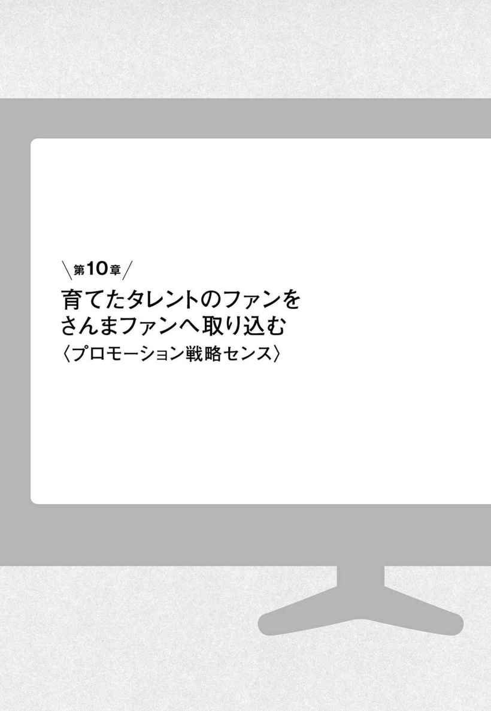
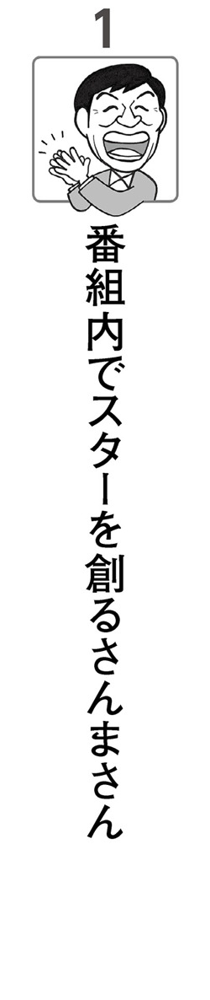

| 新さんまさん論―――なぜ人を飽きさせずに売れ続けるのか | |
| 伊敷豊 | |
| こう書房 (2016) | |
はじめに
さんまさんがテレビ業界史上初のすごいことをしているのに、誰も気がつかない
明石家さんまさんは、還暦を迎えても人気者。
いやいやスゴイですね。
長寿番組は最近少なくなりました。
「長寿番組」という言葉自体が死語になるのかもしません。
長寿番組と言えばタモリさんの『森田一義アワー笑っていいとも！』（フジテレビ系列）でした。タモリさんは30年以上続けている番組を二つ持っていました。
『笑っていいとも！』は１９８２年～２０１４年の32年間放送され、『タモリ倶楽部』（テレビ朝日系列）もスタートは『笑っていいとも！』と同じ１９８２年スタートで、30年以上続く長寿番組。
実は、タモリさん以上に長寿番組を持っているのは、明石家さんまさんです。
『さんまのからくりＴＶ』（ＴＢＳ系列）
１９９２～２０１４年......22年間
『恋のから騒ぎ』（日本テレビ系列）
１９９４年～２０１１年......17年間
『さんまのまんま』（フジテレビ系列）
１９８５年～現在......31年間
『痛快！明石家電視台』（毎日放送）
１９９０年～現在......26年間
『ヤングタウン土曜日』（ＭＢＳラジオ）
１９９２年～現在......24年間
『踊る！さんま御殿!!』（日本テレビ系列）
１９９７年～現在......19年間
どうです。さんまさんもタモリさんに負けてはいませんよね。
このように書くと、完全なファン目線だろうと言われそうですが。
さて、本書は「なぜ、さんまさんは長年人気者であり続け、長寿番組を抱えているのか？」という疑問から出発しています。
さんまさん資料を収集しようとしても、ご自身が書き下ろされた本はほとんどありません。『ビッグな気分』（集英社、１９８０年）と『こんな男でよかったら』（ニッポン放送出版、１９８４年）があるくらい。『本人』（太田出版 Ｖｏｌ．11）、『クイックジャパン』（太田出版 Ｖｏｌ．63）に珍しくロングインタビューが掲載されています。
私は、さんまさんの番組『踊る！さんま御殿!!』『痛快！明石家電視台』『さんまのまんま』は録画して視聴していますが、ときどき、お笑いの本質をさんまさん自身が語ることがあります。
『さんまのまんま』に直木賞作家・西加奈子さんがゲスト出演していました。西さんの「北斎みたいになってください」という依頼に対するさんまさんの答えにしびれました。
「笑いは緊張と緩和」
「70、80点でうろちょろしておきたい」
「人を笑わかす」ということを突き詰めたとき、「狂気」「死」を予感するのです。
その一言に西さんも「鳥肌が立ちました」とおっしゃっていました。
「人を笑わかす」を突き詰めるのはただごとではないのです。
さんまさんって、やはりすごいのです。
さんまさんが出演されている番組のほかに、数少ない紙媒体資料を読み解いていくと、さんまさんの隠された「三度の挫折」「人生の壁」「売れ続ける戦略」が浮かび上がってきました。テレビ画面のさんまさんとは違う真の姿が見えてきたのです。
第１章のタイトルは「さんまさん、三度の挫折」です。
さんまさんご自身が三度の挫折を述べているのではありません。
著書、インタビューを何度も読み返し、読み解くと、若いときに「三度の挫折」をしていることが浮かび上がってきたのです。さんまさん本人は「挫折」だと思っていないかもしれませんが、たしかに挫折しているのです。
最初の挫折は、なんと小学四年のときです。さんまさんのプロ意識は、すでに小学四年にはできあがっており、挫折はプロ意識からくる大人の挫折なのです。
公徳心が天才を生むという私の仮説があります。
さんまさんにも「公徳心」があります。
私たちには垣間見ることができない、真面目で公徳心のあるさんまさん。
「真面目」「公徳心」ってさんまさんに似合わないし、「あるの？」と思われる方がほとんどでしょう。
お笑い界では、北野武さん（ビートたけしさん）がよく天才と評価されていますが、北野武さんに引けを取らない天才がさんまさんだと思います。
天才ぶりをさんまさんは隠しています。それは、キャラにあわないから。さんまさん風にいうと「個性が死んじゃう」からなのです。
なぜ、天才なのか。
実は天才になる条件があります。
その条件が「三度の挫折」「人生の壁」なのです。
さんまさんがなぜ長く人気者でいられるのか。長寿番組を持っているのか。
さんまさんは、売れ続ける法則を発見し、創造し、戦略として実践しているのです。
売れ続ける法則、売れ続ける戦略を構築し、実践し、かつ現役コメディアンとして活躍するのはお笑い界で史上初のことではないでしょうか。もっと言えばテレビ業界初で、誰もやっていないことを気がつかれないようにやっているのです。
それが売れ続ける戦略です。
私は、スイーツは満腹でも食べてしまう別腹とひっかけて「さんまさんのベツバラ・マーケティング戦略」と命名しました。
飽きない、売れ続ける「ベツバラ・マーケティング戦略」
明石家さんまさんは、単なる芸人ではありません。
超一流の芸人であり、超一流のプロデューサーでもあります。
プロデューサーというとＡＫＢをプロデュースした秋元康氏を想起します。さんまさんはもちろん芸人ですが、秋元康さんと比べても見劣りしない天才プロデューサーなのです。
意外に思われる方が多いかもしれません。しゃべるだけの芸人ではないのです。
さんまさんは、たしかにお笑い芸人ですが、さんまさんの能力を分析すると、さんまさんの優れたプロデュース能力が明らかになります。
さんまさんの優れたプロデューサー能力は次のとおりです。
・人材を発掘して育てる能力
・売れる（覚えやすい）言葉を開発する能力
・視聴者の視点で番組を構成し、組み立てる能力
・戦略を組み立てて、推進する能力
さんまさんはなぜプロデューサーとしての能力が高いのかというと、答えは簡単です。
琴線が読めるからです。
「琴線......てなに？」
間違っても「ことせん」と読まないでください。「きんせん」です。要するに人の奥底の微妙な心理を読めるのです。それについては本文に詳しく書いています。
マーケッター目線で明石家さんまさんの番組を観て、さんまさんの言動や考え方を分析すると、心理・琴線を読めていることに気がつきます。
だから超一流プロデューサーなのです。
ときどき「さんまさん限界説」が起こります。さんまさん限界説は視聴率低下、レギュラー番組終了を理由に、十数年ごとに繰り返しささやかれます。
それは、週刊誌などがネタ切れしたときに組む特集と捉えてください。
さんまさんには限界はありえません。
人気が衰えることはありえません。
もう一度いいましょう。
さんまさんの人気は永遠だからです。
さんまさんが亡くなったあとも人気は続くのです。
理由があります。
それは、売れ続ける法則を発見し、さらに仕組みを開発したからです。
本文の後半に書いていますが、「長寿番組の法則」にさんまさんは気がついたのです。
「長寿番組の法則」は、至ってシンプルです。
番組内で、新しい人気者、スターを作り上げることです。
誰でも「長寿番組の法則」に沿って、番組内で、新しい人気者、スターを作り上げれば長寿番組を作れるのかというと、そう簡単にいきません。
お気づきになりました？
そう、新しい人気者を開発する能力が必要となります。
人気者を開発するには「琴線を読む」能力が必要です。
「琴線が読み解ける」ことができれば、次のことができるようになります。
【入門レベル】
場の空気を読める
お客さんの心理が読める
【応用レベル】→〈天才の条件が必要〉
未来を予測できる
人を育成することができる
売れるネタ、物、サービスを創出できる
入門レベルは、努力しだいですが誰でもある程度できるようになります。応用レベルとなると「天才の条件」が必要です。
もちろん、さんまさんは天才の条件を満たしています。
驚かされるのは、さんまさんが意図的に戦略レベルでやっていることです。
さんまさんはマーケティングミックス戦略を実践されていると言ってよいかもしれません。さんまさんご自身がマーケティングを勉強したとは思いません。自然と結果的にマーケティング戦略になっているのです。非常にシンプルに捉え、かつそれを実践して結果を出していることに驚嘆します。
天性のマーケッターであり、プロデューサーです。
マーケッターから見ても「へぇ～」と感心してしまうくらいすごい。
芸能界でもビジネスでも、飽きがこないことは重要です。
お笑い芸人も、新商品も、毎年、雨後の竹の子のように出てきます。
芸能界もビジネス。実力主義であり、年功序列ではありません。競争が前提です。そのなかでも長年トップを維持していけるのは、飽きさせない工夫をしているということです。
飽きない、飽きさせない売れ続ける法則を発見し、「ベツバラ・マーケティング戦略」を構築しているのです。
「長寿番組の法則」×「琴線を読む」＝ベツバラ・マーケティング戦略
お笑い番組は食傷気味でも、さんまさんの番組はデザート感覚で、別腹で食べてしまう感じです。
さんまさんとはぜんぜん違うタイプですが、内村光良さんもマーケティングの視点から注目しています。内村さんはさんまさんほど戦略的とは思いませんが、「長寿番組の法則」×「琴線を読む」＝ベツバラ・マーケティング戦略を実践している方です。
特に番組中に人財を開発する能力は、非常に長けています。琴線を読む能力は、さんまさんに及びませんが、なかなかのレベルです。
明石家さんまさんがメインですが、少しだけ内村光良さんも分析していきながら、売れ続けていくにはどういう仕組みが必要なのか、マーケティングの視点で読み解いていきます。
お二人とも「笑い」に飽きない。
飽きさせないために、飽きない、なのか......。
飽きないから、飽きさせない、なのか......。
新さんまさん論──もくじ
２ 教育評論家・尾木直樹さんからオネェキャラを引き出したさんまさんのすごさ
３ 「尾木ママ」と命名したさんまさん、売れるネーミングの極意
６ プライベートで浅田美代子さんの天然ボケ事例を収集しキャラづくり
１ お笑い芸人二人でたあいのない話をする史上初の「雑談芸」にチャレンジ
２ 既存の笑いを破壊し、「雑談芸」を創造した、さんまさんの戦略
カバーデザイン／ナカミツデザイン
イラスト／なかむら治彦
本文レイアウト・組版／北路社
さんまさんは若くして「挫折した」。
と書くと、「ホンマでっか？」と言われそうですが、さんまさんは若くして挫折を味わっていたのです。それも三回も。
一回目の挫折はなんと小学四年生のときです。
早いですね。
「エッー」と驚かれると思いますが、さんまさんはたしかに挫折を味わっているのです。私たちが考えがちな小学四年生のかわいらしい挫折ではありません。なまやさしくない本格的な挫折です。まさにプロ意識からくる挫折感です。
小学四年生でプロフェッショナルだったのです。
さんまさんのお笑い芸人としてのデビューは、小学四年生。大塚君と組んだ漫才。もちろん、ネタはさんまさんが書く。大塚君がボケでさんまさんがツッコミ役。
最初のネタがすごい。センスがよろしい。
「大鵬とかけておまえのパンツと解く、その心は？」
「いつ敗れる（破れる）か」
『こんな男でよかったら』明石家さんま 著
小学四年生にして笑いのセンスはかなりレベルが高いことがわかります。
ユニクロで上質の下着が手軽に買える今のご時世であれば「パンツが破れる？」と思われるかもしれません。
が、昭和三十～四十年代当時はモノがない時代。パンツの生地も木綿で薄く使い込むとヨレヨレになり肌が透けて見える感じになる。なにかの拍子で踏ん張ったりしたらビリッと破けるのは日常茶飯事。
小学生であれば相撲とかとるとパンツが破れるのはよくあったはず。
第四十八代横綱・大鵬は、１９６０年代に活躍した大横綱。さんまさんは１９５５年７月生まれなので、まさにリアルタイムにテレビにかぶりついて観ていたのでしょう。
大鵬はライバル柏戸とともに「柏鵬時代」と呼ばれる大相撲の黄金期を築いた。なんと優勝32回、６連覇２回、45連勝など昭和の大横綱、戦後最強の横綱。当時の子供の好きなものを並べた「巨人・大鵬・卵焼き」という言葉からも、当時の大鵬の人気と知名度がわかります（大鵬企画ＨＰ参照）。
連勝記録を更新していく大鵬が「いつ敗れるか」と、薄い木綿生地の「パンツが破れるか」、をかけたわけです。
小学生レベルだとテレビで爆笑した芸人、コメディアンのギャグを真似したり、変顔をして笑わせたりするのが関の山。が、そういう微笑ましいほんわかとしたレベルではなかった。
単に面白かったわけではない。
さんまさんは、小学生のときから面白かったのですが、「大人顔負けのセンスのあるクリエイティブな面白さ」だったのです。さんまさんの面白さは私たちの想像をはるかに凌駕していたのです。
小学生で創作ができたということです。漫才のネタを書ける作家さんレベルだったのです。のちにさんまさんは、『オレたちひょうきん族』で芸人として出演しながら放送作家、その後プロデューサー的な仕事をして番組を作り上げてきましたが、さんまさんとしては当たり前にできることだったのです。
私もダジャレ好きですが、小学四年生のさんまさんの弟子になりたいくらい。
しかし、さんまさんのすごさはそこだけにとどまりません。
ネタが作れるのもすごいのですが、「笑いに対する意識」です。
プロ意識がすでにあったのです。
さんまさんは、小学四年生ですでに芸人「明石家さんま」だったのです。
そう、杉本高文少年ではなく、芸人「明石家さんま」だったのです。
さんまさんは、ネタは自分が書いているのに、ボケ役の大塚君が面白いと言われることに納得がいかない。面白いのに評価されないことにジレンマ、悔しさを感じたのです。
普通の小学生であれば、クラスメイや先生が笑えば、それなりに面白い、楽しいはずです。満足してよいはずですが、さんまさんは納得いかない。
もうそれは「大人の悩み」。
これってプロの悩みです。
大人の悩みレベルに驚きを隠せません。
多くの人は、社会人になって上司から「悔しくないのか」「もっとよく考えろ」「給料分だけも働け」と奮起を促されてプロ意識がだんだん覚醒していきます。もちろん目覚めないままの人もいますが。
さんまさんは、プロとしての笑いだったのです。
さんまさんは「笑い」に対してそれだけシビアだったということです。
小学四年生でテレビ番組にも出ていないのにプロ意識ってありえないという人がいるかもしれません。
そうでしょうか。
たとえば、子役の俳優。小学生でもプロ意識がすごいなぁという子役もいます。それと同じことです。プロとしてお金をもらっている大人の芸人でも、素人と変わらないレベルの人も多い。お金はもらわないにしても「お笑い」に対して素人ではなかったのです。
さんまさんは、小学四年生でプロのお笑いとして挫折を味わうことで、ピン芸人を選択します。
それにしても早すぎる挫折が、その後のさんまさんを創っていくのです。
プロ意識バリバリの小学四年生芸人さんまさん。
小学四年生で認められない挫折を味わい、ピン芸人を選択したさんまさん。
高校生になるとなんば花月へ足しげく通い、漫談、落語など演芸を覚えた。お笑いへの追求が半端ではない。
学校は朝出席だけ取って、電車に乗ってなんば花月で演芸を観て、クラブ活動の時間の時間に帰ってきてサッカーをする毎日。
『本人』（Ｖｏｌ．11 太田出版）
もちろん芸人一直線ではありません。
高校一年生でパチンコをして悪さもしています。パチプロの知り合いのお兄ちゃんにクギの位置、玉の流れを仕込まれて、二週間でパチプロとして稼げるようになった。さすがに器用で呑み込みが早いさんまさんという感じです。
誰にでもある青春の一ページに書かれているような多少の悪さはしたと思います。パチプロも悪ガキで不良だったのも青春の一面に過ぎません。さんまさんがパチプロとして本気でやっていたら今頃、パチンコ会社を経営していたでしょう。
それにしても、「電車に乗ってなんば花月で演芸を観て」ということは高校生の発想ではありません。プロ意識がなせるわざです。
なんば花月は大阪なので、奈良県から電車で行き来するだけでも時間がかかるし、電車賃などお金は必要となります。当時、さんまさんの実家は水産加工業を営んでいたので人並み以上にお小遣いもあったと思いますが、パチプロとして稼いだのも芸の研鑽のための軍資金だったのではないでしょうか。プロでもそれくらい熱心に演芸、芸を研究している人がどれくらいいるのでしょうか？
さんまさんが、自分が出演した番組を録画して観ることは有名ですが、同業者の番組もよくチェックしています。それは、吉本興業に入る前以前からのプロとしての習慣なのです。高校生のとき、奈良からなんば花月に通い笑いをチェックし勉強している姿勢となんら変わりません。高校生の延長線上に現在もあるのです。
プロの芸人、芸能人として意識していた逸話があります。
クラスで芸能人人気投票があって、芸能人に交じってさんまさんが七位になった。ちなみに、八位が野口五郎さん。芸能人人気投票が学校新聞に掲載された。
よくもまあこんな〝不良〟が「芸能人人気投票」で七位になったもんだと不思議な気ィしますけどね。
でも「芸能人」にはちがいなかったし、「芸能人」いうたら学校でもぼく以外にいてなかったかもしれません。ほんと、笑いをとるのが生きがいの青春時代でした。
『こんな男でよかったら』
もちろん、さんまさんは、当時弟子入りもしていないし、どこかに所属しているタレント・芸能人ではなかったわけです。クラスでのある意味、内輪の芸能人人気投票ですが、感慨深げに話しています。
つまり、さんまさん本人は高校生時代「芸能人」として意識していたことがわかります。
さらに、さんまさんも自分の才能を見抜き、意識的に伸ばしていることが、次の発言に表れています。
自分のもっている才能──どんな小さなことでも、どんなつまらんことでもいいから──それを早くみつけて、ひたむきにのばしてゆく、いう姿勢が必要なんやないですか。
えらそうにいいましたけど、ぼくの場合はそれが「人を笑わかす才能」やったと思うんです。
『こんな男でよかったら』
さんまさんは、高校生以前の小学四年生で自分の持っている「人を笑わかす才能」にいち早く気がついたのだと思います。どう伸ばしていくのか試行錯誤して、自分の才能を伸ばすためには二人で組む漫才を捨てピン芸人を選択したわけです。そして吉本なんば花月へ足しげく通い、演芸を学んだということではないでしょうか。
クラスで芸能人人気投票七位にランキングされたのは、自分の「人を笑わかす才能」に自ら気づき、その才能を伸ばしてきたことが認められた瞬間だったのではないでしょうか。さんまさんの感慨深さからも芸能人、芸人としてのプロ意識がいかに本物であったのかわかります。いい加減な人気者であれば、芸能人人気投票七位にランキングされたとしても一瞬喜ぶだけですぐ忘れてしまったのではないでしょうか。
小学四年生から十年も「人を笑わかす才能」を伸ばし続けたさんまさんは、芸能人人気投票七位ランキングされたことである意味、人生のピークを味わったのかもしれません。
文化祭で二時間の杉本高文ショーみたいなことをやらせていただいたり、その時が一番面白かったと思います。
僕は十七歳が笑いの頂点なんです。だからそれを今の茶の間の皆さんにお見せしたい、すっごい面白かったです。僕が世間に認めていただいたというかデビューしたネタも、十七のときに作ったやつでしたからね。
『本人』
高校生のときはもちろん素人。
人生のピークとはいえ、芸能界・お笑い界のプロの世界ではないから成功うんぬんとは言えないのではないかと思うかもしれない。
「昔を懐かしがっているだけだろう」と思われるかもしれないのですが、さんまさんは、違う。さんまさんは自分の「人を笑わかす才能」を伸ばすことをやり尽くしたわけです。やり残していない。心からそう思っているのです。
高校生、十七歳のときに人生のピークを味わったのですから、その反動が大きいことは想像できます。
オリンピック選手で、若くして頂点に立った選手が燃え尽き、次のオリンピックへの意欲をなくすことは多々あります。フィギュアスケート選手の浅田真央さんもオリンピック終了後、１年間休養し復帰した。それと似た〝燃え尽き症状〟がさんまさんにもあったはずです。
何かにうちのめされたのならまだ立ち直るきっかけを探すのは簡単ですが、自分との闘いです。相手は自分ですから、奮い立たせるのは至難のわざ。
それだけ過激な努力だったということです。達成感が引き起こす燃え尽きた自分の心、あるいは虚脱感が覆ったのではないでしょうか。
達成感後の挫折です。
高校を卒業して、さんまさんは笑福亭松之助師匠に弟子入りします。
好きなお笑いの道を歩んでいるので、順風満帆ではないか、規定路線へ進んでスター街道をかけのぼったと思われるかもしれません。
お笑いスターとなった現在のさんまさんを観ているからそう受け止めてしまいます。
「人を笑わかす才能」を十七歳で開花させたさんまさんにとって、弟子入りした当時は本当の意味での目標はなく虚無的だったのではないでしょうか。
ウチの師匠は弟子たちに「おまえご飯たべられへんぞ」って言うんです。で、「わかっています」って言うと「そしたらいいわ」って。
僕も落語で食べられるとは思っていなかったんで、その時によく「夢は？」って聞かれて「浴衣でアヒルを連れて散歩する生活が夢だ」と言っていました。
『本人』
笑福亭松之助師匠に弟子入りしたものの落語家で成功するなど考えていなかった。
「浴衣でアヒルを連れて散歩する生活が夢だ」を裏読みすれば、当時は完全に向かうべき具体的な目標はなかったのだと思います。
もっと踏み込んで言うと、さんまさんは人生で初めてスランプに陥った。
落語家としてやっていこうとしたが、話芸に関してどうも合わない。
落語は、自分で演じる話芸です。セリフを覚え演じる役者さんと同じ。
本来さんまさんは空気を読み周りを巻き込む瞬間反応型話芸（今でいうアドリブ）なのです。時代を先取りした新しい話芸を構築しつつあったのだと思います。
もちろん若かりし頃のさんまさんは、自分の独自の芸風には気がついていません。
当時、さんまさんの落語を聞いてもおそらく人並みだったはずです。高座にあがり七本古典落語をしたが、さんまさんご自身も下手だったと認めています。
下手くそな落語でしたけど、朝日放送で演ったやつを録音したテープを鶴瓶さんが持っていて、今でも「おまえはこんなもっさりしたことやってたんやぞ」ってからかわれています。
『本人』
「もっさり」は動きがにぶい、気が利かない、あかぬけないという意味ですが、さんまさんが「もっさり」とした話芸だったというのは信じられません。
さんまさんは、弟子入り当時、人生初の大スランプ、不振に陥ったと想像できます。古典落語がもっさりしていたのも当時の心境が表れているのでないでしょうか。
自信喪失したさんまさんに夢が語れるはずがない。「浴衣でアヒルを連れて散歩する生活が夢だ」と少し斜にかまえ、うそぶくだけで精いっぱいだったのです。
当時『ヤングおー！おー！』『ヤングタウン』『オールナイトニッポン』にゲスト出演の夢があったが、さんまさんは、東京へ進出してお笑いスターになるとは考えていなかった。
「落語家やりつつ、この三つの番組にゲスト出演でもできたらいいな」と思っていたのがすべて叶って。
『本人』
さんまさんが「番組にゲスト出演でもできたらいいな」とは驚きですが、それくらいスランプに陥り心理的に萎縮していたのです。
人生初の大スランプ。その時代、駆け落ち事件に巻き込まれます。
駆け落ちだから、巻き込まれたのではなく起こしたのではないか、と思われるかもしれませんが、著書『こんな男でよかったら』を読むとたしかに巻き込まれてしまったのです。
さんまさんは自分の芸への「迷い」から、ある同級生の女性に同情してしまいます。
その女性が「家を出たい」ということを訴えたので、さんまさんは「よし、ぼくが何とかしてやるわ」と大見得を切ってしまった。師匠に「落語家をやめます」と言い、親からも反対されたので、身ひとつで家を飛び出してしまったのです。
さんまさんは落語家としてまだ修行中の身。その女性が本当にさんまさんのことが好きだったら、「家を出たい」ということは言わないはずです。
友だちを頼りに単身東京へ。彼女はあとから来たのは来たものの、さんまさんと一緒に暮らすとか同棲するのではなく東京と大阪を行ったり来たり。結果的に中途半端な駆け落ちとなってしまったのです。というか、これでは駆け落ちではなく完全にさんまさんの単身赴任状態というオチになってしまった。まさに散々な状態。
さんまさんは、アパートを借りますが、手持ち資金はなくなってしまう。生活基盤はさんまさんが整えなければなりません。生活もしなければならない。高校生のとき覚えたパチンコが窮状を救います。
パチンコでほとんど家具は揃え、テレビがないのですっかり知り合いになったパチンコ屋のおっちゃんと勝負してテレビを手に入れた。戦利品のテレビを見ながら、さんまさんはゾクゾクと悪寒が走った。
「こんなことやってたら自分がダメになる。パチンコにたよって生きてったら、おしまいや」そんな声が心の中で聞こえてきたんですわ。
『こんな男でよかったら』
パチプロを辞めてまともな仕事を探す。そこでパン屋さんで働きだし、芸人魂でお客さんを笑わかし近所の若奥さんから評判となり、店のフロアを任されるものの物足りない。
「人を笑わかす才能」が沸き起こります。
仕事がほしくて船橋のストリップ小屋まわって、
「ストリップの前説がわりに漫才やらせてくれまへんか」と頭下げて頼んだりしてたんです。
「すいませんが、15分でもけっこうですからネタやらせていただけませんか」
「いらんいらん。弟子についとらんもんはいらん。それに大阪はダメだよ」
あっさり門前払いです。
『こんな男でよかったら』
さんまさんが自ら営業をして廻り、門前払いされる姿は今では信じられません。大阪芸人を否定され、冷たくあしらわれ、さんまさんは悔しかったと思います。芸人、芸能人として高校二年でピークをきわめた人間として、才能を披露できないもどかしさは辛かったはずです。プロとしてのプライドはズタズタに切り裂かれたはずです。
三度目の挫折。若かりし頃のさんまさん「挫折三部作」の完成です。
その後、友だちに説得され、彼女とも別れて大阪へ帰るのですが、さんまさんにとって必要な挫折だったのかもしれません。
「人を笑わかす才能」を十七歳で開花させたさんまさんにとって、笑福亭松之助師匠へ弟子入りした当時は虚脱感が大きく、「夢は？」って聞かれて「浴衣でアヒルを連れて散歩する生活が夢だ」と答える始末。
彼女に同情し駆け落ち事件に巻き込まれたのですが、さんまさん自身もどこかに逃げ出したいのではなかったのでしょうか？
同情で駆け落ちという形になりましたが、彼女がいなくてもどこかに逃げ出していったのかもしれません。スランプに陥った自分からの逃避です。
独りでいると悶々と考えてしまいます。パチンコの戦利品、テレビを見ながら今の自分の置かれている立場、状態を考えるようになった。
落語家を辞めた後悔。
自分の「笑わかす才能」への申し訳ない気持ち。
東京のアパートの小さな部屋で走馬灯のように駆け巡ったに違いありません。
さんまさんは深く問い始めたのだと思います。
自分への問いが、枯渇した「笑いへの渇望」がわき出てきたのです。
考えてみれば、駆け落ち事件は、笑いの神様が与えたチャンスだったのかもしれません。
その女性はさんまさんにとって「芸人魂」を復活させ、プロの芸人へ引き戻してくれた女神だったのです。
笑福亭松之助師匠はさんまさんの古典落語を聞き、「どうしたものか」と困ったと思います。「さんまには古典はむつかしいなぁ」と感じたはずです。センスのある師匠なので、さんまさんのセンス、才能は見抜いていたはずです。同時に人生初の大スランプに陥ったことにも気がついたはずです。
想像ですが、笑福亭松之助師匠が友だちを使い迎えに行かせたのはないでしょうか。
飛び出したさんまさんを師匠はだまって迎え入れた。
「師匠、すいません」そう言うた瞬間、
「わかってる。なにも言わんでもわかってる。来い、ごはんたべにいこ」そう言って連れていってもらったのが、弟子入りした時一番最初に食べさせてくれたラーメン屋やったんです。
「お願いします」とか言うでもなく、師匠は説教ひとつするでもなく、また「さんま」として修業をつづけることになりました。
『こんな男でよかったら』
師匠は、説教ひとつしなかったのですが、実は、説教ひとつしないのも説教なのです。要するに「自分で自問自答して悟りなさい」と声なき声で説教をしたのです。さんまさんが真面目な性格であることはわかっており、自分で反省するだろうと考えたのでしょう。
師匠オシャレですね。やっぱりセンスありますね、さんまさん。
笑福亭松之助師匠に弟子入りしたのも「センス」。
さんまさんはセンスに異様に執着していることがわかります。
高校の時にウチの師匠（笑福亭松之助）の新作落語（「ＴＶアラカルト」）を見て吹き出したんです。〈中略〉ウチの師匠のだけは本気で笑うてしまったんです。
「仮面ライダー」がまだ始まったばっかりの頃で「（主人公の）一文字隼人という男が砂糖壺みたいな面被って～」って、仮面ライダーのことを「砂糖壺みたいな面」と表現する、その言葉のチョイスにいたく感動して「この人の言うことだったら聞ける」と思って入門させていただいて。
で、師匠に「なんでわしを選んだんや？」って聞かれて、高校生のくせに「はい、センスありますさかい」って言うたんらしいです。〈中略〉当時としては最大級の褒め言葉のつもりだったのに。
「センスがある」と思って師匠を選んだのは事実ですから。
『本人』
さんまさんはセンスの塊。
センスとは何か？
「物事の微妙な感じをさとる働き・能力。感覚」
感性とは何か？
「外界の刺激に応じて感覚・知覚を生ずる感覚器官の感受性」と広辞苑に書かれています。
微妙な空気を察知する能力、琴線が読める人でなければセンスは身につかないのです。
さんまさんの三度の挫折とセンス、感性はどう結びつくのでしょうか？
挫折を味わうと誰しも「なぜこうなったのか？」考えるはずです。そして「問いかける」。普通の人であれば「問いかけ」はそんなに長く続かない。
さんまさんは、小学四年生で自分がネタを考えたのに相方が評価される挫折感を味わっています。なぜそうなったのか、考え問い続けた。それでピンの道を選んだわけです。
さんまさんは、高校二年生で〝芸能人〟としてのピークを味わい、大きな達成感を得た反動で虚脱感を味わい、悶々と問い続けた。しかしそのとき答えは出ない。
そして、駆け落ちで一人東京のアパートで誰もいない部屋で今の自分へ問い続けた。
さんまさんは天性のセンス、感性は持っている人でした。しかし、天性の才能だけでは超一流にはなれません。
問い続けることで、センス、感性は格段に磨かれ超一流となるのです。
メジャーリーガーのイチロー選手は誰もが認める超一流選手。
天性のバッティングセンスもありますが、独自の理論もしっかり持っています。しっかりとした独自の理論を持っているので、スランプになっても修正できます。
一時期すばらしい成績を残し注目された選手が、数年経過すると消えていく。プロはエリート集団であり、センスのある人間の集団です。天性のセンスだけに頼りある程度までいけるが、一度状態がおかしくなったとき、原因を究明できずスランプに陥ったままになるのです。
イチロー選手は、幼い頃からバッティングについて「問い続けた」。
「なぜ、そうするのか？」「その意味は？」常に内観し続け、問い続けることで、感性力のみならず、直観力、洞察力、共感力も磨かれていきます。同時に、その意味、背景、仕組みがつかめるようになるのです。感性力は、「問い続ける」ことで磨かれ高まるのです。
さんまさんは、三度の挫折で感性力のみならず、直観力、洞察力、共感力も磨かれたのだと確信します。
そのレベルになると琴線を読むことができるようになります。
実は、日本流マーケティングに必要なのが琴線を読む力。
感性、センスです。さんまさんは、日本流マーケティング勉強はしていないと思いますが、日本流マーケティングセンスがあるのは、琴線が読めるからです。
さんまさんは、三度の挫折を味わう前と後ではぜんぜん違うはずです。
三度の挫折を味わう前までは天性の才能やっていけました。
しかし、高校生で頂点を味わったことで大きなスランプに陥った。
そこで、三度目の挫折で、問い続けスランプを脱することができるようになったのです。
イチロー選手のように、独自の理論を持つことで修正できるようになった。
それが話芸です。
話芸、至芸はある程度、直観的笑いに歯止めをかけてしまうので、高校二年生の素直な笑いは二度と味わうことができなかったのだと思います。話芸として完成していくにつれ直観的、感性的笑いが薄れてきたのです。
「高校生のときが笑いのピーク」とさんまさんが言うこともわかります。
「私には感性がない」とあきらめている人は多いのではないでしょうか。「感性がない」と思い込んでいる人は、本来持っている自分の感性を磨いていないだけです。もちろん感性は先天的な部分もあり、人により差はありますが、後天的に誰もが伸ばすことができます。磨くことで感性は鋭くなるのです。
その感性を磨くにはどうしたらいいのか。
感性力を高めるには、日常生活においては、先入観を持たず、自ら考え、好奇心を持ち、掘り下げ「問い続ける」ことです。残念ながら私たち人間は楽をしたがる動物なので、できるだけ、先入観を持ち、自ら考えず、好奇心を持たず、掘り下げないことを続けています。たしかに楽ですが、そうなると感性は育たない。
「問い続ける」ことで、感性が鋭くなると断言します。繰り返しますが、簡単のようですが、なかなか実践できません。
一つのことを「問い続ける」ことで洞察力、感性力が高まり、そして独自の理論ができあがってくるのです。一流のアスリート、目利きの達人は、その典型です。
単純なことでも問い続けるということで見きわめることができます。
たとえば、缶詰を叩いて不良品を識別するプロがいます。缶詰はどれも同じで叩いて不良品って識別できるのか一般の人からは「ありえない」と考えてしまいます。が、問い続けると識別できるようになるのです。
缶詰を金属の棒でこんこん叩いて不良品化を探す目利きの達人。最初は金属の棒でこんこん叩いてもわからなかったはずです。
しかし、不良品の音を何度も繰り返し聞き、見きわめるということを繰り返しているうちに、不良品の缶詰の音が聞き分けることができるようになったのだと思います。
おそらく、もっと目利きになると音だけなく、不良品の缶詰を叩くことなく直観で正確に当てることができるようになるはずです。目利きになると缶詰を叩く前に直観で察知して、叩くのは再確認という感じになると思います。
「問い続ける」ことは至芸に通じるのです。
さんまさんには男気があり、公徳心がある、というと読者の方は「ウソ」と思われるかもしれません。
それは、さんまさんに失礼です。
が、「ウソ」と思われる方も当然いると思います。なにせ「ウソつき」「軽い男」で有名ですから。そのように書くとファン台無しですが。
ただ、さんまさんのイメージ「ウソつき」「軽い男」は、さんまさん自ら創出したイメージ。詳細は後に述べていますので省きますが、本当のさんまさんは、男気があり、まっすぐで素直な人です。もっというと公徳心のある人です。
これはファンの偏った見方だろうと思われるかもしれません。
いやいや、きちんと冷静に分析しても、さんまさんは「天才の条件」に合致しているのです。
天才の条件は次のとおり。
【天才の条件】
・素直である
・能力的内観（問い続ける）をしている
・洞察力、直観力、共感力、感性力がある
・琴線が読める
・公徳心がある
・人生の壁
詳しくは前著『鈴木敏文がやっている「お客様心理」の読み方』（こう書房）にも書いていますので、詳細は省きますが、少し解説しましょう。
天才の条件として、素直、内観を挙げていますが、自分を内省するだけでは洞察力、直観力、共感力、感性力は身につきません。「内観」は精神を統一して自分自身の心を観察することでありますが、「内観」には二つの「内観」があります。
「人格的内観」と「能力的内観」です。
「能力的内観」は、仕事上で「問い続ける」「判断し続ける」ことです。
先に「問い続ける」ことが「感性」を醸成すると書きましたが、「問い続ける」「判断し続ける」ことで洞察力、直観力、共感力、感性力は確実に高まってきます。同時に、人間的成長も促進し公徳心が高まります。さらに「問い続ける」「判断し続ける」ことを深化させ、持続的成長をしていくわけです。
頭がよく能力が高いだけの人は、一流になれても天才にはなれません。
公徳心がなければ、天才にはなれません。
私の認める天才がセブン＆アイＨＤ会長の鈴木敏文氏であり、松下電器の松下幸之助氏、三井財閥の家祖・三井高利氏です。もちろん、さんまさんも天才です。
さんまさんに公徳心があるのかというと、メチャメチャありますと答えます。
それは、さんまさんのプロフィールに隠されています。
さんまさんのプロフィールには「和歌山県出身」と書かれています。実家、高校も奈良県なので奈良県出身と書いてもいいはずですが、実は、そこにさんまさんの秘密が隠されているのです。
ぼくが小学校６年くらいまでは貧しかった。というのも、おじいちゃんが事業に失敗したから。おじいちゃんはオートバイ買い占めたり、相撲の興行事業呼んだりしてものすごいもうかる商売しとったんですけど、ひとつの失敗からボロボロになって、全部パアになってしもうた。家二軒売って、それでも借金が山のように残って、奈良へ夜逃げ同然にして来たんです。それでうちの親がおじいちゃんに代わって裸一貫からやり直した。
〈中略〉
苦労してきた親ですから、悪いことやないですけど、〝空気〟いうもん知らんのですわ。まわりのノリを無視してよく白けたことを言うてた。その点おじいちゃんはセンスある、抜群。
やっぱりいろいろと失敗してきた人間の方がオモロイね。開き直りいうのがあるから。いっぺん底辺に落ちてるから、そういう人の発想というのは絶対オモロイ。
『こんな男でよかったら』
さんまさんは、おじいちゃんから「センス」を受け継いだことがわかります。
おじいちゃんは、商売人でものすごく儲かっていたことから、琴線が読める人だということがわかります。センスは、琴線が読める人でないと身につかないので、さんまさんは、おじいちゃんから、センス・商魂を叩きこまれたのかもしれません。
そして、一本気で粋な性格もおじいちゃんから自然に受け継いだのだと思います。
さんまさんがプロフィールに「和歌山県出身」と書くのも、センスのある祖父へのオマージュ（尊敬、敬意）だったのではないでしょうか。
余談ですが、さんまさんの出自は和歌山県東牟婁郡古座町。現在は合併して東牟婁郡串本町になっています。実は私の実家は沖縄県糸満市与座。古座町と与座。私の先祖は熊野に縁があり、さんまさんとはそういう意味でつながり、親近感を感じます。
もう一つは、実母と弟との別れ。
さんまさんは実母を二歳のときに亡くしています。小学校高学年のときに父が再婚。さんまさんには年の離れた弟ができた。誰でも十代の多感な時代。反抗期はあるもので親への反発はあります。さんまさんは歳の離れた弟を可愛がっていました。さんまさんが若手芸能人として絶頂期の三十二歳頃、さんまさんの弟さんが十九歳で亡くなられたのです。実母と最愛の弟さんの死。理不尽な出来事に人は打ちひしがれます。
実は、内観をするには理不尽な「人生の壁」が大きな契機になります。
なぜなら壁にぶち当たると「考える」からです。
だから「人生の壁」は必要です。
天才は理不尽な「人生の壁」に突き当たります。
マーケティングの天才、三井高利氏の江戸・日本橋デビューはなんと52歳。江戸時代なのでかなりの高齢。なぜ52歳からスタートしたのかというと長兄から疎まれていたからなのです。要するに長兄はセンスのある弟・高利氏を嫉妬していたのです。高利氏は、兄の嫉妬という理不尽な「人生の壁」により、自然と内観し、琴線が読める人、商売の天才になったのです。
理不尽さにより、さんまさんは「問い続け」公徳心が醸成されたのだと確信します。
先ほど書きましたが「問い続ける」「判断し続ける」ことで洞察力、直観力、共感力、感性力は確実に高まってきます。同時に、人間的成長も促進し公徳心が高まります。
「ウソつき」「軽い男」で有名なさんまさんですが、それはさんまさんが創作したイメージで実際はまったく逆。芸人では珍しい公徳心のかたまりです。
芸能界きってのまじめ人間で硬派なのです。「彼は元来真面目な男なんですよ」と、笑福亭松之助師匠は『いつも青春ずっと青春』（林家染丸著）で証言しています。
意外とぼく、年上とか先輩いうケジメをはっきりつける方ですから、敬語のしゃべり方なんかものすごう気ィつけます。
ぼくらの世界は先輩・後輩いう大部屋社会が残っているでしょ。せやから自然と敬語が身についた部分があるんです。教えれへんでもそのへんはきちっとできた。
後輩なんかで先輩に対することばづかいの悪いやつがいてると、ものすごく気になるんですね。
『こんな男でよかったら』
さんまさんは『ヤングおー！おー！』（１９６９～１９８２年、毎日放送）で人気者になったのですが、レギュラーになるときに、最初は兄弟子にレギュラーが決まっていた。それが直前になり急遽、兄弟子からさんまさんへ入れ替わってしまった。
ビックリして、プロデューサーに「断らせていただきます」って言ったら、ウチの師匠から呼び出しを食らって、「プロの世界はそういうもんや」と「友達関係もわかるけども、そう大層に考えなくてもいい。どうせお前の実力では半年でレギュラー降ろされるだろうから、その間にテレビの世界を勉強してこい」と。それで引き受けることにしたんです。
『本人』
カッコいいじゃないですか。プロデューサーへ出演を断りにいったのは本気以外なにもでもありません。純粋に、先輩を差し置いて後輩が入れ替わりレギュラーとして出ることに耐えられなかったのです。師匠も一本気の弟子に「お前の実力では半年でレギュラー降ろされる」と心理的負担を軽減するような言葉を添えることを忘れません。粋ですね。
師匠は、先輩よりさんまさんが芸人として腕が上と見抜いていた。半年で終わるとは思ってもいなかったのでしょう。さんまさんは、１９８０年レギュラーになり番組終了まで２年間出演しました。
テレビというそのものに驚きを感じて、テレビの中で誰かが歌う、誰かが喋るということに感動しながら、テレビのバライエティ番組が進化していく歴史をみてこられたっという。
〈中略〉若手がテレビで手を抜いているとすごく腹が立つんです。「テレビっていうのはおまえらが思っているより全然すごいものなんやから」「そんなテレビに出てるんやから、もっと頑張らなあかん」っていう。
『本人』
曲がったことが大嫌いで、手抜きはしない。粋に感じ一本気で、ともすると突っ走ってしまう。要するに、公徳心のある生真面目人間なのです。
このように書くと、さんまさんの個性死んじゃうかもしれません。
すいません、さんまさん。
有名な事件でした。
想像するに、さんまさんの真面目さが招いた事件だったとおもいます。
『さんまのまんま』にゲスト出演した山瀬まみさん。
書道二段ということで書いたところ、あまり上手くないことをさんまさんから指摘されて号泣した事件で有名です。
私も当時リアルタイムに番組を見ましたが、当時十代の山瀬さんはまさに号泣し、子供のように「だって二段だったんだもん」「泣かないもん」「こんなにいじめられたのは初めて」と連呼した光景は、バラエティ番組とは思えない空気が漂っていました。
小学生の二段と上級者用の二段ではもちろんレベルが違う。
山瀬さんは書道が上手いということで、本人も自信があったのでしょう。そこで番組で書いて見せたわけです。
もちろん普通に上手くない。当時三十代のさんまさんも相当焦ったに違いありません。上手くない書道を褒めると本人は勘違いするし、「上手いね」とさんまさんが言えば視聴者からブーイングされることを知っているわけです。
さんまさんは番組中に「恥かいても知らんよ」「編集してあげるから」とフォローしていることに注目したい。
つまり、書道が普通に下手なのに、周りは気をつかって指摘しないばかりか「へぇ上手ねぇ」と持ち上げられたことに本人が気づかない。さんまさんが同じようにオベンチャラで「上手い」と言えば、イメージを落とすのは山瀬まみ本人だということに気がつかないことになります。
かといって、「下手くそ」とツッコまないさんまさんは視聴者から評判を落とすことなる。困った状態に陥ったわけです。
そこで、さんまさんの公徳心がもたげたのです。
裸の王様同様に、書道が下手なのに上手いと本人だけ舞い上がっていけば、視聴者もイタいアイドルというイメージがついてしまいます。笑いをとると言うより、公徳心から「下手」ということを認めさせようとしたわけです。画面から見るとアイドルをいじめているように映るのですが、さんまさんのやさしさなのです。さんまさんが番組中に「恥かいても知らんよ」といったのはそういうことだったのです。
あの事件で得した、あるいは救われたのは、実は山瀬さんなのです。
山瀬まみさんの所属事務所もさんまさんに感謝しているはずです。
さんまさんがヒール（悪）役をしたことで、山瀬さんが書道下手ということよりも、さんまさんがイジメたことに話題を切り替えられたわけですから。売り出し中のアイドルをいじめたことで非難されたのはさんまさんで、あの事件の最大の被害者は山瀬さんではなく、さんまさんだったのです。
山瀬まみさんは『新婚さんいらっしゃい！』（テレビ朝日系、１９７１年～）で、桂文枝（桂三枝）さんの７代目アシスタントとして１９９７年から活躍しています。桂文枝さんはさんまさんの大先輩です。何か縁を感じるのは私だけでしょうか。
さんまさんの座右の銘「生きているだけで丸儲け」。
娘さんのＩＭＡＬＵさん命名の由来でもあります。
これも有名な話ですが、さんまさんは、もしかしたら航空機墜落事故でこの世に存在していなかったかもしれない。１９８５年に起きた日本航空１２３便墜落事故。犠牲者は五百名あまりに及び、歌手の坂本九さんも同乗し亡くなられています。
さんまさんは１２３便で大阪（伊丹空港）へ向かう予定でしたが、収録が予定よりも早く終わったため前の便で大阪へ行くことになった。運命といえばそれまでですが、多くの方々が犠牲になられたことに、さんまさんは大きなショックを受けたと思います。
もしかしたら、この世にいないかもしれないという経験をした人は、人生観が変わるのは当然と言えば当然かもしれません。私も小さい頃、タクシーに跳ねられ、フロントガラスがメチャメチャに。跳ねられる瞬間までスローモーションのように覚えています。タクシー運転手は跳ね飛ばされて気絶した私を見て死んだと思ったようですが無傷でした。
それにしても「生きているだけで丸儲け」は芸能界で生きていく人間にとって不釣り合いな座右の銘ではあります。芸能界は、一見、売れたい、金持ちになりたい欲がうごめく世界です。「生きているだけで丸儲け」は、ある意味キレイごとに聞こえてしまいます。人を出し抜く、生き馬の目を抜く世界ですから、真逆な世界とも観えます。
しかし、よく考えるとビジネス・商売の基本は変わりません。
公徳心や琴線が読めなければ成功はしないのです。先ほども書きましたが、人生の壁にぶち当たり、問い続けることで琴線が読めるようになります。そして公徳心が醸成される。
公徳心がある人は、発言、行動からも垣間見えてきます。
五十四年間も無事に生きてこれて、芸能生活三十六年。これは宝くじ三回当たったどころじゃないんでね。そのラッキーさにはやっぱり感謝しないと。
『本人』
さんまさんは、本心から生きている、生かされている自分に感謝しているのです。
もちろん人生何が起こるのかはわかりません。声が出なくなるかもしれません。病気になるかもしれません。先を恐れても時間の無駄です。それより恵まれている環境に感謝することが大事です。
ウチの師匠から「収入の明細書は見るな」と教わりまして、僕、自分の収入をほとんど知らないんですよ。
『本人』
ギャラが低いことに不満を持つ。これだけしかもらっていないというのは、所属事務所への不信が生まれます。
もちろん、正当なギャラはもらうことは大事ですが、そこにだけ頭がいくと、肝心の芸がおろそかになる。これだけのギャラしかもらっていないから適当に、と考えてしまう。
そうなると、視聴者や番組制作スタッフからも見透かされる。手抜き芸人になってしまうので、仕事も減るのも自明です。
さんまさんはどんな仕事も全力投球で仕事をする。それは仕事をする上で礼儀でもある。ギャラがいくらなのかというのは二の次なのです。そのようなことからみても、さんまさんに公徳心がある傍証でもあるのです。
「高校生のときが笑いのピーク」とさんまさんは何度も発言しています。
その意味はなんでしょうか？
先ほど触れたように、さんまさんは、高校生までは笑いのスランプはなかったのだと思います。
笑福亭松之助師匠に弟子入りして古典落語を高座で演じた当時、スランプに陥った。
三度の挫折を味わう前までは天性の「人を笑わかす才能」だけでやっていけました。
しかし、高校生で頂点を味わったことで大きなスランプに陥ったと思います。
スランプを脱出するには「人を笑わかす才能」だけなく、「人を笑わかす独自理論」が必要でした。独自理論があると修正できるようになるのです。
弟子入りした当時、「人を笑わかす才能」だけでやっている自分に気がつかなかった。老若男女の幅広い客層を笑わせるには、「人を笑わかす独自理論」が必要不可欠になります。
さんまさんが一流になるのか、二流のままでいるのかの人生の分岐点だったのです。
琴線を読めるようになると「人を笑わかす独自理論」を構築しやすくなります。
たとえば、何かの拍子でアドリブでしたら予想以上にウケたとします。普通の芸人であれば、ウケた芸だけ持ちネタとして繰り返します。持ちネタを何度も繰り返すとネタは劣化し、ワンパターンになりどんどんウケなくなります。
偶然手に入れたネタを使い切るのか、ネタをタネ（種）にして発芽させ、成長させるのかは大きな違いです。
そこで必要なのが、「なぜウケたのか」という分析です。
お客さんの心理・琴線を分析するのです。「言葉のフレーズ」「タイミング」「声の調子」「動き」「話の内容」などを検証していくと法則が見えてくるはずです。それが「人を笑わかす独自理論」になるのです。
さんまさんは「人を笑わかす独自理論」に気がついたのです。
なんば花月で前説をしていたときに、偶然、幸運が訪れます。セレンディピティです。
笑福亭仁鶴師匠が雪で新幹線がとまり到着が遅れて、それまで場をつながなければならない。弟子入り当時の新人のさんまさんにとっては追い詰められた修羅場だったと想像できます。責任感が強いさんまさんなので、そのプレッシャーは相当なものだったに違いありません。
仕方ないから高校時代のネタをやって、漫談をやって、それでも仁鶴師匠が入ってこない。そうなるとネタがないんです。それで「困ったな」と思って、仕方なく高校のサッカー部部室でやった形態模写をやったんです。サッカー部の同僚は笑ってくれてましたけど、でも、こんな場で形態模写がウケるなんて夢にも思わなかった。
いや、もう驚きました。みんな形態模写という芸を見るのが初めてやから、すごかったですよ。
『本人』
絶対ウケないと思った形態模写がウケた。
さんまさんは、自分のネタがウケて嬉しいというよりも「絶対ウケないと思ったネタがウケた」ことへの衝撃、ショックが大きかったのだと思います。
そのとき「自分が考えるウケるネタ」と「観客がウケるネタ」とは違うのだということに気がついたわけです。予想以上にウケたわけですから、「お客さんの心理とは何か」ということを考えたはずです。
高校生まで「笑わかす才能」だけでやっていましたが、それは「自分が考えるウケるネタ」を披露しているだけです。「お客さんの心理」を考えていなかったはずです。
「お客さんの心理」というものがあり、お客さんの心理・琴線に触れないとウケないということに十九歳で気がついたのです。
◎高校生まで「笑わかす才能」のみ
「自分が考えるウケるネタ」＝「お客さんがウケるネタ」
◎形態模写がウケてわかった「お客さんの心理」
「自分が考えるウケるネタ」≠「お客さんがウケるネタ」
それに気がつけば、何をするのかはっきりしています。
「お客さんが笑うツボ」を探すだけです。
プロの芸人であるさんまさんはふつふつと湧きあがる疑問にとまどいつつも、疑問の答えを探そうとします。そのためにお客さんの心理を研究していったのです。心理を研究することで、失ったのが「自分が考えるウケるネタ」。自分が直観的に面白い、笑えるのであればいいのですから、歯止めがありません。
「お客さんがウケるネタ」となるとちょっとズレが生じるのです。直観的笑いに歯止めをかけてしまうので、高校二年生の素直な笑いは二度と味わうことができなかったのだと思います。
「お客さんにウケる」ようにでき、スランプを脱することができるようになったのですが、直観的、感性的笑いが薄れてきたのです。
「高校生のときが笑いのピーク」とさんまさんが何度も発言する真意はそこにあるのかと思います。
空気を読むといいますが、簡単ではありません。
なぜかと言うと、人の心理・琴線が読めないといけません。
琴線が読めるようになるのは、「なぜ、そうするのか？」「その意味は？」常に内観し続け、問い続けることで、感性力のみならず、直観力、洞察力、共感力も磨かれていきます。そのレベルになると琴線を読むことができるようになります。言葉のその意味、背景、仕組みがつかめるようになるのです。それが空気を読むということです。
感性力は、「問い続ける」ことで磨かれ高まるのです。
さんまさんは、三度の挫折で感性力のみならず、直観力、洞察力、共感力も磨かれたのだと確信します。
プライベートでは、彼女の言動、同業者にも及びます。どんどん空気を読まないやり取り、センスのなさが見えてくる。
恋人になってかて、その辺のところはビシビシ注意します。ぼくの友だちに対することばづかいなんかは、彼女にうるさいくらい注意するんですわ。
「なんであそこであんなこと言うのや」いうてな。
ある答えを期待してツッコミをやってくと、まーるでこっちの意図も解そうとせんと、トンチンカンな答えをするアシスタント。いてますなー。他人事やいうても見ててムーッとすることがあります。
これは〝空気〟を敏感に感じとるかどうかの差やと思います。感性で覚えていくもんやから教えて身につくもんやから教えて身につくセンスやない。
『こんな男でよかったら』
それにしても、琴線が読め過ぎるさんまさんの彼女になる人は大変です。
さんまさんは、起業しても成功するはずです。マーケティングコンサルタントとしても超一流になれるでしょう。なぜなら、日本流マーケティングは「琴線を読む」ことにあるからです。
「琴線を読む」ことで感性・センスが高まるのです。さんまさんは、日本流マーケティング勉強はしていないと思いますが、日本流マーケティングセンスは抜群です。
「人を笑わかす能力」は、もともと琴線を読むことが能力の前提です。そこに、琴線を読み解けるようになると次のことができるようになります。
【入門レベル】
場の空気を読める
お客さんの心理が読める
【応用レベル】→〈天才の条件が必要〉
未来を予測できる
人を育成することができる
売れるネタ、物、サービスを創出できる
入門レベルは、努力しだいですが誰でもある程度できるようになります。
しかし、応用レベルとなるとかなりハードルが高くなります。先に示した「天才の条件」が必要となるからです。もちろん、さんまさんは天才の条件を満たしています。
【天才の条件】
・素直である
・能力的内観（問い続ける）をしている
・洞察力、直観力、共感力、感性力がある
・琴線が読める
・公徳心がある
・人生の壁
要するに、さんまさんは選ばれた人であり、「お笑いの天才」なのです。
聖徳太子は、十人同時に話を聞き、的確な返答をしたという伝説がある。
さんまさんの、十人くらいのゲストを迎えトークする『踊る！さんま御殿!!』は、聖徳太子を思い起こさせます。もちろん、十人が同時に話せば、さんまさんは「いっしょにしゃべるな」と怒るはずですが。
十人のゲストの琴線を読みながら瞬時にそれぞれのトークでさばき、その場で編集し、さらに笑いに昇華するという超高度な笑いの技術をいとも簡単にやってのけることにいつも感心しています。全体が俯瞰して観えているのです。さんまさんは自らしゃべり、司会しながら番組編集も同時にできているのです。
天才であるさんまさんは、相手の脳で考えることができるのです。
超能力ではありません。
琴線が読める天才は、相手の脳で考え、深層心理まで読めるのです。
ゲストは、自分の言葉でしゃべります。しかし、さんまさんに上手く導かれて発言しているのです。そのことはゲスト自身も気がつきません。
さんまさんは心理が読めるので、どんなゲストでもどんどん引き出していきます。ゲストがふともらした言葉やリアクションを見逃さず、瞬時に読み解く。相手の言葉を利用して話をさらにふくらませ、その人がスムーズに話す環境を整える技術はすごい。
さんまさんの会話テクニックは良い文章に似ています。良い文章は段落と段落の間にちゃんと橋がかかっている。そうすると段落と段落がつながり、全体がまとまった一体感のある文章になるのです。次の段落へスムーズに移動できるように前振りがあります。つなぎ目が非常にうまく、どこからでも瞬時に「起承転結」していけるわけです。
・十人のゲストの脳になる
・十人のゲストの言葉を考えることができる
・十人のゲストの言葉、タイミングをコントロールできる
心理を読めるということは、相手の心をコントロールできるということです。コントロールすると書くと怖いですね。言い換えれば、上手く人を教育し才能を伸ばすことができるのです。詳細はあとで述べますが、さんまさんは、多くのタレントを育成しています。
【応用レベル】
未来を予測できる
人を育成することができる
売れるネタ、物、サービスを創出できる
さんまさんの多くの人材育成の源泉は「心理を読む」にあるのです。
長年、心理分析をしていたので、私は、人に会うとその人の人間性、仕事の能力がイメージといして湧いて見えてきます。
コンサルをしている会社スタッフの個人面談にも活かします。
面談して感じるのは、本人が能力を発揮できない状況に気がついていない点です。指導する側は人事考課表などを使い、その人の職責をまっとうしているか評価します。
が、その前に、本人の潜在的能力を引き出すことがやられていない場合が多々あります。
私がコンサルをしていたある接客業の会社での話です。
スタッフのＲさんを面談しました。Ｒさんの自信なさげな表情が印象的でした。Ｒさんへの社長の評価は低く、「辞めないで、会社について来るだけが取り柄」というくらいでした。
私の評価は別でした。Ｒさんの接客に関して潜在能力は高く、リーダーとしてもやっていけると感じていました。接客業では、人間力が重要な要素になります。Ｒさんは真面目で人間力の潜在能力は高かったのです。ただ、その潜在的な人間力を高める方法が本人も指導する側もわからず、ほったらかしにしている状態でした。
本人はギャップを何かしら感じ、職場で働いています。ということは、極端に言えばその人は、職場が自分の働きやすい場所として感じていない。
そこで、本人の潜在的なストレスとなっている部分を指摘し人間力を伸ばすために、職場で能力を発揮するために改善に必要なワンポイントをアドバイスするのです。
接客には挨拶から始まり、サービスの提供、見送りまで流れがあります。Ｒさんは接客の形式だけにとらわれたのだと感じました。接客は形ではなくお客様の琴線に触れるサービスの提供ですが、その本質がＲさんには理解できていなかった。
Ｒさんに次のようにアドバイスしました。
「あなたは真面目だし潜在的能力は高い。それを発揮できていないだけです。お客様が今どう感じているのかに集中するようにしてください」
お客様への向き合い方をアドバイスしました。
アドバイスのポイントは「お客様がどう感じているか集中し感じ取る」といたってシンプルですが、Ｒさんは、「それなら自分もできる」と感じたのでしょう。腑に落ちたようで、真摯にお客様へ真正面から向き合い始めました。
お客様がどう感じているのか集中し続けることで、Ｒさんの感性が高まり、接客もどんどんレベルアップしていきました。本来もっている人間力が表出し始め、半年前より見違えるように、自ら考え追求できる姿勢ができ、サービスの技術レベルも高まり周りの人も一目おくくらいになりました。自分に自信なさそうにしていたＲさんですが、仕事への自信で、表情にも輝きが増してきました。
数か月が経過し、社長が「Ｒさんを店舗のリーダーにしたい」というほどＲさんへの評価が一変しました。数か月前、社長の評価は「辞めないで、会社について来るだけが取り柄」でした。
指導する側がアドバイスするときに失敗するのは、いろいろ言いすぎることです。アドバイスが多いのは、指導する人の心理状態を理解しないからです。
逆に、指導する人の心理状態を見抜き、ポイントを絞り込み、その人が能力を発揮するようなアドバイスすることで、確実にスキルや人間力が伸びてきます。仕事の楽しくなり、自らの意志で仕事を進めることができるようになります。
さんまさんも同様に、潜在的能力を見抜き、その能力を伸ばすことができるのです。
「さんまさんはマーケティングを知っている」というと、誰しも疑問を呈するはずです。もちろんさんまさんがマーケティングを勉強しているとは思いません。
しかし、さんまさんはマーケティング戦略を組み立てて実践しているのです。
「なぜ、さんまさんはお茶の間に笑いを提供し続けることができるのか？」と言う問いをいろいろ分析していると、さんまさんはマーケティングをしていることに気がつきます。
さんまさん本人はマーケティングを意識しているとは思いませんが、時代に合わせて戦略を組み立ています。
１９８０年代、『ＴＨＥ ＭＡＮＺＡＩ』（フジテレビ系列、１９８０年～１９８２年）が漫才ブームに火をつけた。視聴率30～40％にも達したと言う。ツービート、Ｂ＆Ｂ、ザ・ぼんち、紳助竜介、西川のりおよしお、オール阪神巨人らが活躍しました。
『笑ってる場合ですよ！』（フジテレビ系列、１９８０年～１９８２年）のメイン司会はＢ＆Ｂ（島田洋七さん、洋八さん）でした。
島田洋七さんには悪いのですが、お笑い番組のメイン司会者が洋七さんだとは今では考えられません。さんまさんは芸人としても司会としてもまだまだ目立たない存在だったのです。
さんまさんは、漫才コンビではないので、当時はトップランナーではなく二番手のポジションでした。
漫才ブームの時には、二番手に甘んじ、ひそかにいまの自分の時代が来るとじっくり地盤を固めていた者たちが頭角を現しはじめた。
さんまさんは、同期の漫才師たちが次々と全国ネットに登場し人気者になるのを見ても、けっしてあせらなかったという。仲間たちが走り続けてくれていれば、そこには大きな道ができる。そして彼らは必ず疲れてくる。みんなが疲れてバテている時に、自分が颯爽と登場すればいい。そう考えていた。
『笑いの現場』ラサール石井 著
普通であれば、島田洋七さんやオール阪神巨人など同期が売れ注目されればされるほど焦るはずです。
さんまさんは、焦らなかった。焦って同じように走れば、いずれ息切れすることを知っていたわけです。漫才ブームの賞味期限が切れる時期が早晩訪れることを直感でわかっていたのだと思います。
世の中が漫才一色になって、「今は漫才ブームの後ろを走らなしゃあない、背中が見えるようについていこう」と思いつつ、僕だけはピンで「花王名人劇場」とかにも出していただいて。
『本人』
さんまさんは、当時の漫才ブームを冷静に見ていたのですが、それだけではありません。漫才ブームがそのうち衰えることを知っていたのです。実際、『ＴＨＥ ＭＡＮＺＡＩ』『笑ってる場合ですよ！』も２年ほどでなくなりました。漫才ブームが過ぎ去ったあとに、どう打って出るのか戦略を練っていたのです。
逆に、同期が広げてくれた笑いの市場、舞台を虎視眈々と狙っていたことに驚きます。
「今は自分の出番ではない」と俯瞰的に世の中の流れを見通していたのです。
ネタ重視の漫才に飽きが来たときに、自分のアドリブを活かした笑いをぶつけていけば、笑いのトップを取れるという自信があったわけです。
わかっていたということは、市場がどうなるのか予測できていたということになります。そう、さんまさんは未来が見通せたのです。
また、漫才ブームのように息切れしない笑いをどのようにつくっていくのか、持続的に笑いのトップを走るために何をしないといけないのか、分析し、わかっていたということにもなります。
さんまさんは仮説を立てることができるはずです。それもすごく精度の高い仮説です。
マーケティングでは仮説を立てることはとても重要です。
仮説をもとにビジネスは進めていくのですから。
漫才ブームでどんどん売れていく同僚を横目に、さんまさんは焦らなかった。
なぜなら未来を予測できたからです。
では、将来を予測できるのか。答えは「イエス」です。
仮説をうまく利用すれば、将来を予測することは可能です。経営戦略やマーケティング戦略を構築するときも仮説は必要になります。さまざまな戦略は未来を予測して組み立てます。逆説的に言えば、予測ができないのに戦略は組み立てられない。予測できるから戦略を組み立てモノづくり、サービス開発、販売促進ができるのです。したがって仮説は未来予測につながり、戦略を組み立てる上で重要であり、仮説の精度が戦略、商品開発などの成否をわけることにもなります。
仮説を立てるためには、感性が必要です。常に「なぜ」と感じとることが精度に関係してくるのです。「なぜ」をそのままにせず、ふくらませ検証することです。
野村克也氏は、テッド・ウイリアムズ著の打撃論の中にヒントを見つけました。おそらく、日本中の野球選手やコーチ監督も読んだはずです。
しかし、打撃論からヒントを見つけたのは野村氏だけでした。それは、野村氏が常に物事に対して「なぜ」という疑問を投げかけることができるからです。
感じることができるからヒントを見つけ仮説を立てられるのです。野村氏の野球はデータ野球と形容されているが決してそうではない。根底には感性があるのです。野村氏が感性のない人間を嫌がるのもそういう理由があるのではないでしょうか。
あるテレビ番組で、相手の嫌いな食べ物を当てる番組にイチロー選手が出演していました。イチロー選手は一発で相手の嫌いな食べ物を言い当てました。嫌いな食べ物を食べたときに、その人の舌が嫌がっていたというのです。おそらく、野球でも投手の動きから微妙に感じ取り、タマを打ち返すことができるのではないでしょうか。
イチロー選手は才能だけに頼らず感性を高める努力を怠らなかったのです。漫然と才能だけでやっていては超一流にはなれないのです。
同じように一流のビジネスパーソンも日夜努力しており、感性力が高い。感性がある人は、特別にマーケティング調査をしなくても、日々のなかでもできています。
感性を高める努力している人としていない人とでは雲泥の差がつくのです。
「なぜ」と常に疑問を投げかけていると、その人の感性も高まる。常識を常識と考えていれば感性は高まらない。感性が高ければ精度の高い仮説を構築することができるのです。「仕事ができる」といわれる人ほど仮説と検証をビジネスに応用しています。仮説は「自ら考え続ける」ことで構築できるのです。けして、「与えられる」ものではない。自分の言葉で考えたものでないと仮説を立てる意味はない。
何か問題や課題があると「なぜこうなるのか」という素朴な疑問が出てきます。疑問に対して自然と「これは、こういう理由があるのではないだろうか」と誰しも考えます。なにげなく仮説を立てていますが、仮説はビジネスをする上で非常な有効な手段です。
ただ、仮説は立てるだけでは意味がなく、仮説を実践し、検証することで有効性が出てくるのです。日常そういうことを意識的にすることができるか否かで、仮説と検証する能力の差が生まれるのです。
売れる商品ほど、仮説の精度が高い。
仮説を立てるのは誰にもできますが、精度の高い仮説は、個人差が出ます。
たとえば、新商品を企画したとします。マーケティング調査をしながら、具体的に新商品をどうしようか決めます。ただ、考えついたものを作るのではなくて、市場はこういうモノを求めているという仮説に基づいて、データを収集しながら企画します。仮説も立てず、むやみにマーケティング調査し、データを収集しても無意味です。
仮説にもとづいてデータを収集し分析していくと想定外の結果や分析で新たな仮説を見出すこともあります。そのような新たな仮説を基に、実際、試作品をつくったり、試作品をモニター調査したり、アンケート調査をしたり、あるいは地域を限定してテストマーケティングをして、市場での反応を検証するのです。情報を収集する方法は人それぞれ。情報を収集して仮説を立てる方法もありますが、私の場合は仮説を立て情報を収集します。
仮説力を鍛えるために、常に一つの事象を観て「風が吹けば桶屋が儲ける」というように連想していくことも有効です。
「風が吹けば桶屋が儲ける」は、《風が吹くと→砂ぼこりが立つ→歩いている人の目に入る→そうすると目を悪くする人が増える→三味線が売れる→猫が減って→ネズミが増える→ネズミが増えると桶をかじる→だから桶屋が儲かる》と思いがけない結果を予測していくことです。全然関係ない事例と事例を結びつけるには、観察力と想像力が必要です。
ただし、日頃から訓練し続けることで一つの事例から連想できるようになり、将来予測ができるのです。仮説→情報収集→仮設、を繰り返すと、仮説の精度も上がってきます。
プロデューサー秋元康さんも「マーケティングはしない」といっていますが、欧米型マーケティング理論に基づく、いわゆる欧米流マーケティングのことです。
実はマーケティングはしているのです。欧米型マーケティングではなく日本流マーケティングです。日本流マーケティングは、一言で言えば「心理」「琴線」です。
つまりマーケティング能力とは、心理・琴線を読み解き、分析し、戦略を立て実践、結果を残すことです。
さんまさんの心理分析、琴線の読み解き方は一流です。超一流マーケッターと言っても過言ではありません。さんまさんがお笑い界に君臨できている理由は、琴線が読み解ける能力が長けているという点にあります。読心術は他の芸人どころか、一般のビジネスパーソンを圧倒しています。
マーケティングでよく使われるのが、４Ｐ──Ｐｒｏｄｕｃｔ（製品）、Ｐｒｉｃｅ（価格）、Ｐｌａｃｅ（流通）、Ｐｒｏｍｏｔｉｏｎ（プロモーション）──です。
マーケティングミックスといわれています。
Ｐｒｏｄｕｃｔ（製品、品質、デザイン、ブランド）
Ｐｒｉｃｅ（価格、割引、標準価格）
Ｐｌａｃｅ（流通チャネル、立地、店舗）
Ｐｒｏｍｏｔｉｏｎ（プロモーション、広告宣伝、パブリシティ）
さんまさんがやっていることを整理すると、いわゆるマーケティングミックス戦略とぴったり符号しているから驚きです。
◎製品（プロダクト）
・番組中に特徴を引き出し商品化する（育成能力）
・視聴者にわかりやすいネーミングを付ける力（商品開発）
・自己俯瞰力（ブランド戦略）
◎価格（プライス）
・大衆向けカローラ戦略（お茶の間、お年寄りから子供まで）
◎流通（プレイス）
・キングオブ人気者専門店（専門店化）
◎販売促進（プロモーション）
・タレントのファンをファンへ取り込む（販売戦略）
・記事化する（パブリシティ）
私たちはビジネスをする上でマーケティングは必要（短絡的、あるいは長期的に成功させる、売上を伸ばすため、ブランディングするため）だからいろいろ勉強するし、心理分析をし、戦略を組み立てていきます。
ただ、意識的にマーケティング戦略を組み立てたつもりでもなかなか成功するとは限りません。うわべだけ「マーケティングぽく」なぞっても成功は望めません。
さんまさんは無意識にやっていることが優れたマーケティング戦略であり、かつ実践し成果を残していることです。そして時代とともに変化させていることにも驚かされます。
さんまさんの商品開発能力はすごい。
それも番組中に商品を作り込むのです。
商品開発？
番組中に商品を作り込む？
「何をあなた（筆者）は言っているのか？」と皆さんは訝っているかもしれません。
商品とは、さんまさん自身であり、さんまさんの番組に出演している共演者です。
商品開発とは、タレントさん、芸人さんを売れるようにするということです。
「さんまさんはバラエティ司会だから出演者の一人だろう。出演者が商品を作り込むってありえない」と、あなたが考えているようであれば、さんまさんの能力、さんまさんが番組中にやっていることを理解できていない証拠です。
「共演者とワイワイ楽しそうにしゃべっているだけやん」と思っているようであれば、あなたは、素晴らしい企画や売れる商品を開発したことのない人でしょう。
もっとはっきり言えば企画の仕事には向きません。
商品開発、プロダクトに関わっている人であれば、商品開発のプロセスを番組中に見せてもらっていることに気がつくはずです。
いや、それでも番組中に商品開発しているとは思わないという方は、商品開発・企画開発から外れるべきでしょう。
芸能人は、本人自身が「商品」であることは理解しています。自覚していないと商売にはなりません。「商品」として商品価値が出るように特徴をつけるわけです。特徴づけることで売れる商品になることを多くの芸能人は知っていなければ話になりません。
最近では、ワンフレーズの「一発屋」「○○芸人」という言葉も広まり、一般の人も認知されています。
特徴、イメージをいかにつけるかでブレイクする芸人、芸能人も多々見受けられます。低迷期を経て再ブレイクしたのは、有吉弘行さん、坂上忍さんなどがそうです。
地デジ化で番組制作費が削減されるなか、かつての知名度がベースにあるので知名度は高い割にギャラが安いという背に腹は代えられない事情もあるようです。必然的にレギュラー出演番組が増え、結果的にメディア露出が増えるというパターンです。
有吉弘行さん、坂上忍さんも毒舌キャラで売っていますが、イメージが強いほどキャラが立ちやすい。つまり、特徴、独自性のある商品ということになります。視聴者も有吉弘行さん、坂上忍さんがいつ毒を吐くのかに興味があるのです。有吉さん、坂上さんの人間性が正しいとかではなく、瞬間のインパクトがあるか、話題性があるかどうかがテレビ番組では必要なのです。
芸能週刊誌のタイトルのようなものです。
さんまさんは、テレビで売れるには、瞬間のインパクトの重要性を理解しているし重視しています。インパクトを与えるには毒を吐くだけでは飽きられます。
さて、さんまさんが番組中に商品開発する事例を紹介しましょう。

さんまさんは、売れるネーミングを付けるのが抜群。
一流のセンスです。
ラサール石井さんも著書『笑いの現場』で、さんまさんの造語能力のすごさを指摘しています。
さんまさんの凄い能力で、誰も指摘しないことがもう一つある。それは彼の優れた造語能力である。
さんまさんのつくった造語の中で、一番のヒットは「Ｈする」という言葉であろう。この言葉のおかげで、性的な会話がいかに楽になったか。
『笑いの現場』ラサール石井 著
ラサール石井さんは、腕のある芸能人はたいてい流行語や新語をつくる特殊な才能があると指摘している。とんねるずの「ツーショット」「～みたいな」「～関係」は、私たちも日常会話で頻度に使う日本語として定着しています。
けっこう古い話ですが、大橋巨泉さんの「はっぱふみふみ」「ボイン」が有名です。パイロット万年筆コマーシャルに出演した巨泉さんがとっさに生み出したのが「はっぱふみふみ」という造語でした。もちろん意味はありません。「はっぱふみふみ」のコピーがウケてパイロット万年筆・エリートＳは大ヒットし売上が急増した伝説があります。
商品開発、企画する人間は、売れる（あるいは、わかりやすい）ネーミング、キャッチフレーズ、コピーを生み出す苦しみを知っています。
「そんなの簡単」「思いつきでしょう」と思われるのであれば、さっそく商品にネーミングを付けてみましょう。とりあえず思いつくままに列記してもなかなかしっくりこないものです。あなた自身は満足しても上司や同僚からケチョンケチョンに指摘されるのが落ちです。
短いフレーズほど難しい。
商品開発するときにネーミングを考えます。ネーミングのポイントは次のとおり。
・覚えやすい
・語呂がいい
・商品がイメージできる
売れる商品を作るには、覚えやすいネーミングが欠かせません。
ネーミングを変えただけで、ヒットした商品も実際にあります。ネーミングを考えるのは、コピーライターの仕事にも近いものです。さんまさんは優れたコピーライターでもあります。
さんまさんは、視聴者が覚えやすく印象に残る短いフレーズ、パターン、ネーミングを付与します。
「尾木ママ」
尾木ママの愛称が広く浸透していますが、尾木ママの本職は教育評論家で本名は尾木直樹さんです。
その「尾木ママ」を命名したのは、さんまさんです。
マナカナ同様、尾木ママも『踊る！さんま御殿!!』で「さんまさんに〝尾木ママ〟って付けられたのヨ♥」と嬉しそうに告白していました。
尾木ママは、オネェタレントとして定着していますが、さんまさんの「尾木ママ」という絶妙なネーミングで、格段にキャラが定着しました。「ママ」というピッタリな言葉を付けることで尾木さんのキャラクターがわかりやすく伝わります。
尾木ママこと教育評論家の尾木直樹は、教育界では名が知れた権威で優れた教育者として、文科省などの幹部にも知れている人だそうです。ある官僚が「尾木ママ」と命名されたことを耳にしたとき、憤慨して「誰がつけたんだぁ」と聞くと「さんまさんです」と言われ、「あっそうか」と怒りが霧散霧消したというエピソードを、さんまさんが披露していました。
その官僚は、大物芸能人さんまさんでなければ、乗り込んでいって軽薄な愛称を付けたことに抗議し、とっちめてやろうと思ったのかもしれません。それだけ尾木ママが教育界の権威ということがわかります。
関根勤さんは、お堅い職業であろうが一流の学者や評論家であろうが、いじれるのはさんまさんだけではないかと述べています。
『ホンマでっかＴＶ』の面白さというのは、さんまさんが一流の人たちを、いじりまくるところにある。脳科学評論家の澤口俊之先生なんて、別の番組に出演している時は、あんないじられ方しない。さんまさんのテクニックで、一流の評論家や学者の人たちを普段着でモノを喋らせているから、分かりやすい。
『関根勤の人間観察』関根勤 著
『ホンマでっかＴＶ』を見ると、一流の専門家の人たちとさんまさんが掛け合いワーワーといじるだけではありません。それぞれの特徴、キャラを引き出して、売れるキャラになるように商品開発をしているのです。
「尾木ママ・命名」の顛末が、「日刊ゲンダイ」２０１５年８月31日付けに掲載されていました。
尾木直樹さんが最初にさんまさんと共演したのは２００９年12月30日に放送されたバラエティ番組『さんま・福沢のホンマでっかニュース』（フジテレビ系）。教育評論家、コメンテーターとしてオファーされ出演したのですが、さんまさんとの出会いで尾木さんの人生をがらりと変える大きな転機になったのです。
関西に近い滋賀県出身の尾木ママは、さんまさんが話す関西弁に馴染みがあり、ついつい気を許してしまいます。家庭内で家族と話している「そうよねえ」「違うわよ」オネェ言葉で相づちを打ってしまったのです。
ウチは妻と娘２人の女系世帯ということもあり、普段の家族間の会話ではいつの間にか〝オネエ〟になっていたんです。そこに反応した、さんまさんが突然、「ママー」ってツッコミを入れてきましてね。途端に大爆笑。ウケちゃったんです。
年が明けて「ホンマでっかＴＶ」のディレクターさんから電話をいただきまして再度出演しましたら、さんまさんが「ママー」「ママー」を連発。他の出演者のテロップは白色なのに、僕だけピンク色で書体も女の子っぽくしてたんです。おまけに、ピリオド代わりにハートマーク。
それからです。どんどんテレビ局からオファーがくるようになりまして、レギュラー番組をたくさん抱えています。
「日刊ゲンダイ」２０１５年８月31日
さんまさんに「尾木ママ」キャラを作ってもらったおかげで、尾木ママとしてテレビ出演もうなぎのぼりに多くなり一躍全国区となったわけです。講演会、イベントでは日本全国どこでも会場は満員御礼。尾木ママのブログへのアクセス数が何十倍にも伸び、その内容がニュースとして取り上げられることも増えたという。
尾木ママこと尾木直樹さんは、さんまさんに「尾木ママ」キャラを創出（商品開発）してもらい、人生がガラッと変わり、定年世代を謳歌していることに感謝しているという。
今もね、僕は信じられないんですよ。なんでこうして、毎日のようにテレビに出られているのかって。さんまさんの一言が僕の人生を大きく変えたんです。まさに「恩人」と言えるでしょうね。
『日刊ゲンダイ』
さんまさんも初対面の尾木直樹さんには教育評論家として接したのだと思います。ただ、尾木さんと受け答えするうちに、家庭でしゃべるオネェ言葉が会話の端々に垣間見えてきたのをさんまさんは見逃さなかったわけです。
教育評論家というお堅い職業とオネェ言葉のギャップは面白い、テレビ的に商品になると瞬時に判断したのでしょう。尾木直樹さんは教育評論家として多くの著書を書かれていらっしゃいますし、しっかりとコメントも言えることが前提です。
そこで番組中にどういう言葉がウケるかテストするわけです。さんまさんはオネェがいるゲイバーを想定して「ママ」をチョイスしたのかもしれません。絶妙なタイミングで「ママ」と突っこむとウケたわけです。
さんまさんは現場の反応をうかがいながら、さらにオネェ言葉を誘発するような意図的に突っ込みをどんどん入れることで尾木さんはオネェ言葉で返していくパターンを作ったことが想像できます。オネェ言葉を連発させることで「ママ」という印象を醸成していったのです。
『踊る！さんま御殿!!』で尾木さんとさんまさんのやりとりを初めて見たとき、尾木さんの体が小さく、しゃべり方がやわらかくオネェっぽい印象でした。尾木さんも否定していましたが本物のオネェではありません。妻、娘二人の女所帯なので普段の会話で使う言葉がオネェ言葉になったそうです。
オネェっぽい印象、オネェ言葉だけでは尾木直樹さんはそんなにブレイクしなかったはずです。オネェキャラ・カテゴリーに埋没してしまっていたことでしょう。
キャラだけでは何か一押し足りません。
商品であれば、未完成の状態です。中身は独自性（文化人でオネェ）があるがパッケージ、ネーミング、愛称がまだできていない状態です。
そこで、さんまさんは「ママ」という愛称を付けることで尾木さんのキャラクターを決定づけたのです。「尾木ママ」とネーミングすることで、尾木さんのオネェキャラもわかるし、覚えやすい。売れる商品に仕立て上げたのです。
「尾木直樹」と「尾木ママ」とを比べてみましょう。
印象もずいぶん違います。
「尾木直樹」「尾木さん」と言われてもお堅い名前で、オネェキャラを想起できません。「尾木ママ」だとオネェキャラが想起できイメージがふくらみます。
「ママ」なんて誰でも付けることができると考えているあなたは、売れるネーミングを生み出したことのない売れないマーケッターです。商品特徴をイメージできる絶妙なネーミングは簡単なようでけっこう高度で難しいことは、企画をした方やプロのマーケッターであればわかるはずです。
商品であれば消費者、タレントであれば視聴者が共感するネーミングにしなければなりません。共感できる「尾木ママ」とネーミングすることで売れる商品に仕立てることができたのです。
尾木ママが証言しているように、さんまさんが尾木ママを商品として仕立てることで、番組出演依頼が殺到し、全国区のタレントになり、講演会では満員御礼状態となり、人生が劇的に変わったわけです。
もちろん尾木さん自身の理解、努力も見逃されません。オネェ言葉を意識的に使うことで、女性に共感を呼び、普通の言葉より伝わりやすいことを発見したのです。オネェキャラで売ることは単に有名になる手段ではなく、言葉を伝える手段として尾木ママが認識し意図的に使っていることに、さすがだと感嘆しました。
さんまさんの言葉を選び抜くセンスは、視聴者からその人がどのように映るのかを徹底して観察しているからこそ生み出されるのです。
「たかがネーミングでしょ」「たまたまママと付けただけ」という人がいるかもしれませんが、簡単ではありません。
ビジネスシーンでもネーミング、キャッチコピーは、売上を大きく左右するのです。
ウォシュレットはかなり普及していますが、普及のきっかけを作ったのはコピーライター仲畑貴志氏の「おしりだって洗ってほしい」というＴＯＴＯのテレビＣＭのキャッチコピーでした。
当時、若い女性アイドルタレントが発した「おしりだって洗ってほしい」という言葉と映像は今でも脳裏に残っています。そのコピーにより、ウォシュレットへの理解と認知度が一気にあがり、トイレットペーパーでお尻を「拭く」という生活の既成概念を「洗う」へ転換したのです。
「土用丑の日」「本日丑の日」は、よく知られるキャッチコピーです。その言葉を広めたのは、日本初のコピーライター平賀源内説が有名ですが、文化人であった大田蜀山人説、うなぎ屋の春木屋善兵衛説など諸説あります。ここでは、平賀源内説をとっておきます。
「土用丑の日」夏場のスタミナ源としてウナギを食べる習慣となっていますが、実は、ウナギの旬は秋から冬の寒い時期。夏場は味が落ちます。
鰻屋が旬でない夏場に売上が落ちるので源内に相談すると、源内は「『う』の字がつくものを丑の日に食べると夏バテしない」という俗説をヒントにしました。「土用の丑の日にウナギを食べると夏バテしない」というイメージをつくるために「本日丑の日」という貼り紙を店頭に飾った。その狙いは見事に当たり、鰻屋は繁盛し現在に至っています。
源内がどのように「本日丑の日」を発想したのかマーケティング的に、もう少しシミュレーションしてみましょう。
江戸の商家では、三十日蕎麦として月末に蕎麦を食べる習慣があり、それが年越し蕎麦になったという説もあります。年越し蕎麦を食べることになにも不思議と感じないのですが、源内は、不思議でした。蕎麦は日常食べられます。しかし、晦日に食べる蕎麦は縁起が良い特別な蕎麦へと変化することに人間の心理（琴線）の面白さを感じたのです。
源内は発見しました。「○○の日」と、特別な日をつくれば爆発的に売れるのではないのかと。現代のバレンタインデー、ホワイトデーも元々から慣習ではなく、チョコレートを売るためのキャンペーンとして後付けで設定した「○○の日」でした。
つまり、年越し蕎麦のように「○○の日」特別な日をつくればウナギも食べる動機付けになります。ウナギを結びつけることができれば、ウナギを特別に食べる理由ができることに源内は気がついたのです。問題は「夏バテしないためにウナギを食べよう」という強烈な動機を作るために、特別な日をどのように設定し訴求するのか、その表現に悩みます。
これは、現代のマーケティングでもいっしょで、ネーミングでイメージとぴったりと合えば人の琴線に触れ、消費行動のトリガーを引くことができるのです。源内は「年越し鰻」「夏バテに鰻」「強壮鰻」とか考えたのかもしれません。
源内は、人の心理（琴線）をよく理解していました。「『う』の字がつくものを丑の日に食べると夏バテしない」という俗説に着目します。庶民の多くが夏バテを避けたいと考えていたわけです。そのような庶民心理（琴線）を源内は理解した時点で、「ウナギは売れるようになる」と確信しました。そこで「う」の字がつくものを食べると夏バテしないという俗説とウナギをリンクさせたのです。その新しい提案で、味が落ちた旬ではない夏のウナギは、スタミナがつくありがたいウナギへ価値転換が起きたのです。
もっと優れているのは、「本日丑の日」というシンプルな視覚的なキャッチコピー考案したことです。普通に考えれば「本日鰻の日」とか「鰻特売日」とするところを、「本日丑の日」とした。「本日丑の日」は、「本日、夏バテしない食べ物を食べる日」ということになります。そこが味噌です。「夏バテしない」ことへ庶民が強く反応することを知っていたのです。「丑の日」という文字を見る→「う」の付くもの→「ウナギ」と連想することを想定していたところがすごい感性です。
それはバレンタインデーでも同じです。バレンタインデーは、「愛を告白する日」として定着していますが、愛の告白とチョコレートは直接的な関係はありません。
源内流に解釈すると「本日チョコレートの日」ではなく、「本日愛の告白の日」としたところが重要なポイントです。愛の告白ということが先にあり、消費者の心理（琴線）にふれ購買行動へ駆り立てたのです。業界では販売を促進しようと「パンの日」「豆腐の日」とか、取って付けたような「○○の日」をよく設定しますが、あまり消費喚起が起きません。源内のように消費者の心理（琴線）をもっと理解し、研究する必要があるでしょう。
二百年前にできたプロモーションキャッチコピーが現代でも広く使われる事実。
ネーミング、キャッチコピー、つまり言葉ひとつで価値転換が起こり、多くの人たちを動かしていくのです。言葉の恐ろしさをおわかりいただけたでしょうか。
さんまさんのネーミング力も、恐ろしいほどの影響力を持っています。

『踊る！さんま御殿!!』で双子のタレント、マナカナこと三倉茉奈三倉佳奈の商品特性を引き出したのは、さんまさんです。
いやはや、そのセンスには驚きました。
マナカナと言えば、双子で声を揃えて答えるイメージがあります。実は、マナカナの声を揃えるのは『踊る！さんま御殿!!』（日本テレビ系、１９９７年～）がきっかけでした。さんまさんが声を揃えるイメージを付けたのです。
『踊る！さんま御殿!!』番組中に、さんまさんはマナカナに話をフルときに、二人の答えが揃うような質問を投げかけたのです。偶然ではなく意図的に、です。
たとえば、「年齢は？」「生まれたところは？」
もちろん、双子なので答えは同じになります。それも、双子なので声のトーンも同じ。さんまさんは、マナカナが揃って答えられるようなフリ（話をフル、パス）をしたのです。
そのエピソードをさんまさんは『踊る！さんま御殿!!』で披露していました。
「ホント、さんまさんはすごいなぁ」と感嘆したことを覚えています。
さんまさんは、マナカナが二人揃って答えることで会場が盛り上がり、ウケるとわかっているから、二人の答えが揃うようなフリをしたのです。双子なので綺麗に声がハモる（ハーモニー、溶けあい協和する）わけです。揃えた答え、綺麗にハモればインパクトは絶大で「答えと声が揃った」「やっぱり双子だねぇ」と視聴者は感心するのです。
これは私の想像ですが、さんまさんは最初から意図的に声を揃える質問、フリをしたのではないと重います。おそらく流れで質問したときに、マナカナが偶然声を揃えてハモって答えたのでしょう。収録会場がドッと沸いて、新鮮な驚きがあったのだと思います。
普通の司会者であればマナカナのハモる答えに収録現場がドッと沸いたらそれで満足したと思います。「タイミング良かった」「偶然」として受け止めただけで終わるでしょう。
「これは面白い」とマナカナの特徴として引き出して何とか形（商品）にしようという考えにも及ばなかったかもしれません。事実それまで、そのような作り込みをした司会者（番組制作側、事務所側にも）はいなかったわけですから、さんまさんがやっていることがいかにまれなことか理解できるのではないでしょうか。
さんまさんだけは違いました。マナカナのハモる答えに新鮮な驚きがあった。自分が新鮮と思ったのだから、視聴者も新鮮な印象があるだろうと考えたわけです。そこが大事なポイントです。
さんまさんがいうセンスです。「物事の微妙な感じをさとる働き・能力。感覚」感性でもあり直観でもあります。「ハモる答え」がマナカナの売りになることを瞬時に見抜き判断したのです。さんまさんは視聴者が何を求めているのかを知っているからこそ答えが揃うようにしたのです。
それから、ハモる答えが出るような質問、フリ、パスを瞬時に考えて番組中に試したのだろうと思います。番組中は共演者やギャラリーもいますので、反応がいちばんわかりやすい。そこでフリ、パスの言葉やタイミングを試行錯誤して作り上げていきます。
そのときに、さんまさんは理由をタレント本人には説明しないようにしています。
マナカナは、他の番組に出演するときも「『踊る！さんま御殿!!』のような感じで」とリクエストされたと『踊る！さんま御殿!!』でさんまさんに告白していました。マナカナのおふたりは、答えを揃えて言っているのはさんまさんのフリがあるからとは認識していなかったようです。
声を揃えてハモって答えるタレントとしてイメージを演出したのは、さんまさんだったのです。そこのことを『踊る！さんま御殿!!』で、さんまさんから「声を揃えるフリ」の解説、タネ明かしをしたのです。ウラ話を聞いてマナカナも驚いていました。
もう一つ話を付け加えるのであれば、「声を揃えるフリ」事実を誰も気がついていなかったことです。
マナカナは他の番組に出演するとき「『踊る！さんま御殿!!』のような感じで」と制作サイドからリクエストされたことにプレッシャーを感じていたようです。
双子で声を揃えて答えるイメージは、さんまさんの意図的なフリがあれば成立していたのですが、本人も知らないし、制作サイドも知りません。他の芸人さんも知らなかったのでしょう。声が揃うように絶妙なフリがあって成立することをさんまさん以外は理解していなかったということです。
「声を揃えるフリ」の仕組みを知らなければ、バラエティ番組に出演しても、誰もマナカナの双子で声を揃えて答えるシーンは演出できないのです。
ちなみに、さんまさんの番組収録時間が長いというのは有名です。
さんまさんは「一人でいるとさみしいから」と、それ自体をネタにしてとぼけていますが、番組中にマナカナを商品化したように、出演者の素材を活かしてどう商品化しようとか番組中に試行錯誤しているからだと思われます。
さんまさんは、自分でしゃべっても面白くする人ですが、人を活かすことを知っているのです。
マナカナやお客さんの琴線を読むことができるから人を活かすことができるのです。さんまさんは、やっぱりすごい芸人さんです。
笑いの才能がない人が、バラエティ番組でお客さんを笑わすにはどうするのか？
大問題です。
ジミー大西さんをご存じですよね。
画家への道を選びお笑い芸人を引退（最近になり、市民マラソン出場など十数年ぶりにさんまさんの番組に復帰しました）しましたが、さんまさんがフルと「やっている、やっているー」、「お前もなぁ」と答えるギャグがウケて、天然ボケキャラとして人気芸人になりました。
「芸人として売れない」と判断され吉本興業から見捨てられている存在であったジミー大西さんを拾い上げたのが、さんまさんでした。
さんまさんの運転手時代、さまざまな伝説を生み出します。
雨の日にメトロノームのように右左に動くワイパーにつられ眠ってしまうこともあったようです。後部座席のさんまさんに「混んでますねぇ」とジミー大西さん。さんまさんが右車線を見るとどんどん車が走っている。車道に駐車している車の後ろだったというネタをさんまさんが披露しています。
そう書くと、さんまさんが関わらなくても芸人としてある程度活躍すると思われるかもしれませんが、簡単ではないのです。
さんまさんは、萩本欽一さんからジミー大西さんを使いたいということで要請を受けて、ジミー大西さんを萩本さんの番組出演へ同意したときの話をしています。
大将（萩本欽一氏）に「ジミーを貸してくれ」っておっしゃっていただいたときに、「でもジミーは大変ですよ」ってディレクターに言ったんですけど「いや、どうしても大将が使いたいっておっしゃってますから」って言われて、そうしたら三週間目でクビになって「あの子、天然じゃないか！」って言われたという（笑）。
『本人』
お笑い界の重鎮で番組から多くのタレントを育成、輩出した萩本さん。その萩本さんですら三週間でサジを投げたわけですから、天然ボケは、取り扱いが非常に難しいことがわかります。萩本さんの相方、坂上二郎さんはボケ役でしたが、突っ込まれたらこう返していこうという計算ができるからです。
ジミー大西さんの笑いはある程度計算でボケているのだろう、と萩本さんや制作サイドのディレクターが勘違いしたのでしょう。それだけジミー大西さんを作り込んだ、さんまさんは改めてすごいと思いました。ジミー大西三週間クビ事件は、さんまさんの商品開発能力が飛び抜けていることを証明したケースでもあったわけです。
このあとの浅田美代子さんの商品開発プロセスでもの項でも書きますが、天然ボケはボケ事例を収集しなければ天然ボケキャラは活きません。
先ほど書いたように、ジミー大西さんは、さんまさんの運転手としてさまざまな伝説的天然ボケを残しています。というか、さんまさんが収集して番組でネタとして披露しています。天然ボケを活かす方法（商品開発システム）を編み出したのもさんまさんなのです。
天然ボケを活かす方法（商品開発システム）を萩本欽一さんは構築することができずに天然ボケキャラを商品化できなかったことがわかります。逆にさんまさんは天然ボケキャラの商品化を大量にできたのです。
天然ボケキャラの潜在的ポテンシャルはスゴイのですが、さんまさんのようにイジる役が天然ボケキャラを引き出す必要があります。バラエティ番組で売っていくには、持ちネタ、一発ギャグがあると武器になる。
そこで、さんまさんが考え出したのが、ワンパターンのギャグ。
お決まりの言葉をフラれたあとに返すギャグ。
「ジミーちゃん、やってる？」とフラれたら→「やってる、やってるー」、「ジミーがんばれよ」→「お前もがんばれよ」というのがオリジナルギャグになりました。
さんまさんが生み出したワンパターンギャグが優れているのは、誰でも前フリができるということです。トークバラエティ番組でも司会役の芸人が前フリすれば、ちゃんと返すことができギャグとして成立するので重宝します。
非常にシンプルで覚えやすい。素人でも真似やすい。「やってる、やってるー」は私も使ったことがあるくらいなので、けっこう広がったのではないでしょうか。
覚えやすいワンパターンギャグは優れているのですが、誰でも簡単にできるわけではありません。
仕掛けがあるのです。
誰でもできるとは、どこでもできることです。ということは「やってる、やってるー」「お前もがんばれよ」に遭遇する機会が増えるということです。そうするとギャグやジミー大西さんに対する好感度が増していくのです。
これは心理学的にも理にかなっています。
人は、接触する回数が単純に増えると好感度、印象度が高まるという心理（琴線）があります。私の前著『鈴木敏文がやっている「お客様心理」の読み方』に書いていますので詳細の説明は省きますが、それを「単純接触効果」と言います。
アメリカの心理学者ロバート・ザイアンスが１９６０年代に発表した心理メカニズムです。特別に興味を持っていない人でも、何度も接触することで、だんだんと好感度が増していく心理現象ですが、そういうことはよく起こっています。
たとえば、芸能人がマネージャーと結婚する報道を耳にする場合があると思います。スターだから同じ芸能人同士であればつり合うし、何となく納得するのですが、マネージャーとは不釣り合いな感じが否めません。
しかし、単純接触効果を知っていれば、納得できます。
選挙で無名な人と、テレビなどメディアに露出しているタレントなどの有名人候補のどちらかに投票しないといけない場合、あなたはどちらに投票しますか？
もしかして無名な人のほうが、能力が高いのかもしれませんが、メディアで接触（テレビで見かける回数）している有名人候補に投票してしまいがちです。タレント候補と揶揄されますが結果的に当選するのは、単純接触効果という心理（琴線）メカニズムが背景にあるわけです。毎日接触するマネージャー。接触する時間が長いので、おのずと好感度が高まって、恋愛に発展してしまうという心理が働くというのも不思議ではありません。
そういえばジミー大西さんもマネージャーの方と結婚しましたが、ギャグだけなく恋愛も単純接触効果を実践していたのです。
ラサール石井さんも、さんまさんのジミーさんの楽屋話がバックボーンとなっていると指摘しています。
ジミー大西があそこまでスターになったのはいったい誰のおかげであろうか。これはもう誰が見てもさんまさんの力である。
その根本はさんまさんの楽屋話である。ジミーちゃんがいかに面白い失敗をしたか、どれほど愛すべき人間かということを面白おかしく喋ることで、ジミーちゃんのイメージがどんどん浸透していくのである。
『笑いの現場』ラサール石井 著
さんまさんが、「ジミー大西がこの間......」と、いろいろな番組でジミー大西さんの信じられない天然で失敗した爆笑ネタを披露します。それが重なると視聴者は「ジミー大西って面白い人なんだ」と認識してしまいます。
すると、ジミー大西さんが番組に登場し、何か発言するだけで爆笑がとれるのです。
プロの芸人からすると大したギャグでもなく、何でウケるのかわからないはずです。仕掛けは、さんまさんが、視聴者へジミー大西さんが天然キャラで面白いと刷り込んだからです。面白いと刷り込まれているので、ちょっとしたことでも爆笑がとれるのです。
「ジミー大西は天然で面白い」と事前にさんまさんが視聴者に刷り込まなければ、ジミーさんが天然なことをしても、ボケても誰も笑わないはずです。
さんまさんの意図的な誘導に視聴者もまんまとはまっているのです。
さんまさんが、テレビ番組で何度か証言していますが、『さんまのからくりＴＶ』の番組企画が持ち上がったときに、浅田さんを出演者候補として指名しました。
番組スタッフにキャスティングを聞かれたとき「浅田美代子さんを入れてくれ。それだったらやる」というような主旨の発言をし、制作スタッフにオファーを依頼した話は有名です。
天然ボケキャラでもない当時女優さんであった浅田美代子さんをレギュラーに起用して番組が盛り上がるのか。制作スタッフも正直疑問だったと思います。
さんまさんは、浅田美代子さんとドラマで共演したときに、その天然ボケの才能を見抜いたのです。バラエティ番組では浅田さんが出演者としてどう対応するか不明な段階で、彼女の天然ボケキャラを見抜くさんまさんの洞察力はすごいですね。
天然だから、本人が勝手にバラエティ番組で一気に人気者になるのかというとそうではありません。お笑いはそう甘くはないのです。
実は、天然ボケキャラを活かすには、日常のボケ伝説を抽出する必要があります。
先に述べたジミー大西さんと同じで「面白いと刷り込む」やり方です。
さんまさんが「浅田さんは面白い、天然だ」と面白おかしくネタにしていろいろな番組で話します。さんまさんはレギュラー番組があるので、当然接触回数が増えるわけです。視聴者は「浅田さんは天然で面白い人」と刷り込まれていくのです。
そうすると浅田さんはバラエティ番組に出演するだけで爆笑をされるのです。
売れる状況を前もって仕込んでいるのです。
単純接触効果で刷り込むことで好感度が劇的に違ってくるのはなぜなのか。ラサール石井さんが著書で「売れる」事例としてレオナルド熊さんの事例紹介をしています。
同じ石井光三オフィスのレオナルド熊さんが大阪花月劇場で十日間出演したところ、レオナルド熊さんのコントがウケなかった。
いかにも東京のコントであるレオナルドのコントは、本当にクスリともウケなかったのである。ストリップ劇場で鍛えに鍛え、少々客がウケなかろうがそんなことは気にもとめずに淡々とやるのが熊さんの芸風であるが、さすがにこの時は辛かったらしく、一刻も早く東京に帰りたい気持ちでいっぱいだったそうである。
〈中略〉
しかしそれから半年もせずに、サントリービールのコマーシャル、「いかにも一般大衆が喜びそうな......」というシリーズで熊さんは一躍有名人の仲間入りをしてしまったのである。そしてまた大阪で花月の舞台を踏んだ。その時は凄かった。まるで同じネタ、同じ間でやっているにもかかわらず、そのウケかたはまるで違ったのである。それそこ「コントレオナルド」という名前が出るだけで客が笑う状況であった。
『笑うとは何事だ』ラサール石井 著
ラサール石井さんが言う「売れる」とは、まさに心理学の単純接触効果なのです。
コマーシャルなどテレビ視聴で接触する機会が多くなると勝手に好感度が高くなり、勝手に売れる、ウケる状態になるのです。熊さんのように、全然受けなかった同じネタでもテレビで接触回数が増えることで、そのネタがウケて大爆笑となるのです。人気とはそういう心理バイアスが働くのです。
レオナルド熊さんの事例もそうですが、純粋にネタが面白いからウケるのではないのです。視聴者心理から理解すれば、単純接触が増え好感度が高くなったからウケるのです。
浅田さんは面白いのですが、さんまさんが「浅田さんはこんな天然で信じられないくらい面白い」という前フリを十分に整えたから「浅田さんは面白い」と視聴者は笑うのです。
「この間......」というように、天然ボケの事例集をどれだけ用意できるかで、天然ボケは生きるのです。バラエティ番組に出たことのない浅田さんは、もちろんそのような引き出しもありません。自らボケるという芸人的な発想も毛頭ないと思いますが。
そこで、さんまさんは、プライベートでおつきあいするなかで、天然ボケ事例を収集したのです。さんまさんが話す浅田さんの天然ボケの話のシチュエーションは、プライベートのときだろうと想像できます。浅田さんがリラックスした状態で、思いがけない天然ボケを生み出していくのです。
さんまさんは、『さんまのまんま』でもセットを自分の部屋どおりに作り込むことに注力しています。豪華なセットだとゲストは緊張し、構えてしまうので、疑似プライベート空間にすることで、ゲストの緊張感をやわらげることで素の状態に近づけることができます。そうなると思わぬ本音を引き出させることも容易にできます。
プライベートでつきあうことでしか出てこない天然ボケ事例を収集して、さんまさんは浅田さんの天然ボケキャラを作っていったのです。前準備をしてからでないと天然ボケキャラは活かせないことをさんまさんは知っていたのです。
天然ボケキャラであっても、単に番組に出演させても天然ボケは生きてこないのです。
天然ボケは事前の準備が命というのが、さんまさんは感覚的にわかっていたのだと思います。天然ボケは、何がボケなのか自分でわからないので、お膳立て、コントロールが必要なのです。
そして、さんまさんが、さまざまな番組で浅田さんの天然ぶりをおかしく盛り上げることで、「浅田さんは天然で面白い」と視聴者は刷り込まれるのです。浅田さんが番組に出演し、少ししゃべることで爆笑がとれるのです。ジミー大西さんと同じパターンです。
天然ボケ事例収集には、プライベートでのおつきあいが必要なので、さんまさん浅田さんの再婚説が浮上するのもわかります。
今日、バラエティ番組で中村玉緒さん、浅田美代子さんの天然ボケを観ることができるのも、さんまさんのおかげなのです。
中村玉緒さんがあんな天然ボケとは、とみな驚いたと思います。
さんまさんの番組に出る前までは、お嬢さん育ちで勝新太郎さんの妻、女優というイメージでした。バラエティ番組とは無縁な存在だったともいえます。
中村玉緒さんの天然ボケぶりは群を抜いており、今ではさまざまなバラエティ番組に天然ボケキャラタレントとして出演しています。
その中村さんの才能を発掘したのもさんまさんです。
スタッフに中村さんを説得してもらい１９９４年に明石家さんま司会のバラエティ番組『明石家多国籍軍』で出演させ、『さんまのからくりＴＶ』への出演でブレイクさせました。
天然キャラだということをちゃんと見抜いていたんですね。
中村玉緒さんと言えば、低く響く「グォホホホォ」という笑い方が印象的ですが、そのモノマネをさんまさんが初めてしました。さんまさんは形態模写の先駆けでモノマネは上手い。それだけでも商品化はできるのですが、さんまさんがすごいのはネーミングです。
尾木さんを「尾木ママ」とネーミングしたように、さんまさんは、中村さんに「お母さん」とネーミングしたのです。
さんまさんのネーミングは単に感覚的につけるのではなく、ちゃんとした意図があるのです。深い意図がネーミングの裏に隠されているのです。
さんまさんは中村玉緒さんを「お母さん」と連呼しはじめました。さんまさんが番組中に「お母さん」と連呼することで、「中村玉緒」＝「お母さん」という図式が定着します。
愛称として「お母さん」をネーミングしたのです。そのネーミングが中村さんのバラエティ番組でのポジションに確立に寄与したことに間違いありません。
「お母さん」は、誰にも馴染みのある言葉でもあり、親しみを感じる言葉です。
番組出演者をキャスティングするときに、「お母さん」という言葉から想起させる人として、中村玉緒さんが選択肢として選ばれる確率が高まってきます。そうなるとバラエティ番組やドラマに出演する頻度が増えることになるのです。
おそらく、さんまさんは計算して「お母さん」とネーミングしたのだと思います。
さんまさんは、中村玉緒さんの独特の低い笑い方「グォホホホォ」のモノマネをします。実は、さんまさんはモノマネ芸も上手く、かつて小林繁投手（元巨人、阪神）、掛布雅之選手（元阪神）の形態模写と漫談が中心でした。私もリアルタイムに見ていましたが、シャープでした。
ちなみに、小林投手、掛布選手のモノマネが人気となるきっかけは、先に書きましたが、さんまさんが、なんば花月前説時代。笑福亭仁鶴さんが雪で新幹線が止まって仁鶴さんが来るまでつなぎとして舞台に急遽あがり、困って高校生時代のネタ披露しウケたのが始まりです。
いや、もう驚きました。みんな形態模写という芸を見るのが初めてやったから、すごかったですよ。それで巨人の選手をやったり相撲取りをやったりしたんですけど、どれも思いのほかウケて、次から僕を観にくるお客さんが現れて、それでテレビ出演つながっていくんです。それで十九歳の時に「小川宏ショー」みたいなバラエティ番組に形態模写のネタで出るようになって「ヤングおー！おー！」はその中のひとつですよ。
『本人』
当時は、声帯模写が主流。田中角栄首相などの政治家や有名俳優のモノマネ、動物、虫の鳴き声をマネする芸人さんが多数いました。声帯模写主流の時に、さんまさんの形態模写は斬新だったことは間違いありません。
さんまさんは話芸というより、形態模写、モノマネからテレビ界へ進出したわけで、形態模写の先駆けなのです。タモリさんはイグアナの形態模写が有名でしたが、サラリーマン時代に、さんまさんの形態模写もテレビで観て形態模写をし始めたとさんまさんに話しています。
タモリさんが博多のボウリング場の支配人をやっているとき、僕が「11ＰＭ」で形態模写をやっているのを観て、「あ、こういう芸があるんだ」ってことでイグアナとかの形態模写をやり始めたという、それはタモリさんから昔聞いたことがあります。
『本人』
ある意味、タモリさんに形態模写のヒントを与え、タモリさんを間接的に商品化したのもさんまさんとも言えるかもしれません。
もちろんモノマネは芸人のなかではけっこう上手い。
中村玉緒さんの商品化には、独特の笑い方「グォホホホォ」をさんまさんがモノマネしたことが大きいと思います。
モノマネって、簡単じゃない。
たかがモノマネ、されどモノマネです。
ちょっと脱線します。モノマネの重要性を解説するので長くなりますが、ご勘弁ください。
声、動き、で有名人を真似る。
私はモノマネをする人を尊敬しています。
個人的には、モノマネではタレントの関根勤さんが好きです。
モノマネって簡単という人はモノマネをしている人を真似るからそう思うのです。
たとえば、長嶋茂雄さんのモノマネ。
「ンゥ～エ～、そうですね～」「ンゥ～、どうでしょう～」誰でも、その台詞をしゃべると長嶋さんのモノマネが「できた」感じになります。だから、モノマネって簡単と思ってしまいます。
でも、考えてみてください。
「ンゥ～エ～、そうですねェ～」「ンゥ～、どう～でしょう～」と簡単にモノマネをしていますが、誰かがそういうふうにモノマネしているのを見て真似ているにすぎません。モノマネをモノマネしているわけです。だから簡単だと思い込んでしまう。
でも、モノマネのオリジナル、最初に長嶋さんとモノマネをしようとした人は大変だったと思います。長嶋さんの特徴をつかもうと動きや発する言葉を注意深く観察しています。そして、モノマネのポイントを見つけだし、その人独自にデフォルメしていきます。
仕事で言えば仕事のコツ、ポイントをつかむようなものです。仕事のノウハウ、そのコツ、ポイントさえはずさなければだれでも失敗しないようにできる。だから、モノマネを先駆けた人を真似ればだれでも長嶋さんをモノマネできるのです。そう考えるとモノマネを先駆けた人は世の中のスタンダードをつくるわけですから、すごいですよね。
それを仕事に置き換えると、よくわかります。
あなたの仕事は、先輩を真似し、ビジネス本からヒントをもらい、積み上げたはずです。要するに私たちの仕事はモノマネなのです。誰かのコピーなのです。その大元になるオリジナルがあるわけです。そのオリジナルを開発した人は苦労して普遍的なノウハウを構築したのです。先人たちのノウハウを我々はコピーしてアレンジしているにすぎません。
オリジナルのノウハウを創造することは普通の人じゃできません。世の中のスタンダードを作るのは並大抵じゃできません。そのように考えるとモノマネではなく、オリジナル性が高いのです。すごくクリエイティブです。
ちなみに、関根さんの「ペリー提督」のモノマネが好きです。
最初見たとき、ツボにはまってしまいした。誰も写真でしか見たことのない歴史的人物をイメージだけでモノマネをすることに感動しました。
さて、本題に戻りましょう。
さんまさんは、中村玉緒さんの独特の笑い方「グォホホホォ」をモノマネ、創造することで、商品化したのです。
「グォホホホォ」と中村玉緒さんの笑い方は誰でもマネすることができるようになりました。素人のおばさんが、「グォホホホォ」と中村さんをモノマネしている映像を見たとき、モノマネの力がいかに大きいかということを改めて感じました。
誰でも「グォホホホォ」と中村玉緒さんのモノマネができるようになったのです。そうなると全国へ拡散し天然ボケキャラとして認知度は高まります。中村玉緒さんのキャラクターは定着するわけです。
モノマネは人気のバロメーターであり、最強のプロモーションでもあるのです。
かつて間寛平さんは、吉本新喜劇のスターでした。
「アヘアヘア」「アメーマー」「カイーノ」「チチクリマンボ」などのギャクも持っていますが、東京での活躍はさっぱりです。
関西では新喜劇の座長として絶大な人気を博したのですが、東京でパッとしなかったのは明白でした。バラエティ番組では特に司会役となると、トークして芸人、タレントさんだけなく素人さんまでからんで番組を回す能力が必要です。ショービジネスには、仕切るあらゆる能力が必要なのですが、間さんには残念ながら根本的な能力が欠けるという致命的な欠点があるわけです。
後輩の吉本芸人が看板番組をもっているということからもわかると思います。
誰かにイジってもらって際立つキャラなので、本人が能動的に場をつくり出すことは難しいことはテレビ画面からもわかります。
さて、さんまさんも頭が痛い。
かつて関西では売れていたスター芸人で、一世風靡した鉄板のギャグもある。ジミー大西さん、山田花子さんのようにほとんど素人で下地が何もないのであれば作り込みもしやすいでしょうが、過去に実績がある分、難しい。
さんまさんの番組にレギュラー出演していますが、イジられているといより、「イタイ」「残念」芸人という接し方で、けっこう冷たい扱いに映ります。さんまさんの間寛平さんに対するぞんざいな態度に対して、ネットにも批判的な書き込みがあるほどです。
さんまさんは、「イタイ芸人」「残念な芸人」というイメージをつくり出そうとしているのだと思います。「イタイ」「残念」が商品になるわけです。
ダチョウ倶楽部の上島竜兵さんが「イタイ芸人」「残念な芸人」としてポジションを確立しています。後輩から誰も尊敬されていないポンコツ芸人というのが売りです。上島竜兵さんにはリアクション芸がありますが、トークで場を盛り上げる能力が残念ながらありません。
天然ボケでもない「残念な芸人」というポジションを確立できれば、スター的な存在になれなくても活躍する機会が生まれるのです。ひな壇芸人のような需要にもつながります。
「残念な芸人」というイメージが確立されれば、間寛平さんが番組中にスベッてもそれが売りになるわけです。
『痛快！明石家電視台』（毎日放送、１９９０年～）では、解答に詰まりさんまさんにツッコまれるわけですが、以前より「残念な芸人」らしくなっています。間寛平さんが過去の栄光と決別するくらいの心境になれば「残念な芸人」としてポジションを確立できると思います。
それにしてもネットに書き込まれるくらい、ぞんざいな扱いをするさんまさんの意図はどこにあるのでしょうか。
さんまさんがヒール役に徹することで誰が得するのでしょうか？
いちばん得するのは間寛平さんです。
さんまさんが冷たくすることで間寛平さんには同情が集まります。ネットで書かれるくらいですから、多くの視聴者も感じていると思います。間寛平さんへの同情が、応援へと変わるのは自然です。それはさんまさんが狙っていることです。
同時に、スベッても大丈夫という予防線を張っているのでしょう。
面白いことを要求される芸人から、真面目なことを話す芸能人へ商品再生中、というところでしょうか。
最近、間さんがＮＨＫ『ランスマ』に出演していましたが、芸人というより真面目なことを話す芸能人という感じになっていました。
業界は違いますが、再生工場として有名だったのが、野村克也氏。
南海ホークス（現・福岡ソフトバンクホークス）監督兼選手だった野村さんは、阪神タイガーズから移籍してきた江夏豊投手に先発投手からリリーフへ転向を打診します。最初は拒否されました。当時は先発投手とリリーフ投手の地位は格段に差があり、評価も現在とは比較ならないくらい低いものでした。
阪神では20勝も記録したエース級だった江夏投手。拒否するのも無理はありませんが、野村さんの説得を聞き入れ、１９７７年にリリーフ投手へと転向、19セーブをあげ最優秀救援投手になったのです。日本野球界でリリーフ投手の先駆けとなり、「優勝請負人」と言われリリーフ投手の評価、地位を格段に引き上げたのです。
野村さんは、往年の球威が落ちているが、駆け引きの上手さを活かそうとし、先発からリリーフ転向を図ったわけです。活躍の場を野村さんが提供できなければ、江夏さんは野球史に残る名選手にはならなかったのだと思います。
さんまさんが間寛平さんを本当にぞんざいに扱っているという批判は的外れです。
『痛快！明石家電視台』特番のワンシーン。大広間で会食しながら昔のさんまさんを振り返る場で、多くのレギュラー陣のなかで、さんまさんのとなりに間寛平さんが座っていました。雨上がり決死隊の宮迫博之さん、中川家の中川礼二さんがとなりにいればどんどん話も盛り上げやすいのに、宮迫さん、中川さんも離れた席でした。
後輩という立場をさんまさんは忘れません。ダチョウ倶楽部の上島竜兵さんに対して、後輩芸人は上から目線で基本的にタメ口です。
さんまさんが間寛平さんへ対してタメ口を使っていたでしょうか？
私の見ている限り上から目線、タメ口で、間寛平さんを罵倒している場面に遭遇したことはありません。
Ｈをセックスの隠語として定着させたのは、さんまさんです。
ちなみに、一人Ｈ（エッチの横展開）もさんまさんが普及させました。
セックスと言うと直接的すぎるので、変態、スケベという意味で使われていたＨをセックスの隠語にしたわけです。そのようにさんまさん自身が番組で話していました。
エッチな話は、今はあまり使われなくなりましたが、昔はＹ談とか言っていました。猥談はもちろん辞書に掲載されています。
「この間セックスしてね」って言って昔は客が引きましたから。でもエッチな話で面白いのがいっぱいあって、これをどうにかしてテレビで伝えられないかと考えて、いろいろ悩んで。それまで「エッチ」というと「ヘンタイ」みたいな意味だったのを「セックス」に置き換え「この間エッチしてね」って言ったときに、客が引かずに聞いてくれたんです。そのときに「あ、これでいけるわ！」と思いました。
『本人』
さんまさんの証明しているように、Ｈは、原型は変態（ＨＥＮＴＡＩ）、スケベという意味でした。私も当時使っていました。
しかし、いつのまにかＨがヘンタイからセックスの隠語に変わってしまったことも覚えています。なぜかなぁと思っていましたが、さんまさんがセックスの隠語としてＨをテレビ番組で使い流行らせたのです。
「天然ボケ」「天然」は、今や芸人だけなく一般の我々も使う言葉です。
その「天然」もさんまさんが流行らせたもの。
ジミー大西さんを萩本欽一さんが使いたいと言い出したものの三週間で「あの子、天然じゃないか」とさじを投げたことが発端。萩本さんからいただいた言葉なのです。
「ひょうきん」収録で、ジミーが何かやる度に「天然やなあ」って僕らが言い始めて、その何年後かに「天然ボケ」という言葉が定着したんです。
『本人』
それは、芸人であるさんまさんが創出したのではない、番組スタッフが作った台本に沿ってさんまさんが言ったに過ぎないと言う方も多いかもしれません。台本は番組スタッフ、放送作家が作っているので、そう思うのも無理はありません。
しかし、さんまさん自身、『オレたちひょうきん族』（フジテレビ、１９８１年～１９８９年）ではレギュラー出演しながら放送作家として番組企画構成もし、タレント出演料とは別に放送作家として別途ギャラをもらっていたということを告白していました。
ということは、さんまさんには企画力、書く能力もあるということです。
セックスと言うと直接的過ぎるので、テレビ番組上都合が悪い。当時、変態、スケベという意味で使われていたＨをセックスの隠語にしたことで、表現が軽くなりテレビ番組でも使えるようにしたのも、放送作家でもあったさんまさんだからできたということも理解できます。
「天然」は萩本さんが発言したのですが、それを笑いの言葉と使えると見抜き、即現場でジミー大西さんにツッコむときの言葉として応用するセンスは並大抵ではありません。
さんまさんの造語「Ｈ」は、性意識の変化にもつながったと、ラサール石井さんは分析しています。
さんまさんは派生語として「一人Ｈ」という言葉まで開発し、「オナニー」というそれまで暗黙にタブーになっていた領域まで日の目を見させたのである。
そこことで一般社会も、性に関する話題がかなりオープンになった。とくに女性にとっては、「Ｈする」という言葉は軽くて使いやすく歓迎された。
さんまさんにとってみれば、自分のトークの幅を広げ、観客を引かせないための工夫の一つなのだが、それが大げさではなく、日本の言葉や性意識までも変えていく原動力になっていったのである。
『笑いの現場』ラサール石井 著
一つの言葉を創造することで、性に関する話題もオープンになり性意識までも変えてしまうことを、さんまさんは具現化しているのです。
性に関する話題を公で話したいけど、話せない欲求が大衆にあり、その欲求をどう具現化するのか、ぴったりの言葉を提供する。私たちの内なる欲求を満たすことで、さんまさんの存在がどこかにあるわけです。つまり、私たちは「Ｈ」という言葉を使うことで、さんまさんを意識するわけです。
ＮＨＫの連続テレビ小説『ごちそうさん』などで方言を指導した一木美貴子さんは「明石家さんまさんの話し方は特徴があってまねしやすい」と指摘しています。（日経新聞）
さんまさんは「でんがな」「まんがな」「ほんまでっか」など大阪弁を話しますが、どうもテレビ用に言い回し、抑揚もはっきりさせ東京風にリメイクしているようです。
どうしても伝わらない言葉があるんで、それは排除していかなきゃ仕方がなかったんです。それで仕上がったが、この東京風の大阪弁で。
『本人』
テレビはもちろん関西だけなく全国どこでも放映されます。民放が観られない稀な地域は除いて、全国の視聴者を対象にしなければなりません。視聴者は地域の言葉を話しているので、関西弁、大阪弁で話されてもほとんど聞き取れないでしょう。
一木美貴子さんが指摘した「明石家さんまさんの話し方は特徴があってまねしやすい」とは、真似しやすいくらい、言い回し、抑揚に工夫したということです。おそらく、関西以外の人が、関西弁を話すときの「間違った関西弁」を模倣したのだと思います。特に標準語で話をしたときに、とってつけたような関西弁に着目したのではないでしょうか。
たしかに、声を張ってしゃべるので、微妙な大阪弁を使うのは難しい。そこで、わかりやすいように「でんがな」「まんがな」というテレビ用の関西弁を創作したのです。
私は沖縄ですので、ＮＨＫ『ちゅらさん』を観たときに、堺正章さんの「～さぁ」と語尾を上げる沖縄なまりの標準語、沖縄風の言葉づかいに思わず吹き出しました。田中好子さんのイントネーションは、ほぼ完璧でした。
地域から観ると田中さんがしっくりなじむのですが、本土の視聴者は堺正章さんのイントネーションが沖縄らしいと感じたかもしれません。さんまさんの東京風大阪弁と同じように、東京風沖縄なまりが、堺さんのセリフだったのです。
いずれにしても、田中さんや堺さんがしゃべっていた言葉は、沖縄なまりの標準語で、沖縄方言ではありません。琉球方言（首里方言、宮古方言、山原方言に細分化）は、私にも理解できないほどです。本土の人が聞いてもさっぱりでしょう。
テレビの深夜番組では、芸人二人が舞台に立ち、たあいのない話をするのをよく見かけます。ダウンタウン、ウッチャンナンチャンのどちらかが最初に始めたのかと思ったら、先駆けは、さんまさんとタモリさんだったんですね。
さんまさんは、雑談芸は一流芸人の証という。
ウチの師匠がよく口癖で、「雑談を芸にできたら、一流や」とおっしゃっていたんです。でも雑談コーナーをやるって言ったときに、フジテレビならびに「いいとも！」スタッフは大反対でしたからね。
「テレビの歴史上ないことだからこそやらしてくれ」って言って。それ以前から「いいとも！」の後説でタモリさんと雑談してたんです。で、それがウケてたから「絶対いける」ってわかっていたんですけど、当時のテレビの常識では「成立はしても視聴率は取れないだろう」ってことだったんだと思います。
『本人』
そういえば、さんまさんが『笑っていいとも！』（フジテレビ系列、１９８２年～２０１４年）に出演していたとき、タモリさんとの雑談コーナーがありました。タバコを吸いながら（テレビ出演なのでタバコは吸っていませんが）楽屋で話すような感じで、今でも記憶に残っています。
雑談芸は、さんまさんの目利きする力とおふたりの芸力があって実現したテレビ史上初の非常識なチャレンジだったのです。
さんまさんの非常識な提案に制作サイドが大反対するのも理解できます。テレビ局としては、前例もない雑談芸が、テレビウケするのか、視聴率が取れるのか心配するのもわかります。
それでも制作サイドが折れて、雑談芸が史上初成立したのです。現在凋落の一途をたどるフジテレビですが、当時の制作スタッフもチャレンジしていたことがわかります。データ重視、安全運転していれば、雑談芸は今なかったのではないでしょうか。
新しい笑いを模索していたさんまさんはラジオの『ヤングタウン』で「雑談芸」を実験しました。さんまさんがメイン司会になったのは１９８０年４月から。
それまでの笑いの型を崩そうということばっかり考えていましたね。
〈中略〉
今度はしゃべりまくたろう思ったんです。本当は何曲かかけなあかんという決まりがあったんですが、それも取っ払ってくれと。当時深夜番組は曲がかかるのが売りでしたし、レコード会社も宣伝の場として使っていたんでえらい怒られましたけど。「とりあえず半年だけやらせてくれ、ダメだったら辞めるから」って強行して。いま思うと、人気出たから良かったものの、失敗したらどうだったんだろうって（笑）。
『クイックジャパン』（Ｖｏｌ．63）
さんまさんは、しゃべりが得意ですが、雑談をいかに芸の境地にもっていくかは、プロでも難しいことだということは容易に想像がつきます。『ヤングタウン』で雑談芸を始めたときも背中に汗を感じたはずです。そこで「力づくで笑わす」「内輪ネタ」「リスナーを内輪に取り込む」というさんまさんは独自の手法を編み出します。
リスナーにとってはほんとどうでもいい話を延々して、力づくで笑わせることによって、リスナーも〝内輪〟に取り込もうとしたわけです。
『クイックジャパン』（Ｖｏｌ．63）
さんまさんは、話をふくらませることが得意ですが、内輪話をいかに面白くして「笑わかす」ことができるのか鍛えたのでしょう。さんまさんの話のふくらませ方は「事実は２割、３割」で脚色する主旨のことを何度かテレビでおっしゃっていました。
もう一つは、ラジオ番組を商品開発（新しい話芸）の実験場として捉えて、その後の展開も見すえていたのです。
「ヤンタン」で実験して完成させて、ＴＶにもっていくという。『さんまのまんま』（関西テレビ／八五年四月～）が始まった時、「ゴールデンでトーク番組なんて！」って怒られたんですよ。そういう時代だった。「でも、自信はあるから」ってやらしてもらったんです。
『クイックジャパン』（Ｖｏｌ．63）
『ヤングタウン』で実験し『笑っていいとも！』テレビ史上初めてタモリさんと雑談芸を成功させたのは１９８４年。そして１９８５年に、雑談芸をゴールデンタイムに持っていきます。それが１９８５年からスタートした『さんまのまんま』なのです。
さんまさんは、まだ知名度がない若手芸人だったときに雑談芸をラジオの『ヤングタウン』で商品開発、テストマーケティングし完成させ、人気番組『笑っていいとも！』の期間限定でメジャーデビューさせ、ゴールデン番組『さんまのまんま』として完成させたのです。
これは戦略以外の何ものでもありません。
現在、さんまさんが開発し、道を切り開いた雑談芸はトーク番組として定着しています。既存の笑いを破壊し、新しい話芸、雑談芸を確立させた功績は非常に大きいのではないでしょうか。テレビ業界はさんまさんの功績をきちっと評価してほしいものです。
『オレたちひょうきん族』（フジテレビ系列、１９８１年～１９８９年）。
最初からレギュラー番組でスタートしたのではありません。プロ野球が雨天中止になったときに放映する臨時番組、いわゆる雨傘番組だったのですから意外です。
といっても裏番組は、当時バライエティ番組最強、横綱と言われていたドリフターズの『８時だよ！全員集合！』（ＴＢＳ系列、１９６９年～１９８５年）で、最高視聴率はなんと47・６％（１９８１年２月21日、ビデオリサーチ社）。信じられない数字を叩き出しています。
コントを時間をかけて作り込んでいくドリフターズ『８時だよ！全員集合！』に対し、芸人のアドリブを前面に出したコントをメインにした『オレたちひょうきん族』は、とても斬新でした。
「ひょうきん族」が画期的だったのは、漫才コンビをすべてバラバラにしまったことと、番組の中では一切彼らの持ちネタをやられなかったことである。
〈中略〉
「ひょうきん族」でバラ売りが始まると、それまでずっとネタの世界に生きてきた人たちには、辛いものがあった。彼らは根っからの漫才師であった。漫才でこそ、その魅力を発揮できるタイプの芸人であった。トークやコントの中でのチームプレイには不向きであったのだ。
その反面、自分の言葉で喋れるタイプの芸人たちは伸びていった。コンビというものに縛られず、他人とも渡りあえる者はその持ち味を十二分に発揮しはじめたのである。
『笑いの現場』ラサール石井
芸人さんの持ち味である得意な芸をこわして、豪華なセットでアドリブやリアクションで笑わすことは、非常識でもありました。
さんまさん、ビートたけしさんが絡む部分の台本は白紙で、セリフも何もなかったといいます。その場で、即興でコントを作っていくしかない前代未聞の番組だったのです。
音楽番組とかで即興で演奏しセッションするところを見たことはあると思います。
カッコいいですよね。
まさに同じようなスタイルで、コント・セッション（ジャムセッション）というそれまでにないスタイルにさんまさん、たけしさんは挑戦していたのかもしれません。
芸にこだわるベテランの芸人さんからは批判されたといいます。それにしてもリアクションは『コント55号のなんでそうなるの？』を彷彿とさせます。
そうそうたるメンバーが出演していますが、『オレたちひょうきん族』の初回視聴率は９・５％と10％に届かない状態でした。その後の回もあまり伸びず、視聴率は低空飛行を続けます。やっと７回目の放送で10％超えをしたのです。
コントでは数字（視聴率）がとれないっていうデータが出てしまっているという現実もあるんでしょうけど、でも、「ひょうきん」を始めるときだって同じようなデータはあって、それをはね返したんだから。きっと今でも、おそらくお笑い芸人全員で協力すればできるんですよ。
『本人』
さんまさんがコントで数字が取れないと言うのは、フジテレビのことだと思います。『８時だよ！全員集合！』は40％を超えていましたので。ゴールデンタイムと言われていたフジテレビ土曜日８時台は、それまで『欽ちゃんのドンとやってみよう！』（フジテレビ系列、１９７５年から１９８０年）で低迷していました。
さきほど書いたように、『オレたちひょうきん族』の初回視聴率は９・５％と10％に届かない状態でした。視聴率だけを考えれば打ち切りだったかもしれません。幸運なことに当時フジテレビは、成果至上主義、視聴率ノルマ制をやめた時期だったのです。
心理学ではチョーキング（不安により息苦しくなる状態）現象があります。数字、成果、評価を気にするとそのプレッシャーになり、創造的なアイデアも生まれない悪循環におちいるのです。
さんまさんは数字とか評価を気にせず、新しいスタイルに没頭していたのです。まさにチョーキング泣かせです。
さんまさんをはじめたけしさん、出演した芸人さん、制作スタッフが、評価を気にしていたら、非常識なリアクション、アドリブ重視のコントは成立しなかったのです。
コント・セッションというそれまでにないスタイルを確立し、『オレたちひょうきん族』は黄金期を築きました。平均視聴率は約18％まで上昇し非常識なチャレンジは成功したといっていいでしょう。
『さんまのからくりＴＶ』（ＴＢＳ系）は１９９２年から２０１４年まで22年続いた長寿番組でした。番組終了が突然という感じでしたが、局内の事情があったようです。
レギュラーは関根勤さん、浅田美代子さん、西村知美さん、長嶋一茂さん、中村玉緒さん、小倉優子さん。いま思えば最強ボケキャラ・クイズ番組でした。
もしかしたら、ボケキャラ・クイズ番組の先駆けは『さんまのからくりＴＶ』ではないでしょうか。
それにしても空気が読めない浅田美代子さん、中村玉緒さんの存在は圧巻でした。二人の大ボケ珍解答にいつも爆笑していました。
さんまさんは、タレントの潜在的才能を見抜き商品化して再ブレイクさせていく能力にも長けていますが、素人、素人に近いタレントでも能力も発掘し有名タレントに仕上げます。
ボビー・オロゴンさん、大江裕さんなどです。
ボビーさんは『さんまさんのからくりＴＶ』ファニエスト・ジャパニーズコーナーに初出演。暴走気味のキャラがうけたボビーさんは、『さんまさんのからくりＴＶ』を経てバラエティ番組へ出演するようになりました。
大江裕さんも『さんまさんのからくりＴＶ』から育ち演歌歌手になりました。
大江裕さんは、礼儀正しさや独特の雰囲気を持つ北島三郎ファンの演歌高校生として人気者になり、北島音楽事務所へアプローチするドキュメントも放映されました。現在は、北島音楽事務所の歌手としてデビュー。一時期休業しましたが、オバサン層への人気は高く、私の地元那覇市内のショッピングセンターで開催されたイベントで大江くん目当てに、オバサン、お年寄りが行列していました。
『さんまのからくりＴＶ』では、中村玉緒さん、浅田美代子さんを天然キャラのタレントとして商品開発したのもさんまさんです。
中村玉緒さん、浅田美代子さんの天然ボケぶりを引き出し方が上手く、パッとしないイメージを一新させることに成功しました。二人とも女優として活躍はしていましたが、バラエティ番組とは縁がありませんでした。
浅田美代子さん、中村玉緒さんも女優さんとして活躍しており、『さんまのからくりＴＶ』に出演する前までは、浅田美代子さんは元国民的アイドルで、吉田拓郎さんと結婚し離婚したというイメージでした。
中村玉緒さんは大物俳優・勝新太郎さんの妻で家族の不祥事に巻き込まれた悲運の妻という印象でした。二人ともバラエティ番組に無縁で、普通であれば実績がないのでバラエティ番組には起用しないでしょう。
さんまさんがよくキャスティングしたと思います。
さんまさんが天然ボケキャラの先駆けとして浅田美代子さんを商品開発し、浅田美代子さん、中村玉緒さんも新境地を開くことができ、その後バラエティ番組に多数出演することになったことはご存じのとおりです。
ＴＢＳは、バラエティ番組が衰退していました。１９６０～70年代には『８時だよ！全員集合！』が黄金期で他社の追随をゆるさないほど成功していましたが、フジテレビ『オレたちひょうきん族』に逆転されバラエティ番組が衰退していった。
作り込んでいくコントお笑い番組は得意だったのですが、アドリブ、勢いのあるリアクション主体の新しいお笑い変革の波に乗れなかったわけです。不得手だったのです。
そこで、ＴＢＳに新しいバラエティ番組の作り方を、さんまさんがスタッフを教育し育成したのです。『さんまのからくりＴＶ』は、ある意味、さんまプロデュース、さんまバラエティスタッフ養成番組だったのです。『オレたちひょうきん族』プロデューサーだった横澤彪さんが著書で証言しています。
さんまさんと付き合ってできる人、いるか？って言ったら、いなかったわけ。
だから、さんちゃんが「スーパーからくりＴＶ」って日曜日にやっている番組で、ＴＢＳのスタッフを教育したんだよ。
『テレビの笑いを変えた男 横澤彪かく語りき』
浅田さんのキャスティングをしたのは、さんまさんだからできたのです。バラエティ番組を面白くするノウハウが当時のＴＢＳスタッフにはなかったのです。
誰が真のプロデューサーだということがよくわかるのではないでしょうか。
プロデューサーとして出演者、スタッフの人材育成までするとは言葉にできないほどの能力です。
さんまさんは自身の番組で何度となく「視聴者のイメージどおりに、自分を持っていくんだ」というような主旨の発言をされていました。
性格は隠せないので、どうしても表に出てきます。
「作ろうとしても、視聴者はわかっている」と、さんまさんはわかっているのです。
視聴者はわかっていないだろうと思っても、たいがいは見透かされています。
ある芸能人は本来オネェキャラでしたが、男前キャラとして所属事務所が無理やりデビューしました。その後、売れないので開き直ったのかオネェキャラをカミングアウトしたら視聴者にウケて引っ張りだこになった、という事例もありました。
視聴者は、ほとんど画面でしか芸能人には接しません。
直接に芸能人と接することはないのですが、画面に映る芸能人のイメージに非常に敏感です。
とくに女性が感覚的に敏感ですが、「やさしそう」「性格悪そう」「本当は案外天然かも」とイメージしていくのです。もちろん深く琴線が読める人はそんなに多くはいないと思いますが、視聴者の七割は同じ印象を受けるでしょう。初印象はだいたい同じ印象となるのです。
もちろん見た目が、その人の本質そのものではないのですが、「見た目の印象」で視聴者は判断するのです。それが正しいとは思いません。が、視聴者はテレビに映し出される見た目のイメージにならないと納得しないのです。
画面に映るのはせいぜい数分です。１時間以上、画面に映り続ける人はＭＣ以外にはめったにいません。
数分の印象がすべてなのです。もちろん心理的バイアスで印象ががらりとかわります。たとえば、好感度の高いキャラだったのに、不倫騒動などでバッシングされたことで悪女キャラになりイメージが落ちてしまうことも。
視聴者はそのところが敏感で、視聴者のイメージと本人が重なったときにブレイクします。人気が落ちていくタレントは少し売れ始めると本人が勘違いして、「自分はこう見られたい」という願望を出していきます。これも勘違いです。
北野武さんのように才能があれば別ですが、売れ始めるとタレントや芸人が「本当の自分とテレビの自分は違う」と視聴者から観られているギャップに不満を訴える場合があります。
さんまさん、北野武さん、タモリさんもそうですが、自分が視聴者からどのように見られているのかよくわかっています。
テレビに映る自分が正しいのです。そのことを俯瞰的に受け止められるのかどうかで、大きく違ってきます。
さんまさんは「日本一軽い男」だ。
と言っても、さんまさんファンから袋叩きにはなりません。
さんまさんが渋い演技が得意な俳優だとは誰も思いません。
なぜなら私も含めファンも、軽さの度合いは別にしてさんまさんは「軽い」と思っているからです。さんまさん自身、率先して「日本一軽い男」とアピールし続けています。
もちろん、さんまさんが軽いことは確かです。
でも、本人が言うように「日本一軽い男」「軽薄な男」だとは思いません。
しかし、さんまさん自身は「日本一軽い男」「軽薄な男」を演じ続けています。
なぜでしょうか？
それは、テレビ画面に映るさんまさんがそう見えるからです。
「テレビに映る自分が正しい」というような発言を繰り返しています。
「テレビに映る自分が正しい？」と腑に落ちない人は多いでしょう。「つまり、鏡で自分の顔を見るのといっしょでしょ？」と解釈される方もいるかと思います。
さんまさんは、テレビに映る自分を見て、「軽いなぁ」と思ったに違いない。それを意識できるか認識できるかなのです。
さんまさんの師匠、笑福亭松之助師匠は、さんまさんのように「軽い」。
スタッフが僕を泣かそうとして、師匠からの手紙を読む企画を考えたんです。で、最後に「笑福亭松之助師匠の登場です！」って言われて、隠しゲストやったから僕も「えっ!?」って驚いたんですけど、そしたら師匠、踊りながら出てきはったんですよ。
泣かせるはずのコーナーが、それで一瞬にして台無しになって、手紙の内容もホント淡白で「俺もテレビに出せ」とかいうような。
『本人』
ホント、師匠も師匠なら弟子も弟子という感じです。
軽いといっても笑いのセンスがあるのが、共通点でもあります。
普通であれば自己顕示欲があるので、「軽く見られたくない」というのが潜在的心理としてどこかにあります。
マズローの欲求段階説で「承認の欲求」があります。自分が集団から価値ある存在と承認、認められ、尊重されることを求める欲求です。他者からの尊敬、名声欲、注目されることなどを得ることによって心理欲求が満たされます。もちろん承認欲求は個人差があります。ナルシストであればなおさらです。さんまさんも自分大好きでナルシスト的な部分もあると思いますが、「軽い男」「軽薄な男」を意図的に演出、デフォルメしています。
芸能界で生きていくには「テレビで映る自分が正しい」という、さんまさんが正しいのです。
華があるのかないのか、非情に自己を直視するのです。さんまさんは、自分がどのように映るのか冷徹に見たとき、さんまさん自身が、「軽い男」お気楽な感じに映ったのかもしれません。多くの視聴者も同感でしょう。
プライドがあれば、できるだけ「軽い男」に映らないように、発言内容を重みのあるように変え、お気楽な感じを排除しようとするはずです。文化人的なしゃべり方で本人は悦に感じるかもしれませんが、視聴者からみれば期待はずれとなるのです。「テレビに映る自分が正しい」に反します。そうなると人気がどんどん落ちていきます。
テレビ的には、視聴者の期待を裏切ることになるのです。古風で紳士的なさんまさんが一面的にあることが真実でも、古風で紳士的なさんまさんは見たくはないと思います。
さんまさんのすごさは、視聴者の期待に添うようにプライドを捨て、要望どおり「軽い男」にしようと演出していることです。
ホントのさんまさんは案外、古風で紳士なところもあるけど「軽い男」がテレビとしては真実なのです。「テレビに映る自分が正しい」とはそういうことなのです。
視聴者には「軽い男」に見えるから、軽い男にしかできないセンスの軽さを磨き上げます。「センスのある軽い芸」は、たとえば下ネタもＨという造語を創作しながら、下ネタにならないような軽いタッチでふくらませることに話芸を完成させています。
これぞブランディング戦略なのです。
イメージ戦略において、さんまさんが一枚も二枚も上手なのです。
さんまさんは「ハニートラップ」に引っかかった写真週刊に掲載された回数の多さを嘆いていますが、ホントは我々が「さんまトラップ」に引っかかっているのです。
さんまさんは、自分が出ている番組は必ずチェックするといいます。
後輩芸人からは「どれだけ自分好きなんですか」とツッコまれたりしますが、単なるナルシストではないのです。もちろんさんまさんは自分大好き人間だと思いますが。
視聴者はどう見ているかということを客観的にチェックするためです。自分がよいように映るには、どのようにするのかという視点ではありません。
「さんま」のイメージをつかみ、「テレビに映る自分が正しい」ことを確認するためです。
言い換えれば、「テレビに映る自分に成りきるため」とでも言いましょうか。
「ホントのオレを見てくれ」と、いくらきばっていうても、よそから「さんまちゃーん」とかけ声かけられたら、「あ、どうもこんにちは」とか握手してまうしね。
そうすると彼女の方かて、ぼくを結局〝明石家さんま〟として見てしまうし。ぼくは二重性格を使いわけるほど器用やないから、目下のところ〝明石家さんま〟として世の中渡っていくしかあらへんのですわ。
『こんな男でよかったら』
さんまさんが、さんまさん自身が出演するテレビ番組を観ているとしましょう。素の状態のさんまさんは、テレビに映るさんまさん自身からいろいろと感じるものがあります。「軽いなぁ」と感じたときに「ホントの俺と違う」と落ち込むのか、「ホントの自分って軽いんだ」と納得するのか、雲泥の差が出ます。
「ホントの自分は軽い」ということを受け入れることは容易ではありません。しかし、視聴者と同じ目線で見たときに「軽い」わけですから、どう対処するかが左右されます。
自分のことは自分がよく知っていると思っている人は多いものですが、案外、印象は違うことが多いはずです。「へぇ自分は、こういうふうに映るんだ」とギャップはあります。
録音した自分の声を聞いて「これが自分の声？」とがっかりしたことはありませんか？
ホントにがっかりですよね。私も昔テープに録音した自分の声、話し方が、ロレツが回らない酔っ払いの声だったので「ウソだ」と録音機を疑ったほどでした。
録音された声が真実で、自分がイメージしている自分の声は「理想としている声」なのです。声の質、しゃべり方だけではありません、たとえばラジオは声だけですが、その人の性格がにじみ出てきます。「ラジオでしゃべる自分が正しい」ということになります。
つまり「テレビに映る自分が正しい」は、ホントの自分（姿形だけではありません）を映し出しているのです。鏡に映る自分は、容姿をチェックするだけですが、テレビでは性格までが露出するのです。
トーク番組では如実にテレビ画面からその人の性格がにじみ出てくるわけです。演出しても隠すことはできません。
さんまさんはギャップをチェックしているのです。
自分はこう見られたいという「承認の欲求」は誰でもあります。そうなると、テレビに映る自分は違うということになります。ホントの自分はもっとスゴイはずだが、そのように映っていないとストレスが感じることになります。
ある若手芸人が、自分のしゃべりがどれくらいすごいのかと天才ぶっていましたが、どうでしょうか。さんまさんなどのレベルから比べても雲泥の差です。「テレビに映る自分が正しい」ということをその若手芸人は知らないのでしょう。しゃべりが上手いだけでは、能力は限定的だし、飽きられます。長く売れ続ける芸人、タレントになれません。
（１）言いたいことをツッコむ
さんまさんは、あるＴＶ番組で「コンマ何秒で、お客さん（視聴者）より先に突っ込むことが突っ込むことだ」と言っていました。
ポイントは、コンマ何秒で突っ込むのかというだけなく、視聴者、お客さんがどう思うのかということを常に想像する能力があるのかどうかです。
視聴者（お客さん）の琴線を読む能力がなければ、いけないということです。
「なんでやねん」と、型どおりに機械的に突っ込むのは愚の骨頂です。
さんまさんは、視聴者の琴線を読み、出演者から言葉を引き出し、視聴者が突っ込む言葉を選び、視聴者より先に突っ込みます。並大抵の能力ではありません。
コンマ数秒で、さんまさんはプロセスをおこなっているのです。
まさに超人的能力です。
視聴者より先に突っ込むとは、視聴者の言葉を代弁することです。視聴者は、自分の思っていることを、さんまさんが先に代弁することで、「そうだ、そうだ」と共感し、番組の中に自分がのめり込んでいきます。
さんまさんが代弁するので、自分の意思が伝わる心地いい番組になるのです。さんまさん同様に、突っ込むことが上手いのはタモリさんとダウンタウンです。
最近では、有吉弘行さんやマツコ・デラックスさんも、そうです。
タモリさんが、長年、『笑っていいとも！』の司会を続けられてきたのは、突っ込む能力があったからです。タモリさんは全盛期の頃、出演するタレントさんへ、かなりキワドイ質問を投げかけていました。普通の局アナでは、失礼になるので決して質問しない内容です。
有吉さんも、タレント、芸人への毒舌で再ブレイクしました。きわどい質問、毒舌は、言い換えれば、視聴者の突っ込みなのです。
きわどい突っ込み、毒舌がなぜ受けるのか？
匿名のネットの書き込みを見るとわかります。きわどさを通り越して辛辣な批判、毒舌が蔓延しています。炎上とかが最たるものです。
有吉さんは、匿名ネット社会（視聴者）の支持を集めて再ブレイクしたのです。
さんまさんは、視聴者の視点で、さんまさん自身だけなく、出演者もコントロールしていく稀な能力をもっています。素人を発掘し、タレントを再生し、コピーライターの役割もでき、番組演出もできる、スーパープロデューサーなのです。
（２）声のトーンを上げる
さんまさんがあるテレビ番組で、「声のトーンを上げると軽くなる」というような内容の発言したことに衝撃をうけました。
「へぇ～、そこまで計算しているのか」と感心しました。
テレビっていうものはかなり幅広い年齢層に観ていただいているんで、画面の幅はいっぱいに使う、動きは大きくする、なるべく分かりやすい笑いをやる、という中で、ベタなネタで思いっきり大声を張り上げる人たちを我々は〝張り芸〟一派って呼んでいるんです。
『本人』
考えみれば特にお笑いの方はだいたい声が高い。
役者さんも芸人さんも声を張ります。声を張ることにより声が会場の隅々まで通ります。セリフが観客に届かなければ話になりません。
役者さんと決定的に違うのは、声の高さ。役者の方も声が大きく響き渡ります。しかし、役者さんは腹式呼吸した独特の重低音で、お腹に響くような声です。トーンが低い。
さんまさんは、役者さんのように低く響く声であれば、ずいぶん印象が違ってくると思います。麒麟の川島明さんはお笑いでは珍しく低音で響く声です。低いトーンだと耳に残るのですが、場が盛り上がりません。内容が面白くてもお笑い向けの声にならないのでノリが悪くなります。
声のトーンを上げ、印象を軽くすることにより、聴く側もノリノリになっていくのです。お笑いでは特にタモリさんの声のトーンは高い。謎の中国人のモノマネするときもそうですが、ヒートアップするとどんどんトーンが高くなっていきます。タモリさんもトーンを上げるとお笑い向けの軽い声になると意識しているように思えます。
「ブラタモリ」などの大人向けバラエティ番組では、トーンを押さえて低く、少しドスの聞いた響きさえ感じます。しっかり、ゆっくりと理路整然と話をします。視聴者が大人向け用のであれば、そのような低いトーンでゆっくりと話すことにより、視聴者も内容に聞き入ることができるのです。ＴＰＯでトーンを変えることを知っている。さすがタモリさんという感じです。
私は話下手で、セミナー講師は苦手です。
専門分野がマーケティングなので、ビジネスモード全開の難しい話をすることになります。が、案外マーケティングを知らないビジネスパーソンは多く、やさしくかみ砕いて話すことが大事です。そうしないと寝てしまう人が続出してしまうからです。私は、わざとテンションをあげて、普段より高いトーンで話をします。すると面白いもので、リアクションも思わず大げさで派手になっていくのです。バタバタをすることで、受講者も眠る暇がなくなるのです。
もちろん、重要なポイントを説明するときには、わざと低い声に戻して、ゆっくりとしゃべるようにしています。面白いもので、低い声でゆっくりしゃべるとほとんどまっすぐ立ったままでリアクションしません。そうすると考え方などメモを取る時間になるのです。
・トーン高い→リアクション大→場を盛り上げる
・トーン低い→リアクション小→話の内容に聞き入る
私はマーケティングコンサルをしているので、応用の仕方をいつも考えています。
トーン高い→リアクション大→場を盛り上げるというのであれば、場を盛り上げるには、リアクションを大きくすれば、トーンも高く、声も大きくなることに気がつきます。
ですので、声が小さいことで悩んでいる人は、ぜひリアクションをオーバーにすればいいのです。すると自然に声が大きくなってトーンも高くなっているはずです。
（３）オーバーリアクション
先ほど述べたように、『踊る！さんま御殿!!』では、会場を左右、前後にどんどん動き回ります。
原口が俺のモノマネしてるのを観て、「俺は画面いっぱい使っててすごいなあ、あらためて俺は大したもんやなあ」って感心していたんですよ。
『本人』
桂文枝（三枝）さんのモノマネをするのですが、「さんまぁ、ちょっと来ぉい」と独特のポーズもオーバーです。『さんまのまんま』では、ソファーに座って対談するのですが、そこでもじっとしていません。ソファーにドテっと倒れ込みます。桂文枝さんも『新婚さんいらっしゃい！』（テレビ朝日系、１９７１年～）で、椅子から転げ落ちるシーンで盛り上がります。オーバーリアクションをすることで、話が盛り上がり軽いノリになっていくのです。
驚きかたも「どっひゃー」「わぁー」と漫画の吹き出しに使えるような言葉を言いながら、リアクションはオーバーすぎます。坐っている時は両手を広げたり、立っているときは両手を広げるだけでは飽き足らずジャンプして片足を上げて後ろにのけぞります。
さんまさんの引き笑い「ハァー」は有名ですが、ウケて笑うときもテーブルを指さし棒で何度も何度も叩きます。その叩き方も体を上下に揺らしながら。外人顔負けのリアクションですが、顏の表情も軽い男を演出するために欠かせません。
「ほんまぁや」「ほんまはあかんでんねぇ」というのは明石家定食ですが、顏芸、顏のリアクションもオーバーで、素人が真似てもなかなか、さんまさん並みに表情はつくれません。
オーバーリアクションになるとトーンが高く、声も大きくなり、にぎわいをつくることができます。さんまさんが指さし棒で何度もテーブルを叩くのは、バナナの叩き売りといっしょです。
ちなみにバナナの叩き売りは、門司港が発祥の地と言われています。バナナが日本に輸入された明治36年ごろ。門司港市場に大量の台湾バナナが荷揚げされ全国へ出荷されました。その中に蒸れたもの、商品として不適なバナナもあり、「バナナのたたき売り」が門司で始まったのです。口上、歌とともに棒を叩くことでアクションが大きく見えてきます。オーバーリアクションを補足するツールです。また叩くことによりリズムを付けていきます。盛り上がりツールなのです。
（４）堂々と勘違い、間違い、すぐ謝る
「ほんまや」は、さんまさんの鉄板ネタです。
私もときどき使わせてもらいます。
私たちは本能的に、間違うことを誰しもヨシとしない、認めようとしないものです。
プライドが高い人であれば、間違いをあとで気がついても、間違いを認めようとしない。あるいは逆切れしてしまう。間違いを理屈にならない理屈で言いくるめようとする。そのようなみっともない醜態をさらしてしまう場面に遭遇したことが皆さんあると思います。
心理学的には、公衆の面前で間違い、失敗したり、醜態をさらすことで、親近感が醸成できるといいます。もちろん本人は失敗することで、恥をかくわけですが、開き直ると案外心も楽になるものです。
さんまさんは、ときどき勘違いします。明らかに間違いをすることで、逆に共演者にツッコまれタジタジになる場面を見たことがあります。
ＩＭＡＬＵさんや元妻の大竹しのぶさんから電話で怒られたシーンをネタとして披露してくれます。
視聴者にもわかるようにわざと勘違いして、あるいは間違いをしたのだと思います。あるいは失敗し謝ったネタをわざわざ披露することで軽さを強調できます。
さんまさんのように大御所だと、突っ込まれても普通は説教されることはありません。非を認めないのは良しとしないのが一般的ですが、謝ることは、軽さをアピールできるのです。
（５）ナルシストをドン引きしないように強調する
さんまさんは自分大好き。自他とも認めることです。
人はある程度、自己チューな部分はあります。
自分好きをアピールする人に対して誰しも「軽い人間」と感じてしまいます。普通の人間であれば、ドン引きするのでやめてしまうのですが、さんまさんは自分好きをアピールしています。
ただ、ナルシスト、自分好きでもドン引きされないように工夫はしています。自分をカッコいいと強調しないことです。
あるナルシスト芸人は、「カッコいい」と強調しすぎて、「軽い」を通り過ぎて、「気持ち悪い」という印象を与えています。「軽い」「気持ち悪い」のラインをさんまさんはよくわきまえており、「軽い」印象を与えるナルシストを演じ続けています。
（６）おバカキャラと同じ目線になる
さんまさんは十代、二十代の女性おバカキャラと意気投合できます。
同じ土俵に立つこと。
同じ土俵に立つことは、通常は避けなければなりません。たとえば喧嘩をして相手と同じ土俵に上にいると、どんどんレベルの低い応酬になっていきます。
相手の土俵に立つことは、優位性を失うことになります。
本来なら避けるべきですが、さんまさんはわざと相手の土俵に上がりこんで、見事やり込められてしまう場面もあります。
おバカキャラと同じ土俵に立ち、おバカキャラの目線で話をすることができます。軽いノリの話でもどんどん乗っていきます。そうすると同じ世代からも共感されるのです。
おバカキャラと騒ぐことで、軽く見られるのです。さんまさんは、想定したうえでそうしているのです。
（７）話題を軽くする
さんまさんの天敵は感動ネタです。
ときどきゲストの方が心温まる話や感動ネタをする場合もあります。
さんまさんは、その話を広げるのではなく、反応は冷淡。「バッサリ」とその話をきります。もちろん、さんまさんも個人的には良いと思っているのでしょうが、軽い話の場には不向きです。ＴＰＯです。
感動ネタをひろって強調することで、さんまさんが自身の好感度を上げることもできますが、あえてそのようなことはしません。感動ネタをひろえば、他のゲストもそのようなネタを持ちこんでしまう。そうなると雰囲気が重たくなるのは明らか。「日本一軽い男」の個性が死んじゃうのです。
「さんまのまんま」で、牛乳を含んださんまさんが吹き出して竹中直人さんが牛乳まみれになるという場面がありました。ベタな笑いについて、さんまさんの答えがカッコいい。
「さんまならこれくらいのパスでも受けられるだろう」というような感覚でやりきっていただけたりするんで、僕も竹中さんとやるときは懐を深くして、ルアーフィッシングのような感じでやらせていただいています。
『本人』
ベタな笑いがカッコ悪いと敬遠する傾向についてさんまさんは疑問を呈しています。
ああいうことをするのはカッコ悪いっていう世代に入ったと思うんです。〈中略〉テレビっていうものはかなり幅広い年齢層に観ていただいているんで、画面の幅はいっぱいに使う、動きは大きくする。なるべく分かりやすい笑いをやる、という中で、ベタなネタで思いっきり大声を張り上げる人たちを我々は〝張り芸〟一派と呼んでいる。
ベタな笑いって言われているのがホントにベタなのか、という問題があって「やっぱりやってくれた」とか「そうそう、これこれ」っていう笑いがテレビには必要じゃないかと思ってやり続けて。
『本人』
さんまさんのコメントで重要なのは、「テレビっていうものはかなり幅広い年齢層に観ていただいている」「「やっぱりやってくれた」とか「そうそう、これこれ」っていう笑いがテレビには必要じゃないか」という部分です。
これは正しくマーケティングです。大衆市場をターゲットにしたプライス戦略です。
さんまさんは、「お年寄りから子供まで」大衆（ボリュームゾーン）を狙っています。テレビですから万人受けするようにしなければいけません。
あとで説明しますが、車で言えばカローラです。カローラは文字どおり大衆車です。お金持ちはレクサスや外車を選択します。カローラは庶民の車であり、さんまさんはレクサスを捨てカローラを選択したのです。
レクサスを笑いに例えると知的な笑い。さんまさんは、玄人ウケする〝上質、知的な笑い〟を捨てたのです。もちろん〝下品、ゲリラ的な笑い〟も捨てたのです。下品な笑いは、下ネタ、人の悪口、罵倒し、イジって笑いものにする笑いです。
ラサール石井さんは、さんまさんは業界人から評価が低いと指摘しています。
明石家さんまさんという人は、文化人や業界人、つまりちょっと笑いにはうるさいぜといった業種の人たちには、意外に評価が低い。これはたけしさんがそういう人からことのほか支持を得ているのとはまったく逆の現象であって、そのことが私にはとても興味深い。曰く、「これといった芸がない」「毒がない」「知性がない」「泥臭い」等々、理由はいくつかあるのだが、果たして本当にそうなのであろうか。
『笑いの現場』ラサール石井
こうした評価の低さの理由は、さんまさんの戦略を十分理解していないからです。
ターゲットが違うのだから、「毒のある」「知的な」笑いを切り捨てたにすぎません。「たけしさんはレクサス」の、「さんまさんはカローラ」の笑い。ターゲットが違うので同じ土俵にあげること自体、意味のないことです。
たとえば、ＡＫＢと安室奈美恵さんを同じ土俵で語るのはおかしい。ＡＫＢの歌は、歌詞重視で昔の歌謡曲のように幅広い年代でも誰が歌える。安室さんの歌は大衆受けする歌ではない。アーチストです。
ＡＫＢと安室奈美恵さんのターゲットは違います。それぞれのターゲットに向けて、受け入れられるような歌をリリースするのです。マーケティング戦略のイロハです。
さて、問題です。
大衆向け商品と高級商品とではどちらがブランド化は難しいでしょうか？
答えは、難しいのは「大衆向け商品」です。
大衆にウケる芸人を続けるのは並大抵ではありません。
実は、マーケティング戦略では、ニッチ市場を見つけ、その市場へ向けて商品を開発し販売したほうが実はやりやすいのです。身の丈商売は無難で間違いない。レアな市場ですが、当たり外れがありません。そのかわり売上は大衆向けの何分の一、下手すると百分の一という場合もあります。
価格心理は不思議で、中間の価格がよく売れます。
たとえば、高価格帯、中価格帯、低価格帯の三つのなかでいちばん売れるのは、真ん中の中価格帯なのです。商品の価格を高くスライドさせても三つの価格帯で提示すると、真ん中の価格帯が売れるのです。
レストランでメニュー提示されたときに、松竹梅があればだいたい「竹」を選んでしまうのはそういう価格の心理です。
大衆向けは、まさに中価格帯なのです。
ＡＫＢは、誰でも歌いやすい歌詞で国民的アイドルグループになりました。さんまさんは、張り芸一派と呼んでいますが、お笑い界のＡＫＢ一派ともいえます。
インテリ受けするシュールな笑い、知的な笑いよりも、わかりやすい笑いを提供し老若男女誰でも笑えることを放棄しては、テレビに芸人はいらなくなるのではないでしょうか。劇場だけでニッチの笑いをニッチの客層相手にしたほうがいいのではと思ってしまいます。
大衆相手をすることがどんなに難しいことなのか、マーケティンングしている人間ならわかるはずです。
ニッチ市場を見つけブレイクしたのが、芸人界を引退した島田紳助さんです。
中価格帯と低価格帯の中間にある、万人受けしないニッチ市場です。
さんまさんと同様に、島田さんも「捨てる」ことを選んで芸人として成功しました。
島田さんの特徴は、時代とともに「捨てる」ことで自分自身を進化させたことにあります。並みの芸人ではありません。自分を俯瞰していたことがわかります。
失礼かもしれませんが、島田さんは、さんまさんのような天性のセンス、才能はありません。しかし、ものすごく頭がよいので、時代と共に自分のキャラクターを変化させていきました。デビュー当時の島田さんと、芸能界引退前の島田さんとでは、キャラクターもターゲットも全然違うものでした。
島田紳助さんに興味をもったのは、あるテレビドキュメントでした。ある政治家を全力で応援している島田さん。政治的スタンスをはっきり口にするのはタレントとして、あまりメリットはありません。
ツッパリ漫才の当時は頭の回転はよいと考えていましたが、漫才ブームに乗り勢いだけで名前が売れてきたように思っていました。ドキュメント番組で映し出される島田さんはテレビで見るタレント像とはまったく違う顔でした。
ツッパリ漫才から、バラエティ司会者としてお笑いビッグ３のタモリさん、たけしさん、さんまさんに伍する活躍をしていた芸人の一人でした。正直、３人にくらべ島田さんはあまり好きではなかったのですが、あのテレビドキュメントを見てから、島田さんの発言が気になり始めました。
島田さんは相当の勉強しており戦略家です。
緻密な分析と戦略があったからこそ、浮き沈みの激しい芸能界を生き残れたのです。
島田さんが下積みのころ、先輩たちの漫才を徹底に分析した秘話をテレビ番組で語っていました。先輩漫才師のお笑いネタのパターン、間のとり方とかなど詳しく分析したあと、島田さんは、間の取り方と、ターゲットの細分化に気がつきました。
一つは、マーケティングでいうニッチ戦略です。
マスマーケットは規模が大きいのですが、多くの人に万人受けしないといけない。その頃の漫才の主流は、お年寄りから子供までウケる、万人ネタでした。テレビは大衆を相手にするので当り前ですが、その当たり前に気がついたのです。
島田さんは、万人ウケするネタで勝負しても、すでに先輩芸人がしているわけですから、頭角を現すことは難しいと判断しました。島田さんの著書でそのように書かれていました。
どうしたら、自分たちのキャラが生きるのか考えた。逆転の発想で、お年寄りから子供のまで万人受けするようなスタイルではなく、20から35歳までの同世代の男性をターゲットにしたのです。ターゲットをせばめることで自分たちの持ち味であるツッパリネタが生きると確信したのでしょう。
もう一つは、笑いのシステムです。
島田さんは、上手い漫才には一分間に二十も「間」があることに気づきます。「間」をつくれば上手い漫才ができるわけですが、上手く間をつくる話芸があればの話。当時、島田さんには間をつくる技術がなかった。しかし、一般のお客さんが面白いと思うのと、プロ・業界人が上手いというのはイコールではないことにも気がつきます。
上手い人たちに、一分間に二十個の「間」があるとしたら、僕たちは一分間に八個しか「間」をつくらない。コンビ同士の掛け合いではなく、片方が一方的に圧倒的に喋ることによってリズムをつくる。
紳竜の漫才は技術的に言ったら「ヘタクソ」な漫才なんですね。でも、ウケたんです。同じことを考えていたコンビがもうふたつありました。それがＢ＆Ｂとツービートです。
『自己プロデュース力』島田紳助 著
島田さんは、Ｂ＆Ｂ洋七さんから「パクるな」と怒られたとき、「システムをパクったんですやん」と言い返したそうです。
当時は、間をつくらない圧倒的に片方がしゃべってリズムをつくる漫才は非常識でした。
島田さん自身、自分たちの芸が弱いことがわかっていた。紳助竜介の漫才は、島田さんがマシンガントークでアップテンポのリズムをつくりだすスピードが命の漫才。スピードを殺さないように、言葉のテニヲハまで細かくすべてネタ合わせしたものでした。
いつの間にか、紳助竜介、ツービート、Ｂ＆Ｂのアップテンポ漫才が主流になりました。
ツッパリネタも賞味期限があり、だから漫才コンビの賞味期限を10年と定めたのです。そしてダウンタウンが登場したとき、「負けた、勝負できない」と思い、島田さんは潔くコンビを解散しました。８年目だったそうです。
「捨てる」ことで自分たちの生き残りをかけたのです。捨てることは一言で言うと簡単ですが、非常に勇気が必要です。
洋七さんのシステムをパクり自分たちなりにアレンジし、漫才でブレイクしたのですが転機が訪れます。紳助竜介の解散です。
島田さんは解散後、ターゲットを変えたのです。
さんまさんと同じ大衆層（中価格帯、ボリュームゾーン）へシフトチェンジしました。勝負にならないと「捨てたはずの大衆」をターゲットにしたのです。
大衆むけのバラエティ司会者として頭角を現したことは説明するまでもありません。
なぜ成功したのかというと私の推測では、さんまさんの戦略、システムをじっくり研究したのだと思います。
それが島田ファミリー。「クイズヘキサゴン」出演者だった、つるの剛士さん、上地雄輔さん、里田まいさん、スザンヌさん、木下優樹菜さんなどがユニットを組み、歌などで人気者となりました。
バラエティ司会者よりも、スターをつくることが、さんまさんの一番の戦略、システムで、そのことに気がつき参考にしたのが島田紳助さんだったのです。
さんまさんくらいのキャリアでいけば、落語家として文化人的な一面を持つこともできるはずです。
もともと笑福亭一門で笑福亭さんまでしたので、そのような活動もしてもいいはずです。
あとで述べるウッチャンナンチャンの内村光良さんのように、上質なコント番組も作れるはずです。
しかし、戦略的に上質なシリアスな笑いを狙わないようにしたのだと思います。
先ほど述べたように「捨てた」のです。
客観的に見て、自分のキャラにあわないと判断したのでしょう。お年寄りから子供までウケる大衆向けを、芸人としていちばん難しい選択をしたのです。
さんまさんがすごいのは、大衆をターゲットにすることには、何をしないといけないかということを認識していたことです。
それは、下ネタと悪口です。さんまさんの師匠、笑福亭松之助師匠の影響が大きい。さんまさんが下ネタ、悪口でウケると師匠から怒られたと証言しています。
ウチの師匠は下ネタが絶対ダメなんです。だからできるだけキレイに伝えようっているのは気にしながらやっていますね。それでも粗いときがありますけど、できるだけ多くの人に笑ってほしいし。
僕は人の悪口はテレビで言っていないと思うんです。人によっては悪口言うてるように聞こえるかもわからんですけど、本人は悪口言っていないつもりで喋っています。
『本人』
さんまさんも言っていますが、「できるだけ多くの人に笑ってほしい」と。
実は、下ネタ、悪口（暴言）で売る芸人もいますが、そのような芸人のファン層は限られてきます。一瞬は笑えるかもしれませんが、二度三度聞くうちに、人を見下している芸人と思われてきます。悪口を言われて気持ちいいと感じる人はいません。聞いていても気持ちよくありません。その瞬間笑っている視聴者にもどこかに「人を馬鹿にした芸人に共感した、悪口に笑った」罪悪感が蓄積するのです。人を笑うのでも程のよさが肝心です。
下ネタは下品というイメージを醸成してしまいます。さんまさんは「セックス」と言ってお客さんが引いたという話をしていますが、心理がわかります。もちろん下ネタも友だち同士の会話では出てくると思いますが、あくまでもオトナの内輪の話。下ネタ芸人になれば、特に小さな子供を持つ親御さんから敬遠されることは想像がつきます。大衆には子供を持つ親御さんがいるわけで、下ネタは結果的に子供も見なくなるのです。
下ネタ、悪口も大衆を目指す芸人としては、最悪の選択なのです。
ニッチ市場でしか対象にできません。そうなるとどんどんレア芸人になってしまいます。
お笑いでマス市場を狙うのであれば、下ネタ、悪口で笑いをとるのは自ら首をしめるようなモノ。戦略的にも間違っています。
下ネタはインパクトがあり話題になると思うのは軽率です。
さんまさんは、笑福亭松之助師匠から悪口、下ネタでウケることを叱責されたことで、キレイに伝えることを学びました。これは大きな財産だと思います。
大衆ウケするには、キレイに伝えるように意識することです。それが話芸でしょう。
さんまさんがすごいのは、ご自身の番組に素人、素人に近い著名人を番組に出演させていることです。
出演させるだけでなく、番組を盛り上げ成立させることです。
先ほど取り上げた『さんまさんのからくりＴＶ』もそうです。
『恋のから騒ぎ』（日本テレビ系、１９９４～２０１１年）では素人独身女性の恋愛トークバラエティ番組というカテゴリーを開拓しました。小学生からお年寄りまで素人を相手にトークを盛り上げることができる唯一の芸人ではないでしょうか。
芸人さんやタレントさんを集めてトーク司会するのは、ある程度のスキルがあればできると思いますが、素人を相手に番組を成立させることは難しい。
芸人さんやタレントさんと素人との違いは大きい。
芸人さんは話をフルとさんまさんの話をふくらませることができます。タレントさんもテレビ慣れしているので間合いがつかめているので、フリやすいし、返しも予測できまとめやすい。
しかし、素人はそのような訓練もできていないし、予測も不可能。ときどきかなり反応の鈍さから苦労しているなぁと場面もありますが、最後はリズムをつくり笑いにもっていくところはすごい技術です。
さんまさんは、番組中に素人の出演者に対してよくウケてボケる訓練をします。素人出演者のコメントに良いフレーズがあれば、そのフレーズを使い、素人出演者がウケてボケやすいように、さんまさんが次々と絶妙なタイミングでパスを送るのです。素人でもパターンを覚えればトークが成立するのです。もちろん、さんまさんの一流のフリがあるからですが。
さんまさんの番組を観ながらいつも感心してしまいます。
番組中に商品開発するさんまさんだからできることです。
『踊る！さんま御殿!!』では、素人さん、素人同然のテレビ初出演の著名人もゲストとしてよく見かけますが、きちんと理由があります。
人財育成は商品開発することにつながっていることは先に書きましたが、素人、素人に近い著名人を番組出演させるには、もう一つ目的があるのです。
素人の視点です。
番組中に、その人たちの話す内容、感心事、思考パターンを収集しているのです。マーケティングでいうとリサーチです。ビジネスではリサーチ調査で、消費者の嗜好を調査分析します。調査結果をもとに商品開発をするのが普通です。
それをさんまさんは番組中でやっているのです。
素人さん、素人に近い著名人の反応から、どのようなことを話せば素人にウケるのかをリサーチしているのです。『踊る！さんま御殿!!』は、リサーチトーク番組ともいえます。
番組内の素人、素人に近い著名人＝視聴者 なのです。
一般大衆の素人を番組内で笑わすことができれば、テレビを見ている視聴者も笑わすことができるのです。当たり前ですが、言うのは簡単でも高度なテクニックが必要になります。
大衆向けは、素人相手でも笑いができるか否かなのです。だから難しいのです。
大衆向けが難しいのはわかるとしましょう。が、なぜ、さんまさんはわざわざ難しい大衆向け、中間層を狙うのでしょうか。
それは、ボリュームが大きく、市場を押さえることができるからです。
たとえば、トヨタの世界戦略車は「カローラ」です。
２００５年までの累計生産台数は３０００万台。世界の１４０以上の国、地域で支持されるグローバルベスト、ローカルベスト車なのです。※トヨタＨＰ参照
読者の方はトヨタ世界戦略車はプリウスではないのかと思われるかもしれません。プリウスを含むハイブリッド車の累計販売台数は２０１３年12月末時点で約６０７万台（プリウス、プリウスαで約３７０万台）。カローラ３０００万台と比較するとよくわかります。
世界戦略車でわかるように、キーとなる製品、商品でシェアを獲り市場を押さえることで、いち早く市場主導権を握ることが大事です。市場主導権を握ることでブランドイメージ、販売戦略が構築しやすくなります。そのためにも戦略製品、商品は広く普及させることが必要なのです。普及しやすい価格帯の製品、商品が戦略製品、商品となるのです。
リサーチトーク番組で、さんまさんはネタ、商品開発をしているのです。マーケッター顔負けです。
さんまさんは店舗で言えば「人気者専門店」です。
それもキングオブ人気者専門店、人気者専門店の最高峰ブランド店。
さんまさんは「人気者専門店」ですが、お笑いビッグ３のタモリさん、北野武さんも専門店化しています。三者三様ですが、専門店として群を抜いています。
さんまさんは「人気者専門店」
北野武さんは「アンチ専門店」
タモリさんは「なりすまし専門店」
さんまさんには華がありますが、失礼ながら、北野武さん、タモリさんにはさんまさんほどの華がありません。その代わり、屈折したオーラ、風格を画面から感じます。北野武さん、タモリさんは大御所で私も好きですが。
さんまさんは誰も目指さないというか、目指すことができないアンタッチャブルな「人気者」というカテゴリーに絞り込んだ。
人気者では追随を許しません。
人気者は、面白くて華がなければできません。
学校でクラスの人気者はいました。その人気者ナンバーワンがさんまさんなのです。
さんまさんの同期である島田紳助さんも、著書『自己プロデュース力』で手放しに天性の「華」があると認めています。
あいつの天性の明るさ。生まれついてのスター気質。あいつには、何でもないトークで爆笑させる力が、例えるならサードゴロをファイン・プレーに見せる力があるんです。
それが「華」。
最初の「５の才能」の話して言うと、さんまは「５」の才能の全部が「華」。二十四時間明るいし、こういう奴こそ人気者になるんだと思い知らされました。
『自己プロデュース力』島田紳助 著
島田さんも芸能界を駆け上がった一人です。評価が厳しい人です。さまざまな人を観察し分析したと思いますが、業界の厳しい視点から見ても、さんまさんには「華」があり超一流のスター、人気者とポジションは不動であり、本物と言うことがわかります。
この人ほどコンプレックスなどというものから縁遠い人はまずいないであろう。彼はまさにお笑いのサラブレッドという道を歩んできたのである。
さんまさんが凄いのは、いまでもずっとその「クラスの人気者」の延長線上にいるということだ。つまりさんまさん自身は当時から何一つ変わっていないのである。
だからかれには芸に対する悩みとか、行き詰まりというものもない。ただ自分が面白いと思うことを好きでやっているだけだ。
『笑いの現場』ラサール石井 著
ラサール石井さんが指摘するように、お笑いのサラブレッドで根っからのスター性、いわゆる華があったわけです。今のお笑い界を見渡してもさんまさん以外いないのです。
さんまさんは、自身が出演している番組を観て「面白いなぁ」「人気者だ」と自分自身に感心したと思います。
だから「人気者専門店」を躊躇なく選択し、「人気者専門店」のブランドイメージを壊すようなことはしないのです。
「人気者専門店」の天敵が文化人的活動であり、「感動」「涙」です。
さんまさんは「感動はいらない」とテレビで発言していますが、「感動」「涙」は「人気者専門店」にはいらないのです。
感動して涙することはいいじゃないかと思うかもしれません。
さんまさんは、「お笑いは緊張と緩和」と『さんまのまんま』の番組中におっしゃったことがありました。「感動」はその「緊張と緩和」に水を差すものなのです。「緊張と緩和」が中断します。お笑いに戻すには、再度「緊張と緩和」を作り上げなければなりません。
また、「感動」パターンを作ると演出と思われる恐れがあります。感動して涙を流したら、一時はさんまさんも好感度が上がるでしょうが、これまで作り上げた明るいキャラ、軽いキャラがゆらぎます。さんまさんの「明るい」という個性が死んでしまうのです。
僕の好きだった女性のお母さんが昔、「さんまさんはテレビで泣かないから信用できる」って言ってくれたんです。その時に「ああ、こんな人がいるんなら俺は一生テレビで泣かない」って思ったんです。
『本人』
演出された「感動」は見透かされてしまいます。さんまさんが、「感動はいらない」「涙はいらない」というのは、「感動」「涙」の反動が怖いからでしょう。
マーケティングをしている人で「感動させろ」「感動を売れ」など感動をマーケティングテクニックとして活用する人がいます。感動自体はいいのですが、感動はテクニックとして多用したときに、ウソっぽくなるのです。私は「感動バカ」と命名しています。
感動マーケティングはテクニックとして流布していますので、どこかで見たような「感動」の焼き直しが横行し、まさに「感動」の使いまわしです。
まさに「感動」の安売りです。
企業の「感動逸話集」がベストセラーになりましたが「この企業がホントに？」という内容が掲載されていました。感動は、人の感情に訴求するので、ある意味マーケティングテクニックとして有効かもしれません。
しかし、感動が意図的に創作されているのであれば、単なるヤラセです。「感動バカ」は、広範囲に感染しているので、モノ・サービスを売る企業側だけなく、顧客側にも問題があります。顧客の「感動バカ」を満足させるために過度な演出が起きるのです。
一時期流行ったのが「朝どり」です。感動演出に笑ってしまいました。まさにコメディ。
ある飲食店が、朝どりの魚を売りにしようとしているビジネスドキュメント番組でした。経営者、幹部にはっぱをかけられ、担当者は「感動を演出」することに。
感動演出が、朝どりの鮮魚でした。朝どり鮮魚を供給するには、漁師の方に無理に早く漁をしてもらわなければなりません。その交渉過程と、朝どりメニューになるまでのストーリーでした。朝どりするには、漁師さんは、夜中に出漁しなければなりません。朝どりを演出するために無理やり、時間を早めて何になるのでしょうか。違和感があったのは、飲食店で朝どり鮮魚を食べて「やっぱりちがうね」という幹部の軽い感想でした。
私はテレビ番組を観て「こいつは感動バカ（舌もバカ）だ」と思いました。おそらく、その店舗では魚を美味しく調理する板前がいなかったのでしょう。
朝どり＝新鮮。新鮮だから感動という図式です。朝どり鮮魚はまさに素人発想の「感動バカ」そのものです。顧客は「朝どり鮮魚」に感動を強制させられるのです。
「感動」を演出するのは、ある意味わからないわけではありません。しかし、演出をするあまり、結局、生産者側だけなく、消費者、顧客に迷惑をかけるのはバツですね。
北野武さんは映画監督で、制作者、アーチスト、俳優としても高く評価されています。凄味のある演技、演出を観れば「感動」と同時に、「尊敬」を感じてしまうのは自明です。ファンはいても寄せ付けないオーラを感じさせてしまいます。
北野武さんは、大衆を狙わず、アッパー層（インテリ層）を狙うニッチ戦略です。知識人、業界人に評価が高い。
ラサール石井さんの著書『笑うとは何事だ』に、たけしさんの話が書かれています。
一度楽屋で話をしていた時に、たけしさんがいったことがある。
「何かの番組で自分も含めて十人のゲストが出演していたとして、他の九人が九人ともみな認めるような事実があったとする。自分もそれを認めていながら、ちょっとボケたことをいって笑いをとることは誰でもできる。しかしその時に自分にどれだけまったく反対のことをいって、なおかつウケるかどうか。ここに勝負があるんだ。もちろんうまくいくとは限らない。一瞬にして座がしらけてしまうかもしれない、変わり者呼ばわりされるかもしれない。そしてもうその番組に呼んでもらえないかもしれない。しかし、それがウケればこっちのもんだ。後が楽なんだ。それで認められたら勝ちなんだ。」
『笑うとは何事だ』ラサール石井 著
北野さんのイメージは「毒気」「毒舌」ですが、ひとつの演出だったことがでわかります。
人と同じことをしても目立たないことは確かにあります。人並みの話をしても誰でもいいわけですから、すぐ他の芸人へスイッチされる恐れがあります。
芸能界を生き残るためにも、同業者が言わないアンチ発言で笑いにつなげるには至難のわざです。芸人でそこまでやる人はいない。いや誰もしない分野です。
アンチ分野（専門店）を開拓したのですが、そこには北野さんしかいません。他の芸人さんは、アンチ発言、毒気のある発言をしたことで番組を干されることを回避するでしょう。誰もアンチ専門店は出せず、北野さんの独壇場です。
非常に挑戦的で、高度な知性、教養が必要になります。だからインテリ層や業界人から支持されるのでしょう。
タモリさんほど不思議な芸人はいないかもしれません。
経歴もミステリアス。ご存じのように、さんまさん、北野武さんのように誰かの弟子とか演芸場出身でもありません。そういう意味では芸人ではありません。
素人になりすましたプロ芸人とでもいいましょうか。誤解を恐れず言えば、お笑いビッグ３にもなりすましています。信じられないかもしれませんが、芸歴でいうとタモリさんはさんまさんの後輩なんです。
なりすまし芸ですが、我々を「感動」「尊敬」させてしまうことがタモリさんの真骨頂なのではないでしょうか。
博多のボウリング場支配人から、中村誠一さん、山下洋輔さんらと伝説的な出会いをし、赤塚不二夫さんの家に居候する。そこから芸人として活躍するまさにミステリアスな経歴をもっています。
『タモリ読本』にライターの泉英一さんの寄稿文が寄せられていました。タモリさんの本質をいちばん突いているのではないでしょうか。
「師匠もいない、キャリアもない俺は、ここまで〝なりすまし〟で乗りきってきた。『いいとも！』のゲストも、自分より年下なのに芸歴は上の人ばかり。でも、大物司会者になりすますことで体裁を保っていた。」謙虚からくる発言ではあろうが、よくよく考えると、タモリのＴＶ活動史は、すなわち〝なりすまし〟の歴史であった、と見ることもできる。
タモリのなりすましにはもうひとつ、〝知的なキャラクター〟の系譜もある。実際に人並み以上の知性と教養を備えているタモリにとって、知的キャラになりすますことなど造作もなく、動物の生態観察番組『ウォッチング』を皮切りに、『ボキャブラ天国』『新・哲学大王』などで博覧強記ぶりを発揮した。
『タモリ読本』（洋泉社ＭＯＯＫ）
さんまさんは、タモリさんについて次のようにコメントしています。
タモリさんがどういう存在かというと、我々のようなお笑い芸人からすると信じられない切替えの早さ、タモリさんは演芸場に出てらっしゃらないし、そういう意味では畑違いのところがありますから。
あのドライさはすごい。あの人しか「いいとも！」はできないと思います。
『本人』
つまり、純粋な芸人ではないことは確かです。
純粋な芸人ができない、グレーゾーン、なりすまし芸人という分野を開拓したのが、タモリさんなのではないでしょうか。
だから、芸人にもタモリさんのなりすまし芸はできないし、不世出のなりすまし芸人なのです。
テレフォンショッキングは、話芸の極致でした。
至芸であっても、さんまさんのように計算しトークに仕上げるのではなく、「自分が言いたいこと」「聞きたいこと」を言う究極の素人目線だったのです。視聴者の意識をして発言をしたのではないと思います。
タモリさんご自身が「自分が言いたいこと」「聞きたいこと」を話していることが、タモリさんの話芸だったのではないでしょうか。あるいは視聴者が勝手に話芸と思い込んだのかもしれません。
もちろん、タモリさんの司会は非常に上手いと思います。聞きにくいことをどのタイミングでいうのか、わかっている。それも嫌味がなく、サラリと言えるところがすごい。
タモリさんは素人に近い好奇心が強く、素人のような興味で聞いているので嫌味に感じないわけです。なりすましの達人ならではです。
お笑いビッグ３に共通するのは、誰も真似できない未開の市場を開拓し、専門店に仕立てたことです。ビッグ３に匹敵する後輩芸人は出てこないでしょう。未開拓な分野はそう簡単に見つけられません。
それに、天才なのですから。
さんまさん、タモリさん、北野武さんの人気が衰えない秘密は、そこにあるのかもしれません。
不思議なアンチ、屈折したオーラが北野武さん、タモリさんからにじみ出ています。
そのようなオーラは、さんまさんのような「人気者」にとっては百害あって一利なしですが。
三者三様の人間的魅力があります。
お笑いだから、人を笑わせるだけではダメなのです。頭がよくないと、笑わせ続けることはできないし、トップで活躍する芸人にはなれない。自分を客観的に見て日々問題意識をもって自分なりに分析して戦略・戦術を組み立てることが一流の芸人に求められる資質です。


ビッグ３は数十年も変わっていない。
３人に共通するのは浮き沈みの激しい芸能界で長く輝き続けていること。まさに本人たちがロングセラー商品、老舗店です。
ロングセラーになっているのは偶然ではありません。
三人に共通するのは人財育成です。三者三様の至芸のすごさだけなく、同時に異能人財を発掘し開発し新しい才能へ昇華させ世の中に輩出したことです。
さんまさんは、これまで述べたように、ジミー大西さん、浅田美代子さん、中村玉緒さん、尾木ママなど。
北野武さんは、たけし軍団だけなく、番組プロデューサーとして番組企画を持ち込み、『平成教育委員会』『元気が出るテレビ』『風雲たけし城』などさまざまな新しい番組制作手法を作り上げました。番組制作スタッフも輩出したわけです。
タモリさんの人財育成というと縁遠いという感じですが、ちょっと待ってください。放送回数８０００回を超える『笑っていいとも！』のテレフォンショッキングで、芸能界に限らずあらゆる分野の人財を発掘しました。ゲスト出演者に対するタモリさんの引き出し方が上手く、そのやり取りを私もよく観ていました。
ある意味、さんまさん、北野武さんより人財を発掘、育成したともいえます。
『笑っていいとも！』が番組終了となりましたが、終了のゴタゴタ、タモリさんの今後などをめぐってさまざまな意見が飛び出し、まさに社会ネタ、社会問題となってしまいました。タモリマニアによる『タモリ読本』が発行されるなど、芸能界の枠を超えた幅広い層に支持されていたことがわかります。
さんまさん、北野武さん、タモリさんの人財育成をする秘訣は何かと言うと、「長寿番組の法則」を実践してきたことです。
「長寿番組の法則」は、至ってシンプル。
番組内で、新しい人気者、スターを作り上げることです。
長寿番組を観ていると、素人さんや、俳優、タレントの新しい一面を上手くメイン出演者が引き出し育てていくことです。
ラサール石井さんは、「いいとも考」で次のように指摘しています。
徐々に定着して盛り返しはじめたのは、単なる時間調整のクッションコーナーのすぎなかった「テレフォンショッキング」のコーナーが話題になり、冒頭のメインコーナーになったからである。
そしてこの「テレフォンショッキング」は、二次的な効果を生み出した。それは新しい才能の発見である。ここにゲストで出てきた俳優さんや文化人たちの、普段は見られない一面を見ることができたからである。そのことによってそれ以後の仕事が変わってしまった人も何人かいる。ある俳優さんは、それまでシリアスな二枚目で売っていたのに、独特の軽妙な喋りがウケてしまい、バラエティの司会までやるようになってしまった。
第二世代であるダウンタウンやウッチャンナンチャンも、みなこの番組から大きくなったのである。そしていつの間にか日本中の人の中に、「いいとも！」のレギュラーになれば一流タレントとして認めるような不文律が出来上がるまでになったのだ。
『笑うとは何事だ』ラサール石井 著
『笑っていいとも！』は32年間の放送にピリドを打ちましたが、視聴率低迷が大きな要因でした。なぜ視聴率が低迷したのかというと「長寿番組の法則」を逸脱したからです。
視聴率を取るには旬なタレントを出演させれば成り立つと誰しも考えます。それは浅はかと言いもの。旬なタレントはどの番組にも出ているので、実は旬ではない。一時的な数字は稼げるとしても番組のオリジナル性はないので、視聴者は飽きてしまうのです。
『笑っていいとも！』で見出した人材をレギュラー、スターにする従来のやり方を捨て、ある程度売れているタレントをレギュラーに添えるという安易な方向にシフトしてしまったのです。
メインの芸人、タレントだけでは飽きられるのです。
一人がもっている引き出しは限られています。
芸人、タレントの同じ話の焼き直しが続くと、ワンパターン化し、話す前からネタバレしてしまう。そうなると、その番組自体が陳腐化していきます。
コンビニエンスストアで、商品が陳列されていますが、ほんの一部の定番商品を除いてどんどん商品が入れ替わります。毎日利用するお客さんからすれば、同じ品揃えだと、店舗に陳腐化したイメージが醸成されてしまいます。ほんの一部の定番商品を除いてどんどん商品が入れ替わります。
セブン‐イレブンでは、１年間で７割が入れ替わるといいます。
逆に、どんどん新商品が品揃えしているのであれば「何か新商品があるかなぁ」と、毎日のように利用しているお客さんも飽きません。
これはテレビ番組でも同じです。
番組が陳腐化しないためにも、新しい人気モノを創出する必要があるのです。
さんまさんは、そのことがよくわかっているから、人材を発掘し育てるのです。
しかし、番組中に商品を作り上げるメリットはなんでしょうか。
・商品開発途中の商品の反応を確かめやすい
・特徴づけの方向性を確認できる
・フルときのタイミング、言葉をテストできる
・本人に自分の特徴、商品としての自分を自覚させる
タレントの所属事務所は違うので、一気に番組中に作り上げるほうが非常に合理的です。
しかし、さんまさんは自分がメインの番組で、わざわざ所属事務所も違うタレントさんの売り出しに協力するのでしょうか。「時間も知恵も出しても結局そのタレントには得になるけど、さんまさんは持ち出し、結局損じゃない？」と思われる人も多いかもしれません。そう考えると不合理だともいえます。
コストパフォーマンスで言えば無駄ともいえます。
が、そうでしょうか？
実は、コストパフォーマンスにもマーケティング的（プロモーション戦略）にも合致しているのです。番組中に他の所属事務タレントの売り出しに協力する、商品開発することが、大きなプロモーションにもなるのです。
さんまさんが番組中に試行錯誤して、タレントさんの特徴を作り上げることで、タレントさんと所属事務は感謝し恩義を感じます。するとどうでしょうか。そのタレントさんは、さんまさんのことをファンや番組で好意的に話題にすることは想像できます。
だんだんわかってきました？
そう、タレントさんのファンもさんまさんファンとして取り込むことができるのです。好きなタレントさんが「好きな、お世話になった、さんまさん」であれば、さんまさんファンにはならないにしても好意的な印象は持つはずです。
そうなると、番組中に商品開発してあげたタレントさんが売れればそのファンも増えます。ファンが増えれば増えるほど、さんまさんの仮のファン層（ファン予備軍）がどんどんふくらんでいくわけです。
さんまさん生粋のファンはいるとしても限りがあります。タレントさんのファンをファン予備軍として取り込むことができれば人気度は衰えないどころか新しいファン層を獲得していくということになります。
また、タレントの所属事務もさんまさんに恩義を感じるはずです。事務所内での会話、テレビ局や広告代理店との打ち合わせでもさんまさんの話題は出てくるはずです。タレント所属事務所スタッフまでファンに取り込んでしまえば、さんまさんがメインの新しい番組企画も持ち上がりやすくなり、作りやすくなるのです。
わざわざ所属事務所も違うタレントさんの商品づくり、売り出しに協力することには、大きな意味があるのです。情けは人のためならず、です。
さんまさんの娘、タレントＩＭＡＬＵさんの熱愛報道がスポーツ紙の一面に掲載されたことがあります。
さんまさんが、取材陣に熱愛報道について聞かれ「もう別れた」とコメントし、破局報道が流れ、ＩＭＡＬＵさんから口をきかれなくなってしまった、というお笑いネタ。
『踊る！さんま御殿!!』でも、その報道をさんまさんが面白おかしくネタ話していました。
しのぶさんから「つきあっていない」という事実を聞かされていましたが「もう別れた」と言い間違いをした、と弁明していました。
さんまさんは、「もう別れた」と言い間違ったことでスポーツ紙、芸能雑誌がＩＭＡＬＵさんの破局報道で飾られたことを言っていました。
その話を聞いたとき、さんまさんは、意図して間違ったコメントをしたのではないのか？ と感じました。
さんまさんは、ＩＭＡＬＵさんの認知度を上げるため、わざと間違ったのではないのか？
マスメディアは、「つきあっていない」事実より、「もう別れた」というさんまさんのコメントを重視します。破局報道が紙誌面を飾りたいこと、スポーツ紙、芸能記者が何を求めているのか、さんまさんは知っていています。
「もう別れた」とコメント→スポーツ紙、芸能誌の記事になる→ＩＭＡＬＵさんの知名度がさらにアップする、という図式です。
とは言え、まだ若いＩＭＡＬＵさんにとっては、父親のフライング発言は、ありえない話です。カンカンになってさんまさんを糾弾したと想像ができます。
ただ、ＩＭＡＬＵさんも普通の一般人ではありません。タレントして芸能界を生きていくのですから、売名的な行為もある意味必要になってきます。名前を売らなければ著名人にもなりません。名前が売れないのであれば芸能界に存在する意味がないのです。
さんまさんも、ＩＭＡＬＵさんが一般人であれば、そのような発言もしないはずです。
浮き沈みの激しい芸能界。
メディアが取り上げなくなってくると商品価値が下がります。
有名タレントの娘であろうと例外ではありません。北野武さんの娘さんも華々しく芸能界デビューしましたが、注目されたのはデビューした一時期だけで、時間経過とともに目立たないままのフェードアウトした状態になってしまいました。
大物タレント二世と騒がれても商品価値がなくなれば業界も振り向いてくれないのです。人気商売ですので、そこが辛いところです。
さんまさんは、ＩＭＡＬＵさんの知名度を上げるため、親心としてわざと間違えたのだと思います。
間違えることで、しのぶさん、ＩＭＡＬＵさんから白い目で見られることは予想していたでしょう。その意図を説明したら、しのぶさん、ＩＭＡＬＵさんから理解されるかもしれません。
無視されていることもネタにできるので、何年後か時効となるときに明かすのかもしれません。
さんまさんは、自分が悪役になることで相手を引き立てる手法を何度も使っています。
何とか娘の知名度を上げたい親心と同時に、さんまさんの頭のよさを感じました。
さんまさんは、視聴者が求める「軽い男」「軽薄な男」を演じ続けているとも言えます。
なんかそう書くとさんまさんがカッコよく見えますが、ホントにカッコいいのです。
もちろん、さんまさんは、これまで述べたように本当は素直で、まじめで、一本気な性格です。もちろん性分の一つとして軽さはあると思いますが、その軽さを視聴者は求めていることに気がついたのです。要するに、テレビで映るときは、あえてまじめで一本気な性格を捨て去ったのです。なかなかできることではありません。
人は認められたい欲求があるので、まじめで一本気な部分を見せたがるものです。
が、そのような自分の欲求を捨て、軽い男を演じることで、あえてヒール（悪役）役を演じているのです。
さんまさんは、女優大竹しのぶさんと『男女７人夏物語』で共演。『男女７人夏物語』は最高視聴率31・７％をとったトレンディドラマの元祖ともいえる番組です。さんまさんと大竹さんは１９８８年に結婚し、１９９２年に離婚しました。
もちろん、夫婦には夫婦しかわからない事情があるので他人がどうこう言うべきではありません。
離婚原因は何だかはわかりませんが、有名人同士だとお互いを非難し合い、罵り合いをして怨嗟を助長することが多々見受けられます。離婚をしたのだから当然だと思うかもしれません。
離婚では、さんまさんがヒール役をしている節が見受けられます。視聴者のイメージどおり軽い男を演じることで、「離婚原因は、やっぱりさんまか」とイメージをつくるのです。
さんまさんは、テレビ番組『明石家さんまのコンプレックスっ杯』のなかで、「写真週刊誌掲載数で１位にもなったこともあるし、稀代の色魔とまで書かれたことがある」と自虐ネタを披露しています。
写真週刊誌に何度もハニートラップにかかることで、「日本一軽い男」は輝きを増すのですが、さんまさんの女性関係が離婚要因と視聴者へ想像させることができます。
私の見立てですが、さんまさんはわざとハニートラップにかかったのではないかと思います。「日本一軽い男」の演出のためです。
さんまさんの女グセが悪い、軽い男とヒール役になることで、その対比として大竹しのぶさんは、大らかな元妻、良妻として好感度が増していきます。引き立ってきます。「あんな軽薄な旦那さんをよく我慢していましたね」と勝手にイメージしていきます。我慢した元妻、良妻というイメージは、女性に共感を呼ぶのです。
さんまさんがすごいのは、大竹しのぶさんに怒られたシーンをモノマネすることです。大竹しのぶさんをモノマネさせたら日本一ではないでしょうか。それがウケるということを知っているからですが、ヒール役を演じることで、大竹さんのイメージが高まることを知っているからです。
もう一つすごいのは、さんまさんが大竹さんの独特な言い回しをモノマネすることで、大竹さんの認知度が上がるのです。
意図的にバラエティ番組からオファーが来るように商品イメージを作っているのです。
大竹さんはバラエティ番組『中居正広の金曜日のスマたちへ』（ＴＢＳ系列２００１年～）に出演するようになりましたが、さんまさんが意図的にアシストしているからなのです。大竹さんもバラエティ番組で「さんまさんネタ」を披露すれば好感度がさらに高まり爆笑をとれるわけですから、よいことづくめなのです。
黒柳徹子さんが司会を務める『徹子の部屋、祝40周年最強夢トークスペシャル』（テレビ朝日系列）にスペシャルゲストとして、さんまさんと所ジョージさんが出演。トークをしやすくするため所さんがさんまさんを黒柳さんの近くの席にゆずった気づかいが素晴らしかった。
黒柳さんが、さんまさんとしのぶさんの再婚話に言及し、「あなたはなぜ大竹さんのことを懐かしそうにお話しになるの？」と質問すると、さんまは「好きだからとかじゃなく、ウケるから」と答えました。
行動経済学にアンカリング効果というものがあります。初めの言葉、数字に人は印象が引きずられ影響されるという心理です。
「好きだから」という言葉を枕言葉にしたことが微妙な心理を表しています。わかりやすく言えば「結婚はないけど、好きという気持ちも残っている」という本心が包含されていると想像できます。仮に「好きという気持ちも残っているけど」を言えば翌日の新聞は一面トップに「さんましのぶ恋心」とデカデカと大見出しになることは想像がつきます。そうなるとしのぶさんの関係者にも迷惑をかけることになりかねません。
「好きだから」という枕言葉を添えることで、黒柳さんの「懐かしそうに話すので」という質問を活かしながら噛み合わせて上手く答えたのです。
同時に、「好きだから」と枕詞で、「ウケるから」というドライな言葉を中和できるわけです。
とっさに言葉が出たのかわからないのですが、さんまさんの状況判断と言葉の選び方にセンスを感じます。
やっぱり、さんまさんは天才です。
さて、ここまでさんまさんの天才ぶり、戦略を述べてきました。
さんまさんがどれくらいすごいのか、わかったと思います。
さんまさんは一流プロデューサーです。
琴線を読める人がプロデューサーになるのですが、もう一人私が注目しているのが、内村光良さんです。
内村さんのプロデュース力は、群を抜いています。プロデューサーとして珍獣ハンター・イモトアヤコさんを抜擢し、有吉弘行さんの再ブレイクのきっかけをつくったのが内村さんです。
イモトアヤコさんの著書『世界の果てまで行ってＱ！ 珍獣ハンターイモトの動物図鑑』（日本テレビ放送）は10万部近く売れ、登山がネットで賛否両論おこすなど社会現象を引き起こすまでになっています。
『世界の果てまでイッテＱ！』
→イモトアヤコ・ブレイク
『内村プロデュース』
→有吉弘行（猫男爵）・再ブレイク
→さまぁ～ず、ＴＩＭなどで音楽ユニット「ＮＯＰＬＡＮ」を結成
『ウッチャンナンチャンのウリナリ』
→千秋、ウド鈴木とポケットビスケッツ結成
「ＹＥＬＬＯＷ ＹＥＬｌｏＷ ＨＡＰＰＹ」ミリオンセラー
※リアルライブ参照
さんまさんと内村さんとは、芸風、性格、考え方、アプローチが異なっています。
内村さん流は、「抽象的」「余韻」「視聴者自身の知的経験」間余韻型、野村監督型とも言えます。
さんまさん流は、「わかりやすい」「反応の速さ」「視聴者目線」視聴者より半歩先回りして、どうわかりやすく反応するかにポイントがあります。動物的瞬時反応型、イチロー型とも言えます。
二人に共通するのは、ファンだけでなく同業者の芸人から高い支持を得ていることです。同業者は競争相手ですから裏で足を引っ張り合うのが普通だと思うのですが、さんまさん、内村さんの評判はよく、悪く言われない。
なぜファンや同業者から支持を得るのかというと、心理・琴線を読む達人だからです。
さんまさんは超一流のマーケッターですが、さんまさんほどすごくはなくても内村さんも一流マーケッターといえます。
コント番組では視聴率は取れないと言われています。
視聴率が取れないと言われているコントにチャレンジし、新風を起こしているのが内村光良さんの「人生」をテーマとするコント番組『ＬＩＦＥ』です。
西田尚美さん、星野源さん、石橋杏奈さん、臼田あさ美さん、ムロツヨシさんの俳優陣と、内村光良さん、田中直樹さん、塚地武雅さんの芸人陣が織り成すコント。
ＢＳで不定期にスタートし、ＮＨＫ総合に昇格、レギュラー放送がスタートしました。
民放ではできないエスプリ（精神、才知、機知）がきいているコント番組。ＮＨＫに賛辞を送りたい。ＮＨＫのバラエティもなかなか面白い。バラエティ番組は民放だという固定概念はここ最近で変わったのではないでしょうか。ＮＨＫも韓流ドラマを放映していますが、独自のバラエティ番組が増えたことは興味深い。
さんまさんは「笑いは緊張と緩和」とおっしゃっていましたが、『ＬＩＦＥ』は、まさに「緊張と緩和」をコントに上手く盛り込んでいます。
『ＬＩＦＥ』のＨＰには『ＬＩＦＥ』のコンセプトが次のように書かれています。
「毎日を懸命に生きようとするからこそ突き当たる人生の〝可笑しさ〟や〝哀しさ〟」
これぞ「緊張と緩和」なのではないでしょうか。
あとがきに書いていますが、故・桂米朝師匠は「笑いというのは、笑ってもらおうとオーバーにものを言ったりするもんやない。ふつうにしようと思ってるのに、ふとしたことで言い間違えをしたり、すべってころんだりするところに生まれるもんや」と、笑いの本質を説いていらっしゃいます。
米朝師匠がおっしゃっている「ふつうにしようと思ってるのに」が緊張で、「言い間違えをしたり、すべってころんだ」ということが緊張を破るきっかけ、要素になり、「緩和を生む」わけです。緊張と緩和の狭間、ギャップに「笑い」が起きるのです。
俳優さんは笑いの素人なので、コント番組には不向きと思われるかもしれませんが、俳優さんは役を演じるのが仕事なので芸人さんのように「笑い」を取りにいこうとは考えません。米朝師匠がおっしゃるように笑いを取ろうとオーバーにリアクションはしません。
ふつうに演じようと全力投球しているのです。要するに緊張して演じているのです。
緊張する現場に「緊張と緩和」が生まれやすいというわけです。
内村さんは映画監督として俳優さんとの現場も知っています。そこに「緊張と緩和」が潜んでいることも知っているのです。
出演者である先に挙げた方たちも偶然選ばれたのではなく、一生懸命に頑張るタイプ、緊張するタイプをわざわざ選んだのではないでしょうか。田中直樹さん、塚地武雅さんも同様に、一生懸命に頑張るタイプ、緊張するタイプです。
笑いを取ろうとバタバタするのではなく、一生懸命ふつうに頑張る「日常の緊張」から突如起きる緩和が「笑い」になるのです。
オーバーな仕草が苦手な内村さんは、ふつうの仕草で「緊張と緩和」ができればウケることを『夢で逢えたら』で演じるうちに発見したのだと思います。
「ムラさん」というジイさんの役が好きで、ジジイ役もできるんだという発見もあったし、言い方や仕草でかわるもんだなあと。キャラクターでウケる味を知ったってことですね。
『クイックジャパン』Ｖｏｌ．88
「言い方や仕草でかわる」ということは、「言い方」「仕草」で「緊張と緩和」を自在にコントロールできるようになっていったのではないでしょうか。
『ＬＩＦＥ』で登場する三津谷寛治ゼネラル・エグゼクティブ・プレミアムディレクター。まさに「言い方」「仕草」で「ザＮＨＫ」三津谷寛治氏になりきっています。
そのときは、内村さんではなく三津谷寛治氏であり、その「言い方」「仕草」はけっしてオーバーリアクションではありません。おだやかで日常的です。
三津谷寛治氏というドキュメンタリー番組をみているような感覚です。内村さんが三津谷寛治氏にそのものになりきり、一生懸命にＮＨＫらしく演出を修正していきます。つまらないＮＨＫらしい演出をすることがおかしくなっていくのです。
三津谷寛治氏はゼネラル・エグゼクティブ・プレミアムディレクターと一応偉い人なので誰も面白くない間違った演出を否定することができません。三津谷寛治氏がその場の緊張を醸成しているわけです。
「面白くないことが正しい」と思い込む三津谷寛治氏は淡々と普通にしていることが面白いのです。普通のことが、ずっこけ、トチルことと同意語なのです。「緊張と緩和」を生み出しそれが笑いになっているのです。
三津谷寛治氏を見ていると『男はつらいよ』（山田洋次原作・脚本・監督）の車寅次郎（渥美清さん）を思い出します。車寅次郎はいたってまじめに、一生懸命に頑張るのですが、どこか世間とずれてしまう。そのズレにクスッとして笑いを誘うのではないでしょうか。
名人の落語家にはかならず「間」があります。笑いだけなく、涙を誘う噺などもあり、人生のもの悲しさがあります。ラジオから流れる落語家の話術に引き込まれ、思わず聞き入りほろりと涙したことを覚えています。
想像力をかき立てる「間」が『ＬＩＦＥ』にはあります。
私が個人的に好きなのは、年老いた熟齢カップルの日々。結婚をしていないが、夫婦同然の暮らし。年老いた彼女の結婚願望に、狼狽する年老いた彼氏。「おそらく昔こういうことが起きたかなぁ」と、いろいろ妄想してしまう。「いつまでも女は女だ」と悟ってしまう。駆け引きも老練さがあり、静かな哀愁ただよう心理戦が面白い。
カップルにある普通の話ですが、年老いた（熟年を通り越して）熟齢カップルに設定しているところが面白い。何もない静かな日常がこんなに面白いと感じたのは初めてです。
「間の余韻」を楽しむ、「大人のお笑い番組」なのです。
さんまさんの戦略の項で説明したように、人財を育成することは、自分の人気にも直結します。
人財育成で有名なのが、欽ちゃんこと萩本欽一さん。また、芸人ではありませんがタレントの大橋巨泉さんは、人材発掘に定評がありました。
そして内村光良さんです。
有吉弘行さんは、再ブレイクできたのは内村さんのおかげだという。
一世を風靡した猿岩石の解散後、忘れ去られた有吉弘行さんは、内村光良さんの『内村プロデュース』に神出鬼没に泡だらけの「猫男爵」で登場しました。私もリアルタイムに視聴していましたが、内村さんのイジり方が非常に上手く、動かないで「猫男爵」に扮したままケラケラと笑い出す有吉さんに好印象を持ちました。
『内Ｐ』を見た人がちょくちょく他の仕事に呼んでくれるようになりました。『内Ｐ』がなかったら、とっくにオレ、ヤメています。本当に。ヤメざるを得なかったです。命の恩人でございます。
『オレは絶対性格悪くない』有吉弘行 著
ちはるさんは、内村さんと『ウッチャンナンチャンの誰かがやらねば』などで共演した番組での印象を聞かれて次のようにインタビューに答えています。
私が完全に素人だったから、ウッチャンには、「ツッコむのはあとふた間待て」のようなアドバイスをもらったんです。
「こうしたほうがいいんじゃない？」ってポツリポツリと教えてくれて、その後、「行くぞ」と誰もいないセットの裏で練習するんですよ。でも私がなれてきたら、「こなれるな」と怒られたことをすごく覚えています。
『クイックジャパン』Ｖｏｌ．88
ちはるさんの証言から、内村さんは、細かな指導でちはるさんのミモーキャラを育てたことがよくわかります。そう言えば、ＮＨＫ『ＬＩＦＥ』で、マモーミモーが数十年ぶりに復活共演したのは懐かしかったですね。
『ウッチャンナンチャンのウリナリ』で共演した千秋さんは、脇役である千秋さんやキャイーンなど含め演者の才能を伸ばすために内村さん、南原さんはアドバイスしたり、場合によっては内村さん、南原さんは脇役に徹したと証言しています。
ウッチャンナンチャンはみんないいところを引き出してくれるから、居心地よかった。でもたまに「自分の手柄にしなくてもいいかな？」と思って。最終的には芯の人がおいしいくなるはずなのに、企画によっては脇役のひとだけをおいしくさせくれて。自分たちが脇役でもいいように見えたの。それでみんなのいいところをどんどん伸ばしたんだから、すごいよね。
『クイックジャパン』Ｖｏｌ．88
千秋さんは当時「芸人が、弟子でもないのに人を育てて何になるの？」と思ったかもしれません。他人を押しのけて自分が前に出ることが許される芸能界。そのなかで、メインが脇役に徹することはなかなかできません。内村さん、南原さんのやさしさがよくわかります。
『内村プロデュース』などで共演している、さまぁ～ずの三村マサカズさんは、プロの芸人さんには、素人のちはるさんと違い、具体的な指示はしなかったと証言しています。
内村さんって、演者に「こういう風にやって」とか具体的に指示を絶対言わないんです。好きなようにやらせてみて、それを「違う」とも言わない。自分の中にはきっと「こうしたらいい」という方向性はあるんでしょうけど、ダメ出しをすると萎縮して他の面白いところが消えてしまんじゃないか、というところまで計算して、あえてその選択肢を捨てているんだと思います。
『クイックジャパン』Ｖｏｌ．63
やりやすい環境をつくり、三村さんのキャラ、芸が生きるようにしたことがわかります。同じ『内Ｐ』に共演していた、ふかわりょうさんにも「未完成でもいいからとりあえず思いついたことをやってしまえばいい」とアドバイスしています。
個々のキャラクターを大事にしながら、才能をどう引き出すのか現場で試行錯誤していたことは容易に想像できます。
バラエティ番組は飽きやすく、人気を維持し、長く続く番組は多くはありません。番組内で人を育てることでスターを創りだすことが、結果的に番組が長く続くことにもつながることを内村さん、南原さんは知っていたのです。
情けは人のためならず、なのです。
内村さんはかつて映画監督になろうと入った横浜放送映画専門学院時代、授業で演技を習うものの下手くそだったと回想しています。
演技の勉強をしようと入学したんですけど、あの二年間は本当に目立たなかった。役者としてはまるでダメでした（笑）。
『クイックジャパン』Ｖｏｌ．88
そのような発言からすると内村さんは不器用に思えますが、実は、とても器用です。役者として演じることも上手い。
器用ですが、内村さんのシャイすぎる性格が災いしていたのです。前に出ていくことが苦手なので、自分の殻を破っていかなかった、振り切っていなかったのです。
殻を破り振り切ったときに才能が開花したのですが、自分の苦い経験から、具体的に指導できるのです。素人当然のちはるさん、千秋さんを売れるキャラに仕上げたのですから、どんな素材でも商品開発できるのです。
内村さんは、出演や数々のバラエティ番組で独特なキャラクターを演じてきました。内村さんはコントに取り組む姿勢と、演じる能力は業界では定評があり、ストイックな姿勢に若手芸人も多いに影響を受けていることは想像できます。本物のプロフェッショナルだと思います。
目の前で内村さんの演じるキャラを観る若手芸人が刺激を受けないわけはないでしょう。
間の取り方、声の調子、キャラの作り上げ方など演者としての神髄を学ぶことで、演じるレベルが高くなっているのだと思います。
人間力コメディアン・内村光良さんなのです。
おわりに
『さんまのまんま』にゲストで直木賞作家の西加奈子さんが出ていました。
西さんの、さんまさんのファン過ぎて興奮している様が面白かった。
「お札の人、人間て感じがしない」
「おっきい御まつり」
「ねぶたの祭りを観ている感じ」
「葛飾北斎と話が合うと思う」
「お笑いに人生をかけている」
茶化しているのか、尊敬しているのかわからない褒め言葉に、さんまさんもとまどいを隠せない感じでした。西さんの発想が面白いと私も楽しく観ていました。
会話のなかでいちばん印象的だったのは、「笑狂老人さんま」を勧めた西さんに答えたさんまさんの「笑いへの突き詰め方、考え方」です。
「笑いは緊張と緩和」
「俺は70、80点でうろちょろしておきたい」
笑いを１００％突き詰めると、おそらく狂ってしまうことを知っているのです。
「笑いは緊張と緩和」についてさんまさんの持論を詳しく述べた記事はないのですが、演芸界では「笑いは緊張と緩和」だということがお笑いの鉄則だったのです。
ジャーナリスト・佐高信氏は桂米朝師匠、桂枝雀師匠のお二人を取材した回想記事にその話を書いています。桂枝雀師匠がまだ十代の前田達少年だった頃の逸話。
最初に会ったのは、米朝が30そこそこで、前田少年が17歳の時だった。ラジオ番組の審査員をしていた米朝が、出場していたこの少年に声をかけ、「笑いというのは、笑ってもらおうとオーバーにものを言ったりするもんやない。ふつうにしようと思ってるのに、ふとしたことで言い間違えをしたり、すべってころんだりするところに生まれるもんや」と言った。
『ダイヤモンドオンライン』佐高信「一人一話」第18回２０１５年４月６日
桂米朝師匠（１９２５年～２０１５年）は、上方落語中興の祖で、重要無形文化財保持者（人間国宝）に認定され、演芸界初の文化勲章受章者となった伝説の落語家です。
「ふつうにしようと思ってるのに、ふとしたことで言い間違えをしたり、すべってころんだりするところに生まれるもんや」と笑いの本質を説く米朝師匠の言葉は至言です。
米朝師匠がおっしゃっている「ふつうにしようと思ってるのに」が緊張で、「言い間違えをしたり、すべってころんだ」ということが緊張を破るきっかけ、要素になり、「緩和を生む」わけです。もちろんもっと深い意味があるのでしょうが。
米朝師匠がおっしゃっていた「笑いの本質」と、さんまさんが言う「笑いは緊張と緩和」とまさに同じことなのです。
ラサール石井さんの著書『笑うとは何事だ』にも書かれています。
「笑い」は「緊張と緩和」であるから、そのためにわざわざ軽く緊張させておいて、その後リラックスさせる笑いをとるということは当然ある。しかし最初から客が緊張していて、そのうえにまた緊張を与えたのでは逆効果で、その後緩和させてはそれほどウケない、つまりすべるという状態になってしまうわけである。
『笑うとは何事だ』ラサール石井 著
たとえば、学校で厳しい先生が授業開始と同時に教室に入ってきたとします。生徒はおしゃべりをやめ、先生に注目し緊張します。そのとき、壇上に上がろうとした先生が足をひっかけずっこけると生徒は大爆笑してしまいます。おそらくずっこけた当の先生も恥ずかしそうにハニカミながら笑うはずです。
緊張する場面には、片方では「笑ってはいけない」という暗黙のルール、一般常識にしばられるということです。「笑ってはいけない」という感情は、言い換えれば緊張なのです。緊張するということは、「笑ってはいけない」という感情が醸成されるわけですが片方では「笑いたい」という欲求がふつふつと湧きおこってくるのです。作用反作用の原理です。
つまり、「緊張」は、「笑い」のスイッチを押すことと同じなのです。
さらにいうと、緊張が大きければ反作用で笑いも大きいということになるのです。そのギャップで大爆発が生まれるのではないでしょうか。
緊張する場面には笑いが内在しているのでが、お笑いのプロは、その緊張を最大限に高めることを意図的に創りだすことができてしまうのです。
緊張を創出できることが「笑わす」ことになるのです。
しかし、考えてみてください。緊張を創りだすために、本人も緊張するわけですから、精神的にも相当の負担がかかるはずです。
緊張と緩和。緩和はリラックスですが、緊張状態からリラックス状態になったときに、脳内麻薬といわれるドーパミン、βエンドルフィンなど快感物質が脳内に発生放出することが想像できます。そうなると脳内麻薬みたいなもので、どんどん緊張とリラックスを求めてしまう。前より強い刺激を求めてしまうので、どんどんエスカレートしてしまうのは自明です。
さんまさんが「笑いは緊張と緩和」の話をされたとき、桂枝雀師匠の名前をちらっと出しましたが、桂枝雀師匠はその迷路に入り自ら命を絶ったのです。
そういう意味で、さんまさんが「だから70、80点でうろちょろしておきたい」ということも非常に理解できます。
私も画家に憧れましたが、絵を突き詰めるとゴッホのように狂気の世界に踏み込んでしまうのでしょう。葛飾北斎も狂気の世界に踏み込んだ人だと思います。俗世を捨て一心不乱に修行するようなものです。あの世ともこの世ともつかない世界に踏み込んでしまうのです。「笑いは緊張と緩和」の極致に達したときに、恍惚感を感じるかわりに、死と生の境目をなくす境地に身を置くことになるのです。すなわち死を間近に感じ、死へと一歩踏み込むことを恐れなくなるのです。
もちろん個人差はあると思いますが。
さんまさんは笑いの極致がどういうものか知っているのです。
もちろんその極致をプロとして極めたいということも考えたかもしれませんが、「70、80点でうろちょろ」しておきたいのです。
１００％の笑いの極致を知っている、さんまさんは天才と呼ばずしてなんとやらです。
私と同じように明石家さんまさんファンの、こう書房・編集部の梶原雄さんが押してくれたおかげで書籍化できました。並びに関係者の方々に御礼申し上げます。
明石家さんまさんをほんの少しだけ解き明かすことができたかもしれません。それができていれば、本書のタイトル『新さんまさん論』の意味が浮かび上がってくるでしょう。
さんまさんに改めて感謝申し上げます。やっぱり、さんまさんは天才です。
伊敷 豊（いしき・ゆたか）
1963年、沖縄県生まれ。オンリーワンマーケティング代表。マーケティングコンサルタント。主な著書に『鈴木敏文がやっている「お客様心理」の読み方』（こう書房）、『サムスンに学ぶな！』（彩図社）などがある。明石屋さんまさんのデビュー当時からのファンで、本書は30年に及ぶウォッチングの成果。
新さんまさん論
なぜ人を飽きさせずに売れ続けるのか
２０１６年３月31日 電子書籍発行
著 者 伊敷 豊
発行者 鵜野 大
発行所 こう書房
〒１６２‐０８０５ 東京都新宿区矢来町１１２ 第２松下ビル
©Y.Ishiki 2016